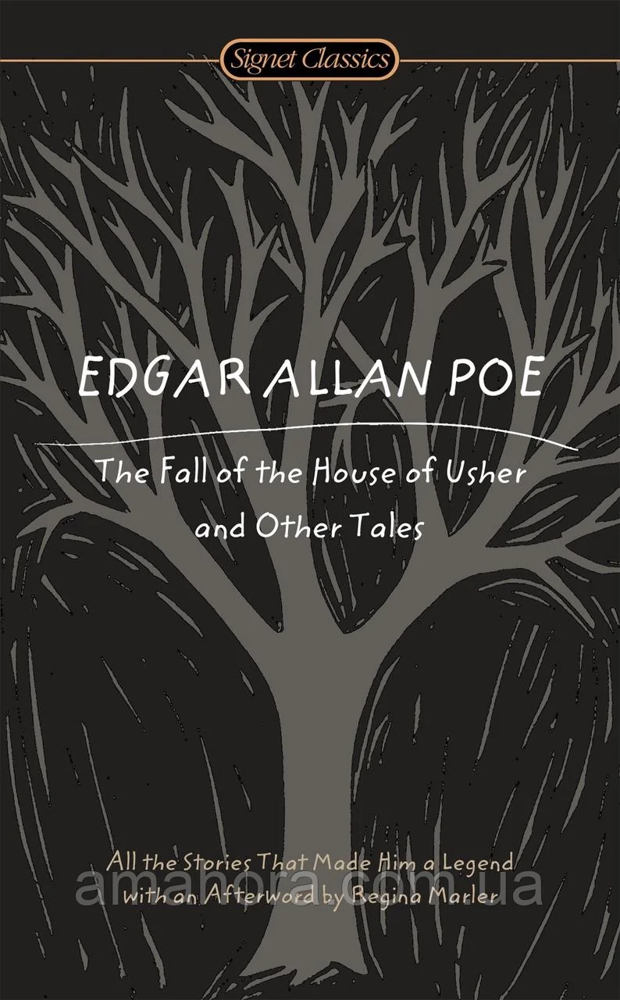

0
стр. з
0
сторінок
завантаження...

Эдгар По
Падение дома Ашеров
Перевел Андрей Бессонов
Метод чтения Ильи Франка
Сontents
The Black Cat
(Черный кот)
For the most wild, yet most homely narrative which I am about to pen (в чрезвычайно дикий = сумасбродный, но и чрезвычайно обыденный рассказ, который я собираюсь записать; to be about to do something — собираться что-то делать: "быть около что-то делать"), I neither expect nor solicit belief (я ни ожидаю, ни требую веры). Mad indeed would I be to expect it (поистине безумным был бы я — ожидать ее), in a case where my very senses reject their own evidence (в таком случае, где самые мои чувства отвергают свои же показания). Yet, mad am I not (но безумным я не являюсь) — and very surely do I not dream (и совершенно точно я не фантазирую; to dream — мечтать, видеть сны). But tomorrow I die, and today I would unburthen my soul (но я завтра я умираю = умру, и сегодня я /желал/ бы облегчить свою душу).
wild [waIld], narrative [`nxrqtIv], neither [`naIDq] или [`nJDq], solicit [sq`lIsIt], belief [bI`lJf], indeed [In`dJd], reject [rI`Gekt], evidence [`evId(q)ns], surely [`Svqli], would [wVd]
For the most wild, yet most homely narrative which I am about to pen, I neither expect nor solicit belief. Mad indeed would I be to expect it, in a case where my very senses reject their own evidence. Yet, mad am I not — and very surely do I not dream. But tomorrow I die, and today I would unburthen my soul.
My immediate purpose is to place before the world (моя ближайшая цель — поставить перед миром = поведать миру), plainly, succinctly, and without comment (просто, кратко и без комментариев), a series of mere household events (череду простых домашних происшествий). In their consequences, these events have terrified — have tortured — have destroyed me (своими последствиями эти происшествия ужаснули — измучили — погубили меня). Yet I will not attempt to expound them (и все же я не буду пытаться толковать их). To me, they have presented little but Horror (мне они дали мало что, кроме Ужаса = мне они принесли только Ужас) — to many they will seem less terrible than baroques (многим они покажутся менее ужасными, чем вычурные вымыслы).
immediate [I`mJdiqt], purpose [`pWpqs], world [wWld], succinctly [sqk`sIN(k)tli], comment [`kPment], series [`sIqrJz], event [I`vent], consequence [`kPnsIkwqns], torture [`tLCq], attempt [q`tem(p)t], present (дать, представить) [prI`zent], horror [`hPrq], baroque [bq`rPk]
My immediate purpose is to place before the world, plainly, succinctly, and without comment, a series of mere household events. In their consequences, these events have terrified — have tortured — have destroyed me. Yet I will not attempt to expound them. To me, they have presented little but Horror — to many they will seem less terrible than baroques.
Hereafter, perhaps, some intellect may be found (в будущем, возможно, может найтись какой-то ум) which will reduce my phantasm to the commonplace (который сведет мой фантазм к чему-то обычному: "к общему месту"; common — общий; place — место) — some intellect more calm, more logical, and far less excitable than my own (некий ум, более спокойный, более логичный и гораздо менее /легко/возбудимый, чем мой собственный), which will perceive, in the circumstances I detail with awe (который воспримет = увидит в тех обстоятельствах, которые я подробно обрисовываю с трепетом), nothing more than an ordinary succession of very natural causes and effects (ничего более, чем обычную последовательность самых естественных причин и следствий).
hereafter [hIqr`Rftq], perhaps [pq`hxps], reduce [rI`djHs], calm [kRm], excitable [Ik`saItqbl], own [qVn], perceive [pq`sJv], circumstance [`sWkqmstxns], detail [`dJteIl], awe [L], nothing [`nATIN], succession [sqk`seSn], natural [`nxC(q)r(q)l], cause [kLz]
Hereafter, perhaps, some intellect may be found which will reduce my phantasm to the commonplace — some intellect more calm, more logical, and far less excitable than my own, which will perceive, in the circumstances I detail with awe, nothing more than an ordinary succession of very natural causes and effects.
From my infancy I was noted for the docility and humanity of my disposition (с детства я был замечен = отличался смирностью и гуманностью характера). My tenderness of heart was even so conspicuous (моя нежность была даже настолько ярко выраженной) as to make me the jest of my companions (чтобы сделать меня посмешищем для моих товарищей). I was especially fond of animals (я особенно любил животных; to be fond of — любить что-либо, кого-либо; fond — любящий), and was indulged by my parents with a great variety of pets (и был избалован моими родителями = и мои родители баловали меня большим многообразием питомцев). With these I spent most of my time (с ними я проводил б oльшую часть времени; to spend), and never was so happy as when feeding and caressing them (и никогда не был так счастлив, как когда кормил или ласкал их: "кормя и лаская").
infancy [`Infqnsi], docility [dq`sIlqti], humanity [hjH`mxnqti], heart [hRt], even [`Jv(q)n], conspicuous [kqn`spIkjVqs], companion [kqm`pxnjqn], especially [I`speS(q)li], animal [`xnIm(q)l], great [greIt], variety [vq`raIqti], caress [kq`res]
From my infancy I was noted for the docility and humanity of my disposition. My tenderness of heart was even so conspicuous as to make me the jest of my companions. I was especially fond of animals, and was indulged by my parents with a great variety of pets. With these I spent most of my time, and never was so happy as when feeding and caressing them.
This peculiarity of character grew with my growth (эта особенность характера росла с моим ростом; to grow), and in my manhood, I derived from it one of my principal sources of pleasure (и в зрелом возрасте: "мужестве" я получил из нее один из моих главных источников удовольствия). To those who have cherished an affection for a faithful and sagacious dog (тем, которые питали любовь к верному и умному псу), I need hardly be at the trouble of explaining (я едва ли должен трудиться объяснять: "я должен едва ли быть у трудности объяснения") the nature or the intensity of the gratification thus derivable (природу или силу удовлетворения, таким образом получаемого). There is something in the unselfish and self-sacrificing love of a brute (есть что-то в неэгоистичной и самоотверженной любви зверя; self-sacrificing — самоотверженный: "само-жертвующий"; to sacrifice — жертвовать), which goes directly to the heart of him who has had frequent occasion (чт o идет прямо к сердцу того: "его"[1], у кого был частый случай = возможность ) to test the paltry friendship and gossamer fidelity of mere Man (испытать ничтожную дружбу и легковесную верность обычного человека; gossamer — легкий, фривольный развязный; газ /ткань/; mere — всего лишь).
peculiarity [pIkjHli`xrqti], character [`kxrqktq], growth [grqVT], principal [`prInsqp(q)l], source [sLs], pleasure [`pleZq], sagacious [sq`geISqs], trouble [trAbl], nature [`neICq], sacrifice [`sxkrIfaIs], frequent (частый) [`frJkwqnt]
This peculiarity of character grew with my growth, and in my manhood, I derived from it one of my principal sources of pleasure. To those who have cherished an affection for a faithful and sagacious dog, I need hardly be at the trouble of explaining the nature or the intensity of the gratification thus derivable. There is something in the unselfish and self-sacrificing love of a brute, which goes directly to the heart of him who has had frequent occasion to test the paltry friendship and gossamer fidelity of mere Man.
I married early (я женился рано), and was happy to find in my wife a disposition not uncongenial with my own (и был счастлив найти в своей жене характер, не чуждый моему собственному). Observing my partiality for domestic pets (заметив мое пристрастие к домашним животным), she lost no opportunity of procuring those of the most agreeable kind (она не упускала возможности раздобыть таковых — самого приятного свойства; to lose — терять, упускать; kind — разновидность, род, сорт). We had birds, gold-fish, a fine dog, rabbits, a small monkey, and a cat (у нас были птицы, золотые рыбки, превосходный пес, кролики, обезьянка и кот).
early [`Wli], uncongenial [Ankqn`GJniql], own [qVn], observe [qb`zWv], partiality [pRSi`xlqti], opportunity [Ppq`tjHnqti], procure [prq`kjVq], agreeable [q`grJqbl], kind [kaInd]
I married early, and was happy to find in my wife a disposition not uncongenial with my own. Observing my partiality for domestic pets, she lost no opportunity of procuring those of the most agreeable kind. We had birds, gold-fish, a fine dog, rabbits, a small monkey, and a cat.
This latter was a remarkably large and beautiful animal (этот последний был замечательно большой и красивый зверь), entirely black, and sagacious to an astonishing degree (полностью черный и умный в поразительной степени). In speaking of his intelligence, my wife, who at heart was not a little tinctured with superstition (говоря о его уме, моя жена, которая в душе была весьма суеверна: "в сердце была немало подкрашена суеверностью"), made frequent allusion to the ancient popular notion (часто ссылалась на древнее распространенное представление), which regarded all black cats as witches in disguise (которое считало всех черных кошек преображенными ведьмами: "ведьмами под личиной"). Not that she was ever serious upon this point (не то что бы она когда-либо бывала серьезна в этом вопросе: "на этом пункте") — and I mention the matter at all (и я вообще упоминаю об этом деле; at all — вообще) for no better reason than that it happens, just now, to be remembered (лишь по той причине, что оно сейчас случайно вспомнилось: "по никакой лучшей причине, чем /та/, что оно случилось теперь быть вспомненным").
remarkably [rI`mRkqbli], beautiful [`bjHtIf(q)l], entirely [In`taIqli], degree [dI`grJ], heart [hRt], superstition [sHpq`stISn], allusion [q`lHZn], ancient [`eInSqnt], popular [`pPpjqlq], regard [rI`gRd], disguise [dIs`gaIz], serious [`sIqriqs]
This latter was a remarkably large and beautiful animal, entirely black, and sagacious to an astonishing degree. In speaking of his intelligence, my wife, who at heart was not a little tinctured with superstition, made frequent allusion to the ancient popular notion, which regarded all black cats as witches in disguise. Not that she was ever serious upon this point — and I mention the matter at all for no better reason than that it happens, just now, to be remembered.
Pluto — this was the cat’s name — was my favorite pet and playmate (Плутон — таково было имя этого кота — был моим любимым питомцем и товарищем). I alone fed him (я один кормил его; to feed), and he attended me wherever I went about the house (а он сопровождал меня, куда бы я ни ходил по дому). It was even with difficulty that I could prevent him from following me through the streets (и лишь с трудом мог я помешать ему следовать за мной по улицам; to prevent from — мешать: "удержать от"; through — через, сквозь).
Pluto [`plHtqV], favorite [`feIv(q)rIt], attend [q`tend], difficulty [`dIfIk(q)lti], could [kVd], prevent [prI`vent], through [TrH]
Pluto — this was the cat’s name — was my favorite pet and playmate. I alone fed him, and he attended me wherever I went about the house. It was even with difficulty that I could prevent him from following me through the streets.
Our friendship lasted, in this manner, for several years (наша дружба длилась таким образом несколько лет), during which my general temperament and character (за которые мой общий нрав и характер) — through the instrumentality of the Fiend Intemperance (посредством = под влиянием Демона Невоздержанности) — had (I blush to confess it) experienced a radical alteration for the worse (— я стыжусь признаваться в этом — претерпели коренное изменение к худшему; to blush — краснеть; смущаться). I grew, day by day, more moody, more irritable, more regardless of the feelings of others (я становился день за днем более мрачным, более раздражительным, более безразличным к чувствам других; to grow — расти, становиться).
friendship [`fren(d)SIp], temperament [`temp(q)rqmqnt], instrumentality [Instrqmen`txlqti], fiend [fJnd], intemperance [In`temp(q)r(q)ns], confess [kqn`fes], experience [Ik`spIqriqns], radical [`rxdIk(q)l], alteration [Llt(q)r`eISn], irritable [`IrItqbl]
Our friendship lasted, in this manner, for several years, during which my general temperament and character — through the instrumentality of the Fiend Intemperance — had (I blush to confess it) experienced a radical alteration for the worse. I grew, day by day, more moody, more irritable, more regardless of the feelings of others.
I suffered myself to use intemperate language to my wife (я позволял себе использовать несдержанный язык, /обращаясь/ к своей жене). At length, I even offered her personal violence (наконец, я даже поднял на нее руку: "дал ей личное насилие"; to offer — предложить, дать, оказать; violence — жестокость, насилие, применение силы). My pets, of course, were made to feel the change in my disposition (моим питомцам, конечно, пришлось ощутить эту перемену в моем характере: "питомцы были заставлены"; to make — делать; заставлять). I not only neglected, but ill-used them (я не только пренебрегал /ими/, но и жестоко с ними обращался; ill — плохой; больной; to use — использовать; обращаться с кем-либо).
intemperate [In`temp(q)rqt], language [`lxNgwIG], even [`Jv(q)n], violence [`vaIql(q)ns], course [kLs], change [CeInG], neglect [nI`glekt]
I suffered myself to use intemperate language to my wife. At length, I even offered her personal violence. My pets, of course, were made to feel the change in my disposition. I not only neglected, but ill-used them.
For Pluto, however, I still retained sufficient regard (к Плутону, однако, я все еще сохранял достаточное уважение) to restrain me from maltreating him (чтобы удержать меня от того, чтобы плохо обращаться с ним), as I made no scruple of maltreating the rabbits, the monkey, or even the dog (как я не стеснялся плохо обращаться с кроликами, обезьянкой или даже псом; scruple — крупица; сомнение, колебание; моральный принцип; угрызения совести), when by accident, or through affection, they came in my way (когда по случайности или из-за ласки /ко мне/ они попадались мне на пути: "приходили в мой путь"). But my disease grew upon me (но моя болезнь все больше подчиняла меня: "росла на меня"; to grow) — for what disease is like Alcohol! (ибо какая болезнь сравнится с Алкоголем!; like — похожий) — and at length even Pluto, who was now becoming old, and consequently somewhat peevish (и наконец даже Плутон, который теперь становился стар и, следовательно, несколько раздражителен) — even Pluto began to experience the effects of my ill temper (даже Плутон начал испытывать последствия моего дурного нрава).
Pluto [`plHtqV], however [haV`evq], sufficient [sq`fIS(q)nt], regard [rI`gRd], restrain [rI`streIn], maltreat [mxl`trJt], scruple [skrHpl], monkey [`mANki], accident [`xksId(q)nt], through [TrH], disease [dI`zJz], alcohol [`xlkqhPl], become [bI`kAm], consequently [`kPnsIkwqntli], somewhat [`sAmwPt], experience [Ik`spIqriqns]
For Pluto, however, I still retained sufficient regard to restrain me from maltreating him, as I made no scruple of maltreating the rabbits, the monkey, or even the dog, when by accident, or through affection, they came in my way. But my disease grew upon me — for what disease is like Alcohol! — and at length even Pluto, who was now becoming old, and consequently somewhat peevish — even Pluto began to experience the effects of my ill temper.
One night, returning home, much intoxicated, from one of my haunts about town (одним вечером, вернувшись домой, очень пьяным, из одного из моих излюбленных притонов в городе; haunt — притон, логово, любимое место; about town — в городе = имеющий отношение к светской, веселой жизни, может быть, с оттенком порочности), I fancied that the cat avoided my presence (я вообразил, будто кот избегает моего общества: "присутствия"). I seized him (я схватил его); when, in his fright at my violence (когда, в испуге от моего = совершаемого мною насилия), he inflicted a slight wound upon my hand with his teeth (он нанес небольшую ранку моей руке своими зубами). The fury of a demon instantly possessed me (демоническая ярость тут же охватила меня; to possess — владеть; одержать /о демоне, духе/). I knew myself no longer (я не знал = не помнил себя больше; to know — знать).
return [rI`tWn], intoxicated [In`tPksIkeItId], haunt [hLnt], fancy [`fxnsi], avoid [q`vOId], presence [`prezqns], seize [sJz], fright [fraIt], inflict [In`flIkt], wound (рана) [wVnd], fury [`fjVqri], demon [`dJmqn], instantly [`Instqntli], possess [pq`zes]
One night, returning home, much intoxicated, from one of my haunts about town, I fancied that the cat avoided my presence. I seized him; when, in his fright at my violence, he inflicted a slight wound upon my hand with his teeth. The fury of a demon instantly possessed me. I knew myself no longer.
My original soul seemed, at once, to take its flight from my body (моя изначальная = собственная душа, казалось, сразу совершила побег из моего тела; to seem — казаться) and a more than fiendish malevolence, gin-nurtured, thrilled every fibre of my frame (и более чем дьявольская злоба, вскормленная джином, проняла все фибры моего тела: "каждую фибру"; fiend — дьявол, бес; to nurture — воспитывать, выращивать; способствовать; frame — рама; скелет, каркас; тело). I took from my waistcoat-pocket a pen-knife (я достал из жилетного кармана перочинный нож; to take — брать), opened it, grasped the poor beast by the throat (открыл его, схватил бедного зверя за горло), and deliberately cut one of its eyes from the socket (и не торопясь вырезал один из его глаз из глазницы; deliberately —преднамеренно, умышленно, нарочно; медленно, не торопясь; to deliberate — обдумывать, размышлять; to cut — резать; out — наружу; to cut out — вырезать)! I blush, I burn, I shudder, while I pen the damnable atrocity (я краснею от стыда, я горю, я содрогаюсь, пока описываю это предосудительное зверство; damnable — заслуживающий осуждения, порицания; подлежащий осуждению /о человеке/; мерзкий, отвратительный, ужасный).
original [q`rIG(q)n(q)l], soul [sqVl], once [wAns], fiendish [`fJndIS], malevolence [mq`lev(q)lqns], nurture [`nWCq], fibre [`faIbq], knife [naIf], poor [pVq], throat [TrqVt], deliberately [dI`lIb(q)rqtli], burn [bWn], damnable [`dxmnqbl], atrocity [q`trPsqti]
My original soul seemed, at once, to take its flight from my body and a more than fiendish malevolence, gin-nurtured, thrilled every fibre of my frame. I took from my waistcoat-pocket a pen-knife, opened it, grasped the poor beast by the throat, and deliberately cut one of its eyes from the socket! I blush, I burn, I shudder, while I pen the damnable atrocity.
When reason returned with the morning (когда рассудок вернулся утром: "с утром") — when I had slept off the fumes of the night’s debauch (когда я проспался: "отоспал пары ночного кутежа"; to sleep — спать) — I experienced a sentiment half of horror, half of remorse (я испытал чувство наполовину ужаса, наполовину раскаяния), for the crime of which I had been guilty (за преступление, в котором я был виноват); but it was, at best, a feeble and equivocal feeling (но это было, в лучшем случае, слабое и неясное чувство; equivocal — двусмысленный, допускающий двоякое толкование; неясный, неопределенный), and the soul remained untouched (и душа осталась нетронутой). I again plunged into excess, and soon drowned in wine all memory of the deed (я снова погрузился в неумеренность и вскоре потопил в вине всякое воспоминание об этом поступке).
reason [`rJz(q)n], fume [fjHm], debauch [dI`bLC], sentiment [`sentImqnt], horror [`hPrq], remorse [rI`mLs], guilty [`gIlti], equivocal [I`kwIvqk(q)l], remain [rI`meIn], untouched [An`tACt], plunge [plAnG], excess [Ik`ses], drown [draVn]
When reason returned with the morning — when I had slept off the fumes of the night’s debauch — I experienced a sentiment half of horror, half of remorse, for the crime of which I had been guilty; but it was, at best, a feeble and equivocal feeling, and the soul remained untouched. I again plunged into excess, and soon drowned in wine all memory of the deed.
In the meantime the cat slowly recovered (тем временем кот медленно оправился). The socket of the lost eye presented, it is true, a frightful appearance (глазница утраченного глаза представляла, это правда, страшное зрелище; lost — потерянный; to lose — терять), but he no longer appeared to suffer any pain (но он больше, кажется, не испытывал никакой боли; to appear — казаться; to suffer — страдать; испытывать, переносить). He went about the house as usual (он ходил по дому как обычно), but, as might be expected, fled in extreme terror at my approach (но, как и могло бы быть ожидаемым = что неудивительно, убегал в крайнем ужасе при моем приближении; to flee — спасаться бегством). I had so much of my old heart left (у меня оставалось столько старого сердца = во мне оставалось еще столько моего прежнего я; to have left — иметь оставшимся; to leave — оставлять), as to be at first grieved by this evident dislike (чтобы быть сперва огорченным этой очевидной нелюбовью) on the part of a creature which had once so loved me (со стороны существа, которое когда-то так любило меня; part — часть; доля; сторона). But this feeling soon gave place to irritation (но это чувство скоро дало = уступило место раздражению; to give).
recover [rI`kAvq], present (представлять) [prI`zent], appearance [q`pIqr(q)ns], usual [`jHZ(q)l], expect [Ik`spekt], extreme [Ik`strJm], approach [q`prqVC], grieve [grJv], evident [`evId(q)nt], creature [`krJCq]
In the meantime the cat slowly recovered. The socket of the lost eye presented, it is true, a frightful appearance, but he no longer appeared to suffer any pain. He went about the house as usual, but, as might be expected, fled in extreme terror at my approach. I had so much of my old heart left, as to be at first grieved by this evident dislike on the part of a creature which had once so loved me. But this feeling soon gave place to irritation.
And then came, as if to my final and irrevocable overthrow (а затем пришел, словно бы для моего окончательного и необратимого низвержения), the spirit of perverseness (дух извращенности; perverse — извращенный). Of this spirit philosophy takes no account (этот дух философия не берет в расчет: "об этом духе философия не берет отчета"). Yet I am not more sure that my soul lives (и все же я не более убежден в том, что моя душа живет), than I am that perverseness is one of the primitive impulses of the human heart (чем я /уверен/ в том, что извращенность — один из первичных импульсов человеческого сердца) — one of the indivisible primary faculties, or sentiments (одна из неделимых первичных способностей или чувств), which give direction to the character of Man (которые дают направление характеру человека)[2].
final [`faIn(q)l], irrevocable [I`revqkqbl], spirit [`spIrIt], perverseness [pq`vWsnqs], philosophy [fI`lPsqfi], account [q`kaVnt], sure [SVq], live (жить) [lIv], primitive [`prImItIv], impulse [`ImpAls], heart [hRt], indivisible [IndI`vIzqbl], faculty [`fxk(q)lti], sentiment [`sentImqnt], character [`kxrqktq]
And then came, as if to my final and irrevocable overthrow, the spirit of perverseness. Of this spirit philosophy takes no account. Yet I am not more sure that my soul lives, than I am that perverseness is one of the primitive impulses of the human heart — one of the indivisible primary faculties, or sentiments, which give direction to the character of Man.
Who has not, a hundred times, found himself committing a vile or a silly action (кто сотни раз не обнаруживал себя совершающим гнусный или легкомысленный поступок; to find — найти, обнаружить), for no other reason than because he knows he should not (ни по какой другой причине, как потому, что он знает, что не должен /делать этого/)? Have we not a perpetual inclination, in the teeth of our best judgment (разве не имеем мы вечной склонности, наперекор нашему лучшему суждению = разуму: "в зубы"), to violate that which is Law (нарушать то, что является Законом), merely because we understand it to be such (просто потому, что мы понимаем, что оно им является; such — такой, таковой)?
commit [kq`mIt], action [`xkS(q)n], know [nqV], should [SVd], perpetual [pq`peCVql], judgment [`GAGmqnt], violate [`vaIqleIt], law [lL], merely [`mIqli]
Who has not, a hundred times, found himself committing a vile or a silly action, for no other reason than because he knows he should not? Have we not a perpetual inclination, in the teeth of our best judgment, to violate that which is Law, merely because we understand it to be such?
This spirit of perverseness, I say, came to my final overthrow (этот дух извращенности, говорю я, дошел = довел до моей окончательной гибели). It was this unfathomable longing of the soul to vex itself (это было = именно это неизмеримое стремление души мучить себя) — to offer violence to its own nature (преподносить = совершать насилие над своей природой) — to do wrong for the wrong’s sake only (совершать дурное только лишь ради дурного; wrong — неправильный, ошибочный) — that urged me to continue and finally to consummate the injury (которое побудило меня продолжить и наконец довести до конца тот ущерб) I had inflicted upon the unoffending brute (который я нанес безобидному зверю).
unfathomable [An`fxDqmqbl], violence [`vaIql(q)ns], nature [`neICq], wrong [rPN], urge [WG], continue [kqn`tInjH], consummate (довести до конца) [`kPnsqmeIt], injury [`InG(q)ri], inflict [In`flIkt], unoffending [Anq`fendIN], brute [brHt]
This spirit of perverseness, I say, came to my final overthrow. It was this unfathomable longing of the soul to vex itself — to offer violence to its own nature — to do wrong for the wrong’s sake only — that urged me to continue and finally to consummate the injury I had inflicted upon the unoffending brute.
One morning, in cool blood (одним утром, хладнокровно: "в прохладной крови"), I slipped a noose about its neck (я затянул петлю вокруг его шеи) and hung it to the limb of a tree (и повесил его на ветку дерева; to hang); — hung it with the tears streaming from my eyes, and with the bitterest remorse at my heart (повесил его со слезами, струившимися из моих глаз, и с горчайшими угрызениями совести в моем сердце); — hung it because I knew that it had loved me (повесил его потому, что я знал, что он /раньше/ любил меня), and because I felt it had given me no reason of offence (и потому, что я чувствовал, что он не давал мне причины для обиды); — hung it because I knew that in so doing I was committing a sin (повесил его потому, что я знал, что, делая так, я совершал грех) — a deadly sin that would so jeopardize my immortal soul (тяжкий: "смертный" грех[3], который подвергнет мою бессмертную душу такой опасности) as to place it — if such a thing were possible — even beyond the reach of the infinite mercy of the Most Merciful and Most Terrible God (что поместит ее = душу — если такое возможно — за пределы досягаемости бесконечного милосердия Милосерднейшего и Ужаснейшего Бога).
blood [blAd], noose [nHs], limb [lIm], tear (слеза) [tIq], eye [aI], remorse [rI`mLs], offence [q`fens], deadly [`dedli], jeopardize [`GepqdaIz], beyond [bi`Pnd], infinite [`InfInqt], mercy [`mWsi]
One morning, in cool blood, I slipped a noose about its neck and hung it to the limb of a tree; — hung it with the tears streaming from my eyes, and with the bitterest remorse at my heart; — hung it because I knew that it had loved me, and because I felt it had given me no reason of offence; — hung it because I knew that in so doing I was committing a sin — a deadly sin that would so jeopardize my immortal soul as to place it — if such a thing were possible — even beyond the reach of the infinite mercy of the Most Merciful and Most Terrible God.
On the night of the day on which this cruel deed was done (ночью того дня, в который это жестокое деяние было совершено), I was aroused from sleep by the cry of fire (я был разбужен ото сна криком о пожаре). The curtains of my bed were in flames (полог моего кровати был в огне). The whole house was blazing (весь дом пылал; whole — целый). It was with great difficulty that (лишь с большой трудностью: "это было с большой трудностью, что") my wife, a servant, and myself, made our escape from the conflagration (моя жена, слуга и я сам совершили бегство из пламени). The destruction was complete (разрушение было полным). My entire worldly wealth was swallowed up (мое все мирское богатство было поглощено), and I resigned myself thenceforward to despair (и я предался с тех пор отчаянию).
cruel [`krHql], done [dAn], curtain [`kWt(q)n], whole [hqVl], difficulty [`dIfIk(q)lti], servant [`sWv(q)nt], complete [kqm`plJt], entire [In`taIq], wealth [welT], swallow [`swPlqV], resign [rI`zaIn], thenceforward [Dens`fLwqd], despair [dI`speq]
On the night of the day on which this cruel deed was done, I was aroused from sleep by the cry of fire. The curtains of my bed were in flames. The whole house was blazing. It was with great difficulty that my wife, a servant, and myself, made our escape from the conflagration. The destruction was complete. My entire worldly wealth was swallowed up, and I resigned myself thenceforward to despair.
I am above the weakness of seeking to establish a sequence of cause and effect (я — выше слабости попыток установить последовательность причины и следствия; above — над; to seek — искать, стремиться), between the disaster and the atrocity (между катастрофой и злодеянием). But I am detailing a chain of facts (но я подробно описываю цепь событий) — and wish not to leave even a possible link imperfect (и не желаю оставить даже одно возможное звено несовершенным = обойти вниманием). On the day succeeding the fire, I visited the ruins (в день, последовавший за пожаром, я посетил руины). The walls, with one exception, had fallen in (стены, за одним исключением, обвалились; to fall in). This exception was found in a compartment wall (это исключение было найдено в перегородке = составляла перегородка: "перегородочная стена"), not very thick (не очень толстая), which stood about the middle of the house (которая стояла примерно в середине дома: "около"), and against which had rested the head of my bed (и к которой прижималось изголовье моей кровати; against — против, напротив; к).
above [q`bAv], sequence [`sJkwqns], cause [kLz], effect [I`fekt], disaster [dI`zRstq], atrocity [q`trPsqti], detail [`dJteIl], even [`Jv(q)n], imperfect [Im`pWfqkt], succeed [sqk`sJd], ruin [`rHIn], against [q`genst], head [hed]
I am above the weakness of seeking to establish a sequence of cause and effect, between the disaster and the atrocity. But I am detailing a chain of facts — and wish not to leave even a possible link imperfect. On the day succeeding the fire, I visited the ruins. The walls, with one exception, had fallen in. This exception was found in a compartment wall, not very thick, which stood about the middle of the house, and against which had rested the head of my bed.
The plastering had here, in great measure, resisted the action of the fire (штукатурка здесь в большой мере устояла перед действием огня; to resist — сопротивляться) — a fact which I attributed to its having been recently spread (факт, который я приписал тому, что ее = штукатурку недавно нанесли; to spread — разворачивать, расстилать; намазывать; наносить). About this wall a dense crowd were collected (около этой стены густая толпа собралась), and many persons seemed to be examining a particular portion of it (и многие люди, казалось, осматривали определенную часть ее: "казались осматривать") with very minute and eager attention (с пристальным и напряженным вниманием; minute — мельчайший). The words "strange!" "singular!" and other similar expressions, excited my curiosity (слова "странно!", "исключительно!" и другие похожие выражения возбудили мое любопытство).
plastering [`plRst(q)rIN], measure [`meZq], resist [rI`zIst], attribute (приписывать) [q`trIbjHt], recently [`rJs(q)ntli], spread [spred], crowd [kraVd], examine [Ig`zxmIn], particular [pq`tIkjqlq], portion [`pLS(q)n], minute (мельчайший) [maI`njHt], singular [`sINgjqlq], similar [`sImIlq], curiosity [kjVqri`Psqti]
The plastering had here, in great measure, resisted the action of the fire — a fact which I attributed to its having been recently spread. About this wall a dense crowd were collected, and many persons seemed to be examining a particular portion of it with very minute and eager attention. The words "strange!" "singular!" and other similar expressions, excited my curiosity.
I approached and saw (я приблизился и увидел), as if graven in bas relief upon the white surface (как будто высеченную в /виде/ барельефа на белой поверхности; to grave — гравировать; высекать), the figure of a gigantic cat (фигуру гигантского кота). The impression was given with an accuracy truly marvelous (впечатление было передано = фигура была передана с точностью поистине чудесной). There was a rope about the animal’s neck (вокруг шеи животного была веревка).
approach [q`prqVC], relief [rI`lJf], surface [`sWfIs], figure [`fIgq], gigantic [GaI`gxntIk], accuracy [`xkjqrqsi], truly [`trHli], marvelous [`mRv(q)lqs]
I approached and saw, as if graven in bas relief upon the white surface, the figure of a gigantic cat. The impression was given with an accuracy truly marvelous. There was a rope about the animal’s neck.
When I first beheld this apparition (когда я впервые увидел этот призрак; to behold) — for I could scarcely regard it as less (ибо я едва ли мог рассматривать его как /нечто/ меньшее) — my wonder and my terror were extreme (мое удивление и мой ужас были чрезвычайными). But at length reflection came to my aid (но наконец размышление пришло мне на помощь). The cat, I remembered, had been hung in a garden adjacent to the house (кот, я вспомнил, был повешен в саду, прилегающем к дому). Upon the alarm of fire, this garden had been immediately filled by the crowd (при пожарной тревоге этот сад был немедленно заполнен толпой) — by some one of whom the animal must have been cut from the tree (кем-то из каковой /толпы/ животное, должно быть, было срезано с дерева; to cut) and thrown, through an open window, into my chamber (и брошено в открытое окно в мою комнату; to throw; through — через, сквозь).
scarcely [`skeqsli], regard [rI`gRd], wonder [`wAndq], extreme [Ik`strJm], length [leN(k)T], adjacent [q`GeIs(q)nt], alarm [q`lRm], immediately [I`mJdiqtli], chamber [`CeImbq]
When I first beheld this apparition — for I could scarcely regard it as less — my wonder and my terror were extreme. But at length reflection came to my aid. The cat, I remembered, had been hung in a garden adjacent to the house. Upon the alarm of fire, this garden had been immediately filled by the crowd — by some one of whom the animal must have been cut from the tree and thrown, through an open window, into my chamber.
This had probably been done with the view of arousing me from sleep (это, вероятно, было сделано с видом = с целью разбудить меня ото сна). The falling of other walls had compressed the victim of my cruelty into the substance of the freshly-spread plaster (падение других стен вдавило жертву моей жестокости в толщу свежеположенной штукатурки; to spread); the lime of which, with the flames, and the ammonia from the carcass, had then accomplished the portraiture as I saw it (известка которой, вместе с пламенем и аммиаком из развалин довершили портрет, каким я увидел его).
view [vjH], arouse [q`raVz], compress [kqm`pres], substance [`sAbst(q)ns], ammonia [q`mqVniq], carcass [`kRkqs], accomplish [q`kAmplIS], portraiture [`pLtrICq]
This had probably been done with the view of arousing me from sleep. The falling of other walls had compressed the victim of my cruelty into the substance of the freshly-spread plaster; the lime of which, with the flames, and the ammonia from the carcass, had then accomplished the portraiture as I saw it.
Although I thus readily accounted to my reason, if not altogether to my conscience, for the startling fact just detailed (хотя я таким образом без труда объяснил моему рассудку, хоть и не вполне — моей совести, поразительный факт, только что описанный; to account for — объяснить: "отчитаться за"), it did not the less fail to make a deep impression upon my fancy (он все же не преминул произвести глубокое впечатление на мою фантазию; to fail — не суметь, не сделать). For months I could not rid myself of the phantasm of the cat (месяцами я не мог избавиться от призрака кота); and, during this period, there came back into my spirit a half-sentiment (и, в течение этого времени, вернулось в мою душу полу-чувство; to come back — вернуться: "прийти назад"; spirit — дух; душа) that seemed, but was not, remorse (которое казалось, но не было раскаянием).
although [Ll`DqV], readily [`redIli], conscience [`kPnS(q)ns], month [mAnT], phantasm [`fxntxz(q)m], period [`pIqriqd]
Although I thus readily accounted to my reason, if not altogether to my conscience, for the startling fact just detailed, it did not the less fail to make a deep impression upon my fancy. For months I could not rid myself of the phantasm of the cat; and, during this period, there came back into my spirit a half-sentiment that seemed, but was not, remorse.
I went so far as to regret the loss of the animal (я дошел до того: "пошел так далеко", чтобы жалеть об утрате животного), and to look about me, among the vile haunts which I now habitually frequented (и оглядываться вокруг себя, в гнусных притонах, которые я теперь привычно посещал), for another pet of the same species, and of somewhat similar appearance (в поисках питомца того же /биологического/ вида и до некоторой степени похожего /внешнего/ вида), with which to supply its place (которым /я бы мог/ занять его место: "восполнить").
regret [rI`gret], among [q`mAN], haunt [hLnt], habitually [hq`bICVli], frequent (посещать) [frI`kwent], species [`spJSIz], appearance [q`pIqr(q)ns], supply [sq`plaI]
I went so far as to regret the loss of the animal, and to look about me, among the vile haunts which I now habitually frequented, for another pet of the same species, and of somewhat similar appearance, with which to supply its place.
One night as I sat, half stupefied, in a den of more than infamy (одной ночью, когда я сидел, наполовину одурманенный, в притоне с более чем дурной славой), my attention was suddenly drawn to some black object (мое внимание было внезапно привлечено к какому-то черному предмету; to draw — тащить, тянуть; обращать чье-либо внимание на что-либо /не на себя/), reposing upon the head of one of the immense hogsheads of Gin, or of Rum (покоившемуся на крышке: голове" одной из огромных бочек джина или рома), which constituted the chief furniture of the apartment (которые составляли основную мебель этого помещения). I had been looking steadily at the top of this hogshead for some minutes (я неотрывно смотрел на крышку: "верхушку" этой бочки несколько минут), and what now caused me surprise was the fact (и что теперь вызвало мое удивление, был тот факт) that I had not sooner perceived the object thereupon (что я раньше не заметил этот предмет там = на крышке бочки; thereupon — в этой связи; на этой основе; зд., устар.: на этом).
stupefied [`stjHpIfaId], infamy [`Infqmi], object [`PbGIkt], repose [rI`pqVz], constitute [`kPnstItjHt], chief [CJf], furniture [`fWnICq], minute (минута) [`mInIt], surprise [sq`praIz], perceive [pq`sJv]
One night as I sat, half stupefied, in a den of more than infamy, my attention was suddenly drawn to some black object, reposing upon the head of one of the immense hogsheads of Gin, or of Rum, which constituted the chief furniture of the apartment. I had been looking steadily at the top of this hogshead for some minutes, and what now caused me surprise was the fact that I had not sooner perceived the object thereupon.
I approached it, and touched it with my hand (я приблизился к нему и коснулся его рукой). It was a black cat — a very large one (это был черный кот — очень большой) — fully as large as Pluto, and closely resembling him in every respect but one (полно = прямо такой же большой, как Плуто, и близко похожий на него в каждом отношении, кроме одного). Pluto had not a white hair upon any portion of his body (Плутон не имел ни одного белого волоска на какой-либо части своего тела); but this cat had a large, although indefinite splotch of white (но у этого кота было большое, хотя и неопределенное /по форме/ пятно белого /цвета/), covering nearly the whole region of the breast (покрывавшее почти все пространство груди).
approach [q`prqVC], touch [tAC], fully [`fVli], closely [`klqVsli], resemble [rI`zembl], respect [rI`spekt], hair [heq], portion [`pLS(q)n], indefinite [In`defInqt], cover [`kAvq], whole [hqVl], region [`rJG(q)n]
I approached it, and touched it with my hand. It was a black cat — a very large one — fully as large as Pluto, and closely resembling him in every respect but one. Pluto had not a white hair upon any portion of his body; but this cat had a large, although indefinite splotch of white, covering nearly the whole region of the breast.
Upon my touching him (когда я коснулся его: "по моем касании его"), he immediately arose, purred loudly, rubbed against my hand, and appeared delighted with my notice (он немедленно встал, громко замурлыкал, потерся о мою руку и показался обрадованным моим вниманием; to arise — подниматься). This, then, was the very creature of which I was in search (это, значит, было то самое существо, которое я искал: "которого я был в поиске"; then — тогда; значит, стало быть). I at once offered to purchase it of the landlord (я сразу предложил = вызвался приобрести его у хозяина); but this person made no claim to it (но этот человек не сделал = не изъявил притязания на него) — knew nothing of it — had never seen it before (ничего не знал о нем — никогда не видел его прежде).
immediately [I`mJdiqtli], purr [pW], notice [`nqVtIs], creature [`krJCq], search [sWC], purchase [`pWCqs]
Upon my touching him, he immediately arose, purred loudly, rubbed against my hand, and appeared delighted with my notice. This, then, was the very creature of which I was in search. I at once offered to purchase it of the landlord; but this person made no claim to it — knew nothing of it — had never seen it before.
I continued my caresses (я продолжил свои ласки), and, when I prepared to go home, the animal evinced a disposition to accompany me (и, когда я приготовился идти домой, зверь выказал расположение сопровождать меня). I permitted it to do so (я позволил ему сделать так = это); occasionally stooping and patting it as I proceeded (время от времени наклоняясь и похлопывая его, пока я шел; to proceed — направляться, идти; отправляться; продолжить движение /после остановки/). When it reached the house it domesticated itself at once (когда он дошел до дома, он освоился сразу же: "одомашнил себя"), and became immediately a great favorite with my wife (и немедленно стал большим любимцем у моей жены; to become).
continue [kqn`tInjH], caress [kq`res], prepare [prI`peq], evince [I`vIns], accompany [q`kAmpqni], permit [pq`mIt], proceed [prq(V)`sJd], favorite [`feIv(q)rIt]
I continued my caresses, and, when I prepared to go home, the animal evinced a disposition to accompany me. I permitted it to do so; occasionally stooping and patting it as I proceeded. When it reached the house it domesticated itself at once, and became immediately a great favorite with my wife.
For my own part, I soon found a dislike to it arising within me (с моей стороны, я вскоре обнаружил, что какая-то неприязнь к нему поднимается во мне: "нашел неприязнь поднимающейся"; to find). This was just the reverse of what I had anticipated (это было прямо обратное тому, чего я ожидал); but — I know not how or why it was — its evident fondness for myself rather disgusted and annoyed me (но — я не знаю, как и почему это было /так/ — его очевидная симпатия ко мне немало отвращала и злила меня). By slow degrees, these feelings of disgust and annoyance rose into the bitterness of hatred (медленными степенями = постепенно эти чувства отвращения и злобы поднялись = выросли в горечь ненависти; degree — градус; степень; ступень; to rise — подниматься). I avoided the creature (я избегал это животное); a certain sense of shame, and the remembrance of my former deed of cruelty, preventing me from physically abusing it (/при том, что/ какое-то чувство стыда и воспоминание о моем прежнем жестоком поступке мешало мне физически мучить его; deed — поступок; cruelty — жестокость; to prevent from — предотвращать от = мешать).
reverse [rI`vWs], anticipate [xn`tIsIpeIt], evident [`evId(q)nt], rather [`rRDq], disgust [dIs`gAst], annoy [q`nOI], annoyance [q`nOIqns], degree [dI`grJ], hatred [`heItrId], avoid [q`vOId], certain [`sWt(q)n], physically [`fIzIk(q)li]
For my own part, I soon found a dislike to it arising within me. This was just the reverse of what I had anticipated; but — I know not how or why it was — its evident fondness for myself rather disgusted and annoyed me. By slow degrees, these feelings of disgust and annoyance rose into the bitterness of hatred. I avoided the creature; a certain sense of shame, and the remembrance of my former deed of cruelty, preventing me from physically abusing it.
I did not, for some weeks, strike, or otherwise violently ill use it (несколько недель я не бил и не мучил его как-либо иначе; otherwise — иначе; to ill use — плохо обращаться; violently — жестоко; с применением силы); but gradually — very gradually — I came to look upon it with unutterable loathing (но постепенно — очень постепенно — я пришел к тому, чтобы смотреть на него с невыразимым омерзением), and to flee silently from its odious presence, as from the breath of a pestilence (и убегать молчаливо от его ненавистного присутствия, как от дыхания чумы).
otherwise [`ADqwaIz], violently [`vaIql(q)ntli], gradually [`grxGVqli], loathing [`lqVDIN], odious [`qVdiqs], presence [`prez(q)ns], breath [breT]
I did not, for some weeks, strike, or otherwise violently ill use it; but gradually — very gradually — I came to look upon it with unutterable loathing, and to flee silently from its odious presence, as from the breath of a pestilence.
What added, no doubt, to my hatred of the beast (что усиливало, несомненно, мою ненависть к этому зверю: "добавляло к ненависти"), was the discovery, on the morning after I brought it home (было открытие, /сделанное мною/ утром после того, как я привел его домой; to bring), that, like Pluto, it also had been deprived of one of its eyes (что, как и Плутон, он тоже был лишен одного из своих глаз). This circumstance, however, only endeared it to my wife (это обстоятельство, однако, лишь сделало его милее моей жене; to endear — внушить любовь, расположить, заставить полюбить), who, as I have already said, possessed, in a high degree, that humanity of feeling (которая, как я уже сказал, обладала в высокой степени той гуманностью чувств: "чувства") which had once been my distinguishing trait, and the source of many of my simplest and purest pleasures (которая когда-то была моей отличительной чертой и источником моих простейших и чистейших наслаждений).
doubt [daVt], discovery [dI`skAv(q)ri], brought [brLt], deprive [dI`praIv], eye [aI], circumstance [`sWkqmstxns], endear [In`dIq], possess [pq`zes], trait [treI(t)], source [sLs], pure [pjVq], purest [`pjVqrIst], pleasure [`pleZq]
What added, no doubt, to my hatred of the beast, was the discovery, on the morning after I brought it home, that, like Pluto, it also had been deprived of one of its eyes. This circumstance, however, only endeared it to my wife, who, as I have already said, possessed, in a high degree, that humanity of feeling which had once been my distinguishing trait, and the source of many of my simplest and purest pleasures.
With my aversion to this cat, however, its partiality for myself seemed to increase (с моим отвращением к этому коту, однако, его любовь ко мне, казалось, выросла: "казалась вырасти"; partiality — пристрастность; склонность, пристрастие). It followed my footsteps with a pertinacity (он следовал за моими шагами = он следовал за мной по пятам с упрямством) which it would be difficult to make the reader comprehend (которое было бы сложно дать понять читателю: "заставить читателя понять"). Whenever I sat, it would crouch beneath my chair (когда бы я ни сел, он садился под моим стулом; to crouch — присесть), or spring upon my knees, covering me with its loathsome caresses (или прыгал мне на колени, покрывая меня своими гадкими ласками).
aversion [q`vWS(q)n], however [haV`evq], partiality [pRSi`xlqti], increase (вырасти, возрасти) [In`krJs], pertinacity [pWtI`nxsqti], would [wVd], difficult [`dIfIk(q)lt], comprehend [kPmprI`hend], crouch [kraVC], beneath [bI`nJT], knee [nJ], loathsome [`lqVDsqm]
With my aversion to this cat, however, its partiality for myself seemed to increase. It followed my footsteps with a pertinacity which it would be difficult to make the reader comprehend. Whenever I sat, it would crouch beneath my chair, or spring upon my knees, covering me with its loathsome caresses.
If I arose to walk it would get between my feet and thus nearly throw me down (если я вставал, чтобы пойти, он оказывался между моими ногами и так чуть не заставлял меня упасть: "чуть не бросал меня вниз"; to arise — вставать; nearly — почти), or, fastening its long and sharp claws in my dress, clamber, in this manner, to my breast (или, вцепляя свои длинные и острые когти в мое платье, взбирался таким манером мне на грудь). At such times, although I longed to destroy it with a blow (в такие разы = в таких случаях, хотя я жаждал уничтожить его одним ударом), I was yet withheld from so doing (я был еще отчасти удержан от того, чтобы сделать так; to withhold), partly by a memory of my former crime (отчасти — воспоминанием о моем старом преступлении), but chiefly — let me confess it at once — by absolute dread of the beast (но главным образом — позвольте мне признаться в этом сразу — решительным ужасом перед этим зверем).
fasten [`fRs(q)n], breast [brest], withhold [wIT`hqVld], chiefly [`Cjfli], confess [kqn`fes], absolute [xbsq`lHt], dread [dred]
If I arose to walk it would get between my feet and thus nearly throw me down, or, fastening its long and sharp claws in my dress, clamber, in this manner, to my breast. At such times, although I longed to destroy it with a blow, I was yet withheld from so doing, partly by a memory of my former crime, but chiefly — let me confess it at once — by absolute dread of the beast.
This dread was not exactly a dread of physical evil (этот ужас не был точно = был не то что бы страхом перед физическим злом) — and yet I should be at a loss how otherwise to define it (и все же я был бы в затруднении, как иначе определить его; loss — потеря, проигрыш; at a loss — в затруднении, в растерянности). I am almost ashamed to own (я почти стыжусь признать; ashamed — стыдящийся, пристыженный) — yes, even in this felon’s cell, I am almost ashamed to own (да, даже в этой камере преступника, я почти стыжусь признать) — that the terror and horror with which the animal inspired me (что ужас и страх, который этот зверь внушал мне), had been heightened by one of the merest chimaeras it would be possible to conceive (был повышен = усилен одной из самых отъявленных химер, которые было бы возможно выдумать; mere — простой, чистый; всего лишь; merest — простейший).
evil [`Jv(q)l], heighten [`haIt(q)n], mere [mIq], merest [`mIqrIst], chimaera [kaI`mIqrq], conceive [kqn`sJv]
This dread was not exactly a dread of physical evil — and yet I should be at a loss how otherwise to define it. I am almost ashamed to own — yes, even in this felon’s cell, I am almost ashamed to own — that the terror and horror with which the animal inspired me, had been heightened by one of the merest chimaeras it would be possible to conceive.
My wife had called my attention, more than once, to the character of the mark of white hair (моя жена обращала мое внимание более, чем однажды, на характер отметины из белой шерсти), of which I have spoken (о которой я говорил), and which constituted the sole visible difference between the strange beast and the one I had destroyed (и которая составляла единственное видимое различие между чужим зверем и тем, которого я уничтожил). The reader will remember that this mark, although large, had been originally very indefinite (читатель вспомнит, что эта отметина, хотя и большая, была изначально очень неопределенной /по форме/); but, by slow degrees — degrees nearly imperceptible (но, медленными степенями = изменениями — изменениями почти что незаметными = постепенно, почти незаметно), and which for a long time my Reason struggled to reject as fanciful (и которые в течение долгого времени мой рассудок силился отвергнуть как фантастические; to struggle — бороться) — it had, at length, assumed a rigorous distinctness of outline (она = эта отметина наконец приняла точную определенность очертаний).
once [wAns], imperceptible [Impq`septqbl], reason [`rJz(q)n], reject [rI`Gekt], assume [q`sjHm], rigorous [`rIg(q)rqs], distinctness [dI`stIN(k)tnqs]
My wife had called my attention, more than once, to the character of the mark of white hair, of which I have spoken, and which constituted the sole visible difference between the strange beast and the one I had destroyed. The reader will remember that this mark, although large, had been originally very indefinite; but, by slow degrees — degrees nearly imperceptible, and which for a long time my Reason struggled to reject as fanciful — it had, at length, assumed a rigorous distinctness of outline.
It was now the representation of an object that I shudder to name (она была теперь изображением предмета, который я вздрагиваю = боюсь назвать) — and for this, above all, I loathed, and dreaded, and would have rid myself of the monster (и за это, сверх всего, я ненавидел и боялся и желал бы избавиться от чудовища) had I dared (посмей я) — it was now, I say, the image of a hideous — of a ghastly thing — of the gallows (она была теперь, говорю я, изображением отвратительной, страшной вещи — виселицы)! — oh, mournful and terrible engine of Horror and of Crime — of Agony and of Death! (о, скорбное и жуткое орудие ужаса и злодеяния, мучения и смерти)!
above [q`bAv], loathe [lqVD], hideous [`hIdiqs], ghastly [`gRstli], mournful [`mLnf(q)l], engine [`enGIn], agony [`xgqni], death [deT]
It was now the representation of an object that I shudder to name — and for this, above all, I loathed, and dreaded, and would have rid myself of the monster had I dared — it was now, I say, the image of a hideous — of a ghastly thing — of the gallows! — oh, mournful and terrible engine of Horror and of Crime — of Agony and of Death!
And now was I indeed wretched beyond the wretchedness of mere Humanity (и теперь был я поистине жалок, за пределами убожества простой человечности = более жалок, чем все /слабые/ люди; beyond — вне, снаружи, помимо). And a brute beast — whose fellow I had contemptuously destroyed — a brute beast to work out for me (и неразумной твари, чьего соплеменника я с презрением уничтожил, неразумной твари — причинять мне…; to work out — изготовить) — for me, a man, fashioned in the image of the High God — so much of insufferable woe! (…/причинять/ мне, человеку, сотворенному по образу высокого = великого Бога, столько непереносимого горя!) Alas (увы)! neither by day nor by night knew I the blessing of Rest any more! (ни днем, ни ночью не знал я больше блаженства покоя! neither…, nor — ни..., ни; any more — больше /в вопросительных и отрицательных предложениях/).
wretched [`reCId], contemptuously [kqn`tem(p)CVqsli], fashion [`fxS(q)n], image [`ImIG], woe [wqV], alas [q`lxs], neither [`naIDq] или [`nJDq]
And now was I indeed wretched beyond the wretchedness of mere Humanity. And a brute beast — whose fellow I had contemptuously destroyed — a brute beast to work out for me — for me, a man, fashioned in the image of the High God — so much of insufferable woe! Alas! neither by day nor by night knew I the blessing of Rest any more!
During the former the creature left me no moment alone (в течение первого = дня, это животное не оставляло меня ни на секунду в покое; to leave alone — оставлять одного = оставлять в покое); and, in the latter, I started, hourly, from dreams of unutterable fear (а в последней = ночью, я просыпался ежечасно ото снов несказанного ужаса; to utter — произносить), to find the hot breath of the thing upon my face (чтобы обнаружить горячее дыхание этого существа на моем лице), and its vast weight — an incarnate Night-Mare that I had no power to shake off — incumbent eternally upon my heart (а его большой вес — воплощенный кошмар, стряхнуть с себя который я не имел силы — лежащим постоянно на моем сердце; nightmare — ночной кошмар)!
during [`djVqrIN], hourly [`aVqli], breath [breT], weight [weIt], incarnate [In`kRnqt], nightmare [`naItmeq], power [paVq], eternally [I`tWn(q)li]
During the former the creature left me no moment alone; and, in the latter, I started, hourly, from dreams of unutterable fear, to find the hot breath of the thing upon my face, and its vast weight — an incarnate Night-Mare that I had no power to shake off — incumbent eternally upon my heart!
Beneath the pressure of torments such as these (под давлением мучений, таких, как эти), the feeble remnant of the good within me succumbed (слабый остаток добра во мне не выдержал; to succumb /to/ — поддаваться, уступать; погибнуть, стать жертвой /чего-либо/). Evil thoughts became my sole intimates (злые мысли стали моими единственными друзьями) — the darkest and most evil of thoughts (темнейшие и самые злые из мыслей). The moodiness of my usual temper increased to hatred of all things and of all mankind (мрачность моего обычного характера выросла до ненависти ко всем вещам и ко всему человечеству; to increase — увеличиться, возрасти); while, from the sudden, frequent, and ungovernable outbursts of a fury to which I now blindly abandoned myself (в то время как от внезапных, частых и неуправляемых взрывов ярости, которой я теперь слепо предавался), my uncomplaining wife, alas! was the most usual and the most patient of sufferers (моя не жаловавшаяся жена — увы! — была самым обычным и самым терпеливым из страдальцев).
beneath [bI`nJT], pressure [`preSq], torment (мучение) [`tLment], succumb [sq`kAm], thought [TLt], intimate (друг) [`IntImqt], mankind [mxn`kaInd], frequent (частый) [`frJkwqnt], ungovernable [An`gAv(q)nqbl], abandon [q`bxndqn], patient [`peIS(q)nt]
Beneath the pressure of torments such as these, the feeble remnant of the good within me succumbed. Evil thoughts became my sole intimates — the darkest and most evil of thoughts. The moodiness of my usual temper increased to hatred of all things and of all mankind; while, from the sudden, frequent, and ungovernable outbursts of a fury to which I now blindly abandoned myself, my uncomplaining wife, alas! was the most usual and the most patient of sufferers.
One day she accompanied me, upon some household errand, into the cellar of the old building (однажды она сопровождала меня по какому-то бытовому поручению = делу в подвал старого здания) which our poverty compelled us to inhabit (в котором наша бедность вынудила нас проживать). The cat followed me down the steep stairs (кот следовал за мной вниз по крутой лестнице; stair — ступенька; stairs — ступеньки; лестница), and, nearly throwing me headlong, exasperated me to madness (и, чуть не сбросив меня головой вперед, вывел меня из себя до безумия; to exasperate — вывести из себя).
accompany [q`kAmpqni], building [`bIldIN], inhabit [In`hxbIt], headlong [`hedlPN]
One day she accompanied me, upon some household errand, into the cellar of the old building which our poverty compelled us to inhabit. The cat followed me down the steep stairs, and, nearly throwing me headlong, exasperated me to madness.
Uplifting an axe, and forgetting, in my wrath, the childish dread which had hitherto stayed my hand (подняв топор и забыв в своем гневе ребяческий ужас, который прежде удерживал мою руку), I aimed a blow at the animal which, of course, would have proved instantly fatal (я направил такой удар на животное, который, конечно, оказался бы немедленно смертельным = убил бы его тут же) had it descended as I wished (обрушься он /так/, как я хотел; to descend — опускаться). But this blow was arrested by the hand of my wife (но этот удар был остановлен рукой моей жены). Goaded, by the interference, into a rage more than demoniacal (приведенный этим вмешательством в ярость более, чем бесовскую; to goad — подстрекать, побуждать), I withdrew my arm from her grasp (я выдернул руку из ее руки: "хватки"; to withdraw — убрать, отнять, вырвать) and buried the axe in her brain (и погрузил топор в ее мозг). She fell dead upon the spot, without a groan (она упала мертвая на месте, без единого стона; to fall).
axe [xks], wrath [rPT], childish [`CaIldIS], hitherto [hIDq`tH], prove [prHv], instantly [`Instqntli], fatal [`feIt(q)l], descend [dI`send], arrest [q`rest], interference [Intq`fIqr(q)ns], demoniacal [dJmq`naIqk(q)l], bury [`beri]
Uplifting an axe, and forgetting, in my wrath, the childish dread which had hitherto stayed my hand, I aimed a blow at the animal which, of course, would have proved instantly fatal had it descended as I wished. But this blow was arrested by the hand of my wife. Goaded, by the interference, into a rage more than demoniacal, I withdrew my arm from her grasp and buried the axe in her brain. She fell dead upon the spot, without a groan.
This hideous murder accomplished (/когда/ это отвратительное убийство /было/ совершено), I set myself forthwith, and with entire deliberation, to the task of concealing the body (я приступил немедленно и с полной обдуманностью = со всем тщанием к задаче укрытия тела; to set oneself — приняться за какое-либо дело). I knew that I could not remove it from the house, either by day or by night (я знал, что не могу убрать его из дома, как днем, так и ночью now), without the risk of being observed by the neighbors (без риска быть замеченным соседями; to observe — наблюдать; замечать). Many projects entered my mind (многие проекты приходили мне на ум; to enter — входить). At one period I thought of cutting the corpse into minute fragments, and destroying them by fire (в один момент я думал о том, чтобы разрезать труп на мельчайшие кусочки и уничтожить их огнем; to think — думать). At another, I resolved to dig a grave for it in the floor of the cellar (в другой /момент/ я решил выкопать могилу для него = для трупа в полу подвала).
accomplish [q`kAmplIS], forthwith [fLT`wIT], entire [In`taIq], remove [rI`mHv], either [`aIDq] или [`JDq], observe [qb`zWv], neighbor [`neIbq], period [`pIqriqd], minute (мельчайший) [maI`njHt], resolve [rI`zPlv], floor [flL]
This hideous murder accomplished, I set myself forthwith, and with entire deliberation, to the task of concealing the body. I knew that I could not remove it from the house, either by day or by night, without the risk of being observed by the neighbors. Many projects entered my mind. At one period I thought of cutting the corpse into minute fragments, and destroying them by fire. At another, I resolved to dig a grave for it in the floor of the cellar.
Again, I deliberated about casting it in the well in the yard (снова = затем я размышлял о том, чтобы бросить его в колодец во дворе) — about packing it in a box, as if merchandize, with the usual arrangements (/или/ о том, чтобы упаковать его в коробку, словно товар, с обычными приготовлениями = как обычно делают), and so getting a porter to take it from the house (и раздобыть носильщика, чтобы забрать = который бы забрал его из дома). Finally I hit upon what I considered a far better expedient than either of these (наконец я наткнулся = додумался до того, что я счел гораздо лучшим средством, чем любой из вышеперечисленных: "этих"; to hit upon — наткнуться на что-либо: "ударить по"). I determined to wall it up in the cellar (я решился замуровать его = труп в подвале; to wall up — замуровать; wall — стена) — as the monks of the middle ages are recorded to have walled up their victims (как монахи средневековья, пишут, замуровывали своих жертв: "как монахи записаны, что замуровывали"; to record — записывать).
deliberate [dI`lIb(q)rqt], consider [kqn`sIdq], expedient [Ik`spJdiqnt], determine [dI`tWmIn], monk [mANk]
Again, I deliberated about casting it in the well in the yard — about packing it in a box, as if merchandize, with the usual arrangements, and so getting a porter to take it from the house. Finally I hit upon what I considered a far better expedient than either of these. I determined to wall it up in the cellar — as the monks of the middle ages are recorded to have walled up their victims.
For a purpose such as this the cellar was well adapted (для цели, такой, как эта, подвал был хорошо приспособлен). Its walls were loosely constructed (его стены были свободно = непрочно построены), and had lately been plastered throughout with a rough plaster (и недавно были оштукатурены везде грубой штукатуркой), which the dampness of the atmosphere had prevented from hardening (которой сырость атмосферы помешала затвердеть; to prevent from — помешать: "удержать от"). Moreover, in one of the walls was a projection (более того, в одной из стен был выступ), caused by a false chimney, or fireplace, that had been filled up (причиненный = получившийся из-за временного дымохода или камина, который был заложен /кирпичами/: "заполнен"; false — ложный; фальшивый; дополнительный или запасной, особенно — временный), and made to resemble the rest of the cellar (и /который был/ заставлен походить на = который сделали так, чтобы он походил на остальную часть подвала). I made no doubt that I could readily displace the bricks at this point (я не сомневался: "не делал никакого сомнения", что смогу без труда вынуть кирпичи в этом месте), insert the corpse, and wall the whole up as before (вложить /туда/ труп и все замуровать, как прежде; whole — целый; the whole — целое, всё), so that no eye could detect anything suspicious (так, чтобы никакой глаз не смог углядеть ничего подозрительного).
purpose [`pWpqs], loose [lHs], throughout [TrV`aVt], rough [rAf], atmosphere [`xtmqsfIq], prevent [prI`vent], moreover [mLr`qVvq], false [fLls], resemble [rI`zembl], doubt [daVt], readily [`redIli], insert [In`sWt], suspicious [sq`spISqs]
For a purpose such as this the cellar was well adapted. Its walls were loosely constructed, and had lately been plastered throughout with a rough plaster, which the dampness of the atmosphere had prevented from hardening. Moreover, in one of the walls was a projection, caused by a false chimney, or fireplace, that had been filled up, and made to resemble the rest of the cellar. I made no doubt that I could readily displace the bricks at this point, insert the corpse, and wall the whole up as before, so that no eye could detect anything suspicious.
And in this calculation I was not deceived (и в этом расчете я не обманулся: "не был обманут"). By means of a crow-bar I easily dislodged the bricks (посредством лома я легко вынул кирпичи; to dislodge — перемещать, передвигать, смещать; удалять), and, having carefully deposited the body against the inner wall, I propped it in that position (и, осторожно прислонив тело к внутренней стене, я укрепил его в этом положении; to deposit — положить, поставить; against — против; к; to prop — поддерживать, укреплять), while, with little trouble (в то время как, с малыми трудностями = и без труда), I re-laid the whole structure as it originally stood (я заново выложил все сооружение, как оно изначально стояло; re- — пере-, заново; to lay — класть; to stand — стоять). Having procured mortar, sand, and hair (раздобыв цементный раствор, песок и волос), with every possible precaution, I prepared a plaster (с каждой возможной предосторожностью = со всем тщанием я приготовил штукатурку) which could not be distinguished from the old (которая не могла быть отличена от старой), and with this I very carefully went over the new brickwork (и ею я очень аккуратно прошелся по новой кирпичной кладке; to go over — пройти по).
deceive [dI`sJv], crow-bar [`krqVbR], carefully [`keqf(q)li], deposit [dI`pPzIt], against [q`genst], trouble [trAbl], whole [hqVl], structure [`strAkCq], originally [q`rIG(q)n(q)li], procure [prq`kjVq], precaution [prI`kLS(q)n], prepare [prI`peq]
And in this calculation I was not deceived. By means of a crow-bar I easily dislodged the bricks, and, having carefully deposited the body against the inner wall, I propped it in that position, while, with little trouble, I re-laid the whole structure as it originally stood. Having procured mortar, sand, and hair, with every possible precaution, I prepared a plaster which could not be distinguished from the old, and with this I very carefully went over the new brickwork.
When I had finished, I felt satisfied that all was right (когда я закончил, я почувствовал /себя/ убежденным, что все в порядке; to satisfy — удовлетворять; соответствовать; убеждать). The wall did not present the slightest appearance of having been disturbed (стена не представляла ни малейшего следа того, что ее трогали: "приводили в беспорядок"; appearance — вид, внешность). The rubbish on the floor was picked up with the minutest care (мусор на полу был подобран с мельчайшим = скрупулезным тщанием; to pick up — подбирать). I looked around triumphantly, and said to myself (я посмотрел вокруг = огляделся торжествующе и сказал себе) — "Here at least, then, my labor has not been in vain (здесь, по крайней мере, значит, мои труды не были напрасны; then — тогда; значит; в таком случае; итак)."
satisfied [`sxtIsfaId], present (представлять) [prI`zent], appearance [q`pIqr(q)ns], disturb [dI`stWb], floor [flL], minutest (мельчайший) [maI`njHtIst], care [keq], triumphantly [traI`Amfqntli], labor [`leIbq]
When I had finished, I felt satisfied that all was right. The wall did not present the slightest appearance of having been disturbed. The rubbish on the floor was picked up with the minutest care. I looked around triumphantly, and said to myself — "Here at least, then, my labor has not been in vain."
My next step was to look for the beast which had been the cause of so much wretchedness (мой следующий шаг был — искать то животное, которое было причиной стольких несчастий; to look for — искать: "смотреть за"; so much — так много; wretched — бедный, несчастный); for I had, at length, firmly resolved to put it to death (ибо я наконец твердо решился предать его смерти; to put to death — предать смерти; to put — класть, ставить). Had I been able to meet with it, at the moment (будь я способен = если бы я смог встретиться с ним в тот момент), there could have been no doubt of its fate (не могло бы быть никакого сомнения в его судьбе); but it appeared that the crafty animal had been alarmed at the violence of my previous anger (но показалось = но, видимо, коварный зверь был испуган жестокостью моего предыдущего гнева; to alarm — встревожить), and forbore to present itself in my present mood (и не спешил показываться: "представлять себя" при моем нынешнем настроении; to forbear — воздерживаться, терпеть; to present — представлять).
cause [kLz], wretchedness [`reCIdnqs], resolve [rI`zPlv], put [pVt], able [eIbl], doubt [daVt], alarm [q`lRm], violence [`vaIql(q)ns], previous [`prJviqs], anger [`xNgq], present (представлять) [prI`zent], present (нынешний) [`prez(q)nt]
My next step was to look for the beast which had been the cause of so much wretchedness; for I had, at length, firmly resolved to put it to death. Had I been able to meet with it, at the moment, there could have been no doubt of its fate; but it appeared that the crafty animal had been alarmed at the violence of my previous anger, and forbore to present itself in my present mood.
It is impossible to describe, or to imagine, the deep, the blissful sense of relief (невозможно описать или вообразить глубокое, блаженное чувство облегчения; bliss — блаженство) which the absence of the detested creature occasioned in my bosom (которое отсутствие ненавистной твари вызвало в моей груди). It did not make its appearance during the night (она не появлялась в течение ночи: "не совершала появления") — and thus for one night at least, since its introduction into the house, I soundly and tranquilly slept (и таким образом хотя бы одну ночь с его введения в дом = с тех пор как он появился в доме я крепко и спокойно спал; to sleep); aye, slept even with the burden of murder upon my soul (да, спал даже с бременем убийства на моей душе)!
imagine [I`mxGIn], relief [rI`lJf], creature [`krJCq], occasion [q`keIZ(q)n], bosom [`bVz(q)m], since [sIns], tranquilly [`trxNkwIli], aye [aI], even [`Jv(q)n], burden [`bWd(q)n], murder [`mWdq]
It is impossible to describe, or to imagine, the deep, the blissful sense of relief which the absence of the detested creature occasioned in my bosom. It did not make its appearance during the night — and thus for one night at least, since its introduction into the house, I soundly and tranquilly slept; aye, slept even with the burden of murder upon my soul!
The second and the third day passed, and still my tormentor came not (второй и третий день прошел, а все еще мой мучитель не приходил). Once again I breathed as a free man (снова я вздохнул как свободный человек). The monster, in terror, had fled the premises forever (чудовище в ужасе сбежало из дома навсегда; to flee — спасаться бегством; premises — здание /с прилегающими пристройками и участком/; владение; недвижимость)! I should behold it no more (мне не придется видеть его больше)! My happiness was supreme (мое счастье было величайшим)! The guilt of my dark deed disturbed me but little (вина моего темного поступка беспокоила меня лишь немного). Some few inquiries had been made (немного расспросов были сделаны = мне задали несколько вопросов), but these had been readily answered (но на них было с легкостью отвечено). Even a search had been instituted (даже поиски были устроены) — but of course nothing was to be discovered (но, конечно, ничего было не найти). I looked upon my future felicity as secured (я смотрел на свое будущее счастье как на обеспеченное = считал его обеспеченным; secure — безопасный, надежный; to secure — охранять; защищать; оберегать; гарантировать, обеспечивать).
tormentor [tL`mentq], once [wAns], breathe [brJD], premises [`premIsIz], supreme [sH`prJm], guilt [gIlt], few [fjH], inquiry [In`kwaIqri], readily [`redIli], answer [`Rnsq], search [sWC], institute (устроить) [`InstItjHt], future [`fjHCq], secure [sI`kjVq]
The second and the third day passed, and still my tormentor came not. Once again I breathed as a free man. The monster, in terror, had fled the premises forever! I should behold it no more! My happiness was supreme! The guilt of my dark deed disturbed me but little. Some few inquiries had been made, but these had been readily answered. Even a search had been instituted — but of course nothing was to be discovered. I looked upon my future felicity as secured.
Upon the fourth day of the assassination, a party of the police came, very unexpectedly, into the house (на четвертый день /после/ убийства отряд полиции пришел очень неожиданно в дом; to expect — ожидать), and proceeded again to make rigorous investigation of the premises (и принялся снова совершать тщательное обследование дома). Secure, however, in the inscrutability of my place of concealment (уверенный, однако, в непроницаемости моего тайника: "места сокрытия"; to conceal — скрывать, укрывать), I felt no embarrassment whatever (я не ощущал какого бы то ни было смятения; to feel — чувствовать; no — никакой; what/so/ever — какой бы то ни было). The officers bade me accompany them in their search (офицеры = полицейские велели мне сопровождать их в их поисках; to bid). They left no nook or corner unexplored (они не оставили ни один закоулок или уголок неисследованным; to leave — оставлять, покидать). At length, for the third or fourth time, they descended into the cellar (наконец, в третий или четвертый раз, они спустились в подвал).
assassination [qsxsI`neIS(q)n], police [p(q)`lJs], unexpectedly [AnIk`spektIdli], proceed [prq`sJd], rigorous [`rIg(q)rqs], however [haV`evq], inscrutability [InskrHtq`bIlqti], concealment [kqn`sJlmqnt], embarrassment [Im`bxrqsmqnt], officer [`PfIsq], accompany [q`kAmpqni], explore [Ik`splL], descend [dI`send]
Upon the fourth day of the assassination, a party of the police came, very unexpectedly, into the house, and proceeded again to make rigorous investigation of the premises. Secure, however, in the inscrutability of my place of concealment, I felt no embarrassment whatever. The officers bade me accompany them in their search. They left no nook or corner unexplored. At length, for the third or fourth time, they descended into the cellar.
I quivered not in a muscle (я не вздрогнул ни одним мускулом: "ни в одном…"). My heart beat calmly as that of one who slumbers in innocence (мое сердце билось спокойно, как /сердце/ того, кто почивает в невинности; to beat). I walked the cellar from end to end (я исходил подвал от стены до стены: "от конца до конца"; to walk — ходить пешком). I folded my arms upon my bosom, and roamed easily to and fro (я сложил руки на груди и расхаживал смело: "легко" туда-сюда). The police were thoroughly satisfied and prepared to depart (полицейские были вполне удовлетворены и приготовлены = готовы уйти). The glee at my heart was too strong to be restrained (ликование в моем сердце было слишком сильным, чтобы быть удержанным = чтобы его можно было удержать). I burned to say if but one word (я горел /желанием/ сказать хотя бы одно слово: "если только одно слово"; but — но; кроме; только), by way of triumph (в качестве торжества = торжествуя победу), and to render doubly sure their assurance of my guiltlessness (и чтобы сделать вдвойне прочной их уверенность в моей безвинности; sure — уверенный, верный, надежный).
quiver [`kwIvq], muscle [mAsl], heart [hRt], calmly [`kRmli], innocence [`Inqs(q)ns], bosom [`bVz(q)m], roam [rqVm], to and fro [tHqn(d)`frqV], thoroughly [`TArqli], depart [dI`pRt], restrain [rI`streIn], triumph [`traIqmf], doubly [`dAbli], sure [SVq], assurance [q`SVqr(q)ns]
I quivered not in a muscle. My heart beat calmly as that of one who slumbers in innocence. I walked the cellar from end to end. I folded my arms upon my bosom, and roamed easily to and fro. The police were thoroughly satisfied and prepared to depart. The glee at my heart was too strong to be restrained. I burned to say if but one word, by way of triumph, and to render doubly sure their assurance of my guiltlessness.
"Gentlemen," I said at last, as the party ascended the steps (господа, — сказал я наконец, пока отряд поднимался по ступенькам), "I delight to have allayed your suspicions (я рад, что успокоил ваши подозрения; to delight — наслаждаться, восхищаться). I wish you all health, and a little more courtesy (я желаю вам всем здоровья и немного больше учтивости). By the bye, gentlemen, this — this is a very well constructed house (кстати, господа, это — это очень хорошо построенный дом)." (In the rabid desire to say something easily, I scarcely knew what I uttered at all.) (в бешеном желании сказать что-нибудь запросто я едва знал, что я вообще произношу; at all — вообще) — "I may say an excellently well constructed house (могу сказать, отменно хорошо построенный дом). These walls — are you going, gentlemen? — these walls are solidly put together (эти стены — вы /уже/ уходите, господа? — эти стены прочно собраны: "вместе"; to put together — составлять, собирать);" and here, through the mere frenzy of bravado (и тут, в чистейшем безумии напускной смелости; through — через, сквозь; посредством), I rapped heavily, with a cane which I held in my hand, upon that very portion of the brick-work (я тяжело постучал тростью, которую держал в руке, по той самой части кирпичной кладки) behind which stood the corpse of the wife of my bosom (за которой стоял труп моей дорогой супруги: "труп жены моей груди"; to stand — стоять).
ascend [q`send], allay [q`leI], suspicion [sq`spIS(q)n], health [helT], courtesy [`kWtqsi], rabid [`rxbId], desire [dI`zaIq], scarcely [`skeqsli], utter [`Atq], excellent [`eks(q)l(q)nt], bravado [brq`vRdqV], heavily [`hevIli], behind [bI`haInd]
"Gentlemen," I said at last, as the party ascended the steps, "I delight to have allayed your suspicions. I wish you all health, and a little more courtesy. By the bye, gentlemen, this — this is a very well constructed house." (In the rabid desire to say something easily, I scarcely knew what I uttered at all.) — "I may say an excellently well constructed house. These walls — are you going, gentlemen? — these walls are solidly put together;" and here, through the mere frenzy of bravado, I rapped heavily, with a cane which I held in my hand, upon that very portion of the brick-work behind which stood the corpse of the wife of my bosom.
But may God shield and deliver me from the fangs of the Arch-Fiend! (но да защитит и избавит меня Господь от клыков Первоврага = Сатаны!) No sooner had the reverberation of my blows sunk into silence (не успел отзвук моих ударов погрузиться в тишину = затихнуть; sooner — раньше: "не раньше звук затих, чем…"; to sink — тонуть, погружаться), than I was answered by a voice from within the tomb (как мне ответил голос изнутри склепа! "мне было отвечено голосом…"; than — чем)! — by a cry, at first muffled and broken, like the sobbing of a child (криком, сперва приглушенным и прерывистым, как плач ребенка), and then quickly swelling into one long, loud, and continuous scream (а затем быстро разросшимся в один долгий, громкий и непрерывный ор), utterly anomalous and inhuman — a howl — a wailing shriek (совершенно ненормальный и нечеловеческий — вой — жалобный визг), half of horror and half of triumph (наполовину — ужаса и наполовину — торжества), such as might have arisen only out of hell (такой, какой мог вырваться лишь из ада; to arise — восстать), conjointly from the throats of the damned in their agony (сообща из глоток проклятых в их муках) and of the demons that exult in the damnation (и /из глоток/ бесов, которые буйно радуются проклятию).
shield [SJld], deliver [dI`lIvq], Arch-Fiend [RC`fJnd], reverberation [rIvWb(q)r`eIS(q)n], blow [blqV], answer [`Rnsq], within [wI`DIn], tomb [tHm], continuous [kqn`tInjVqs], anomalous [q`nPmqlqs], inhuman [In`hjHmqn], howl [haVl], shriek [SrJk], half [hRf], arise [q`raIz], arisen [q`rIz(q)n], throat [TrqVt], damned [dxmd], agony [`xgqni], demon [`dJmqn], exult [Ig`zAlt]
But may God shield and deliver me from the fangs of the Arch-Fiend! No sooner had the reverberation of my blows sunk into silence, than I was answered by a voice from within the tomb! — by a cry, at first muffled and broken, like the sobbing of a child, and then quickly swelling into one long, loud, and continuous scream, utterly anomalous and inhuman — a howl — a wailing shriek, half of horror and half of triumph, such as might have arisen only out of hell, conjointly from the throats of the damned in their agony and of the demons that exult in the damnation.
Of my own thoughts it is folly to speak (о моих собственных мыслях глупо говорить: "глупость — говорить"). Swooning, I staggered to the opposite wall (лишаясь чувств, я отшатнулся к противоположной стене). For one instant the party upon the stairs remained motionless (на одно мгновение люди на лестнице оставались неподвижны; party — отряд, компания, группа; stairs — ступеньки; лестница), through extremity of terror and of awe (из-за крайности ужаса и трепета; through — через, сквозь; посредством). In the next, a dozen stout arms were toiling at the wall (в следующее /мгновение/ дюжина крепких рук заколотила по стене; to toil — тяжело трудиться; пробиваться). It fell bodily (она рухнула целиком: "телесно").
thought [TLt], opposite [`PpqzIt], instant [`Instqnt], stairs [steqz], remain [rI`meIn], motionless [`mqVS(q)nlqs], through [TrH], extremity [Ik`stremqti], awe [L], dozen [`dAz(q)n], stout [staVt]
Of my own thoughts it is folly to speak. Swooning, I staggered to the opposite wall. For one instant the party upon the stairs remained motionless, through extremity of terror and of awe. In the next, a dozen stout arms were toiling at the wall. It fell bodily.
The corpse, already greatly decayed and clotted with gore (труп, уже сильно разложившийся и заляпанный запекшейся кровью), stood erect before the eyes of the spectators (стоял прямо перед глазами зрителей). Upon its head, with red extended mouth and solitary eye of fire (на его голове, с красной раззявленной пастью и единственным огненным глазом: "глазом огня"; to extend — расширять, растягивать), sat the hideous beast whose craft had seduced me into murder (сидел отвратительный зверь, чье коварство привело меня к убийству: "соблазнило меня в убийство"; to sit — сидеть), and whose informing voice had consigned me to the hangman (и чей предательский: "сообщающий" голос предал меня палачу; to hang — висеть; вешать; hangman — палач). I had walled the monster up within the tomb (я замуровал это чудовище в склепе)!
decayed [dI`keId], erect [I`rekt], spectator [spek`teItq], mouth [maVT], solitary [`sPlIt(q)ri], hideous [`hIdiqs], whose [hHz], seduce [sI`djHs], consign [kqn`saIn], tomb [tHm]
The corpse, already greatly decayed and clotted with gore, stood erect before the eyes of the spectators. Upon its head, with red extended mouth and solitary eye of fire, sat the hideous beast whose craft had seduced me into murder, and whose informing voice had consigned me to the hangman. I had walled the monster up within the tomb!
Metzengerstein
(Метценгерштейн)
Pestis eram vivus — moriens tua mors ero.
— Martin Luther
При жизни был для тебя чумой — умирая, буду твоей смертью.
— Мартин Лютер
Horror and fatality have been stalking abroad in all ages (ужас и пагуба рыскали повсюду во все века; to stalk — красться; преследовать; abroad — за границей; повсюду, широко). Why then give a date to this story I have to tell (зачем тогда давать = сообщать дату этой истории, которую я имею рассказать)? Let it suffice to say (пусть будет достаточно сказать; to suffice — хватать, быть достаточным), that at the period of which I speak (что в эпоху, о которой я говорю), there existed, in the interior of Hungary, a settled although hidden belief (существовала в глухих местах Венгрии прочная, хоть и скрытая, вера; interior — интерьер, внутренние области страны; settled — обосновавшийся, прочный; to hide — прятать; hidden — спрятанный, скрытый) in the doctrines of the Metempsychosis (в доктрины метемпсихоза = переселения душ). Of the doctrines themselves — that is, of their falsity, or of their probability — I say nothing (о самих этих доктринах — то есть об их ложности или же об их возможности — я не говорю ничего). I assert, however, that much of our incredulity (я утверждаю, однако, что большая часть нашего неверия) — as La Bruyere says of all our unhappiness (как Лабрюйер говорит обо всех наших несчастиях) — "vient de ne pouvoir etre seuls." ("происходит от неспособности быть в одиночестве" — франц.).
fatality [fq`txlqti], stalk [stLk], abroad [q`brLd], suffice [sq`faIs], period [`pIqriqd], exist [Ig`zIst], interior [In`tIqriq], Hungary [`hANg(q)ri], although [Ll`DqV], belief [bI`lJf], metempsychosis [metqmsaI`kqVsIs], falsity [`fLlsqti], probability [prPbq`bIlqti], nothing [`nATIN], however [haV`evq], incredulity [Inkrq`djHlqti]
Horror and fatality have been stalking abroad in all ages. Why then give a date to this story I have to tell? Let it suffice to say, that at the period of which I speak, there existed, in the interior of Hungary, a settled although hidden belief in the doctrines of the Metempsychosis. Of the doctrines themselves — that is, of their falsity, or of their probability — I say nothing. I assert, however, that much of our incredulity — as La Bruyere says of all our unhappiness — "vient de ne pouvoir etre seuls."
But there are some points in the Hungarian superstition (но есть некоторые моменты: "пункты" в венгерских верованиях) which were fast verging to absurdity (которые непосредственно: "прочно" граничили с абсурдностью; fast — быстро; прочно; verge — край, грань; to verge — граничить). They — the Hungarians — differed very essentially from their Eastern authorities (они, венгры, отличались весьма существенно от своих восточных властителей). For example, "The soul," said the former (например, душа, — говорили эти первые) — I give the words of an acute and intelligent Parisian (я передаю слова одного проницательного и умного парижанина) — "ne demeure qu’une seule fois dans un corps sensible: au reste — un cheval, un chien, un homme meme, n’est que la ressemblance peu tangible de ces animaux." ("живет лишь один раз в чувствующем теле, в остальном же — лошадь, собака, даже человек — суть лишь мало осязаемое подобие этих животных" — франц.).
Hungarian [hAN`geqriqn], superstition [sHpq`stISn], verge [vWG], absurdity [qb`zWdqti], authorities [L`TPrqtIz], acute [q`kjHt], intelligent [In`telIG(q)nt], Parisian [pq`rIziqn]
But there are some points in the Hungarian superstition which were fast verging to absurdity. They — the Hungarians — differed very essentially from their Eastern authorities. For example, "The soul," said the former — I give the words of an acute and intelligent Parisian — "ne demeure qu’une seule fois dans un corps sensible: au reste — un cheval, un chien, un homme meme, n’est que la ressemblance peu tangible de ces animaux."
The families of Berlifitzing and Metzengerstein had been at variance for centuries (семьи Берлифитцинг и Метценгерштейн были в ссоре не одно столетие; variance — разногласие, размолвка, ссора; century — век). Never before were two houses so illustrious (никогда прежде не были два дома столь блестящие), mutually embittered by hostility so deadly (взаимно растравляемы враждой столь смертельной). The origin of this enmity seems to be found in the words of an ancient prophecy (корень этой распри, кажется, кроется в словах старинного пророчества: "кажется быть найденным"; to seem — казаться; to find — найти) — "A lofty name shall have a fearful fall when, as the rider over his horse (высокое имя возымеет страшное падение = падет, когда, подобно всаднику над его конем), the mortality of Metzengerstein shall triumph over the immortality of Berlifitzing (смертность Метценгерштейна восторжествует над бессмертием Берлифитцинга)."
variance [`veqriqns], century [`senC(q)ri], house [haVs], houses [`haVzIz], illustrious [I`lAstriqs], mutually [`mjHCuqli], hostility [hPs`tIlqti], origin [`PrIGIn], ancient [`eInS(q)nt], prophecy [`prPfqsi], mortality [mL`txlqti], triumph [`traIqmf]
The families of Berlifitzing and Metzengerstein had been at variance for centuries. Never before were two houses so illustrious, mutually embittered by hostility so deadly. The origin of this enmity seems to be found in the words of an ancient prophecy — "A lofty name shall have a fearful fall when, as the rider over his horse, the mortality of Metzengerstein shall triumph over the immortality of Berlifitzing."
To be sure the words themselves had little or no meaning (конечно, сами эти слова имели значения мало или вовсе никакого; to be sure — конечно: "быть уверенным"; little — мало; no — нисколько, никакой). But more trivial causes have given rise — and that no long while ago — to consequences equally eventful (но и более тривиальные причины давали начало — и не так уж давно — последствиям столь же важным: "богатым событиями"; rise — подъем; начало). Besides, the estates, which were contiguous (кроме того, /их/ усадьбы, которые были граничащими /друг с другом/), had long exercised a rival influence in the affairs of a busy government (давно оказывали соперничающее влияние на дела хлопотливого правительства). Moreover, near neighbors are seldom friends (к тому же близкие соседи — редко друзья); and the inhabitants of the Castle Berlifitzing might look, from their lofty buttresses, into the very windows of the palace Metzengerstein (а обитатели замка Берлифитцинг могли заглядывать со своих высоких контрфорсов в самые окна дворца Метценгерштейн). Least of all had the more than feudal magnificence, thus discovered, a tendency (более чем феодальное великолепие, таким образом открытое, менее всего имело тенденцию; least of all — менее всего) to allay the irritable feelings of the less ancient and less wealthy Berlifitzings (успокаивать раздражительные чувства менее древних и менее богатых Берлифитцингов).
sure [SVq], cause [`kLz], ago [q`gqV], consequence [`kPnsIkwqns], equally [`Jkwqli], contiguous [kqn`tIgjuqs], exercise [`eksqsaIz], rival [`raIv(q)l], influence [`InflVqns], affair [q`feq], busy [`bIzi], government [`gAvqnmqnt], neighbor [`neIbq], feudal [`fjHd(q)l], discover [dI`skAvq], irritable [`IrItqbl], wealthy [`welTi]
To be sure the words themselves had little or no meaning. But more trivial causes have given rise — and that no long while ago — to consequences equally eventful. Besides, the estates, which were contiguous, had long exercised a rival influence in the affairs of a busy government. Moreover, near neighbors are seldom friends; and the inhabitants of the Castle Berlifitzing might look, from their lofty buttresses, into the very windows of the palace Metzengerstein. Least of all had the more than feudal magnificence, thus discovered, a tendency to allay the irritable feelings of the less ancient and less wealthy Berlifitzings.
What wonder then, that the words, however silly, of that prediction (какое же удивление тогда = что же тогда удивляться, что слова, хотя бы и глупые, этого пророчества; however — зд.: какие бы ни…), should have succeeded in setting and keeping at variance two families (преуспели в том чтобы посеять и укрепить вражду между двумя семьями: "в том чтобы установить и сохранить во вражде две семьи") already predisposed to quarrel by every instigation of hereditary jealousy? (уже предрасположенными к распре каждым побуждением наследной зависти?) The prophecy seemed to imply (это пророчество, казалось, означало: "казалось означать") — if it implied anything (если оно означало что бы то ни было) — a final triumph on the part of the already more powerful house (конечное торжество на стороне: "части" уже более могущественного дома); and was of course remembered with the more bitter animosity by the weaker and less influential (и было, конечно, вспоминаемо с тем большей злобой более слабым и менее влиятельным /домом/).
wonder [`wAndq], succeed [sqk`sJd], predisposed [prJdI`spqVzd], quarrel [`kwLrql], hereditary [hI`redIt(q)ri], jealousy [`Gelqsi], imply [Im`plaI], course [kLs], animosity [xnI`mPsqti], influential [Influ`enS(q)l]
What wonder then, that the words, however silly, of that prediction, should have succeeded in setting and keeping at variance two families already predisposed to quarrel by every instigation of hereditary jealousy? The prophecy seemed to imply — if it implied anything — a final triumph on the part of the already more powerful house; and was of course remembered with the more bitter animosity by the weaker and less influential.
Wilhelm, Count Berlifitzing, although loftily descended (Вильгельм, граф Берлифитцинг, хотя и высокого происхождения: "возвышенно происходящий"; to descend — спускаться; происходить; передаваться по наследству), was, at the epoch of this narrative, an infirm and doting old man (был во время настоящего повествования немощным и впавшим в слабоумие стариком), remarkable for nothing (ничем не замечательным) but an inordinate and inveterate personal antipathy to the family of his rival (кроме непомерной и глубоко укоренившейся личной антипатии к семье своего соперника), and so passionate a love of horses, and of hunting (и столь страстной любви к лошадям и к охоте), that neither bodily infirmity, great age, nor mental incapacity, prevented his daily participation in the dangers of the chase (что ни телесная слабость /либо/ внушительный возраст, ни умственная немощь не препятствовали его ежедневному участию в опасностях охоты; chase — погоня; преследование; охота).
descended [dI`sendId], epoch [`JpPk], narrative [`nxrqtIv], infirm [In`fWm], inordinate [I`nLdInqt], inveterate [In`vet(q)rqt], personal [`pWs(q)n(q)l], antipathy [xn`tIpqTi], passionate [`pxS(q)nqt], neither [`naIDq] или [`nJDq], infirmity [In`fWmqti], great [greIt], prevent [prI`vent], danger [`deInGq]
Wilhelm, Count Berlifitzing, although loftily descended, was, at the epoch of this narrative, an infirm and doting old man, remarkable for nothing but an inordinate and inveterate personal antipathy to the family of his rival, and so passionate a love of horses, and of hunting, that neither bodily infirmity, great age, nor mental incapacity, prevented his daily participation in the dangers of the chase.
Frederick, Baron Metzengerstein, was, on the other hand, not yet of age (Фредерик, барон Метценгерштейн, был, с другой стороны: "на другой руке", еще не совершеннолетний; age — возраст; of age — совершеннолетний). His father, the Minister G—, died young (его отец, министр Г., умер молодым). His mother, the Lady Mary, followed him quickly after (его мать, госпожа Мэри, последовала за ним вскоре после /того/). Frederick was, at that time, in his fifteenth year (Фредерик был в то время на пятнадцатом году /жизни/). In a city, fifteen years are no long period (в городе пятнадцать лет — недлинный период) — a child may be still a child in his third lustrum (ребенок может быть все еще ребенком в свое третье пятилетие): but in a wilderness — in so magnificent a wilderness as that old principality (но в глуши — в столь великолепной глуши, как это древнее княжество), fifteen years have a far deeper meaning (пятнадцать лет имеют гораздо: "далеко" более глубокое значение).
young [jAN], child [CaIld], third [TWd], wilderness [`wIldqnqs]
Frederick, Baron Metzengerstein, was, on the other hand, not yet of age. His father, the Minister G—, died young. His mother, the Lady Mary, followed him quickly after. Frederick was, at that time, in his fifteenth year. In a city, fifteen years are no long period — a child may be still a child in his third lustrum: but in a wilderness — in so magnificent a wilderness as that old principality, fifteen years have a far deeper meaning.
From some peculiar circumstances attending the administration of his father (от = из-за некоторых особенных обстоятельств, сопровождавших ведение дел его отца), the young Baron, at the decease of the former (юный барон при кончине первого = отца), entered immediately upon his vast possessions (вступил немедленно во /владение/ своими обширными поместьями; possession — владение; имущество). Such estates were seldom held before by a nobleman of Hungary (такие поместья редко принадлежали прежде дворянину из Венгрии: "были редко держимы"; to hold — держать). His castles were without number (его замки были без числа = многочисленны). The chief in point of splendor and extent was the "Chateau Metzengerstein." (главный /из них/ в смысле великолепия и размера был замок Метценгерштейн; point — пункт; смысл; вопрос, дело; chateau /франц./ — замок) The boundary line of his dominions was never clearly defined (пограничная линия его земель никогда не была ясно определена); but his principal park embraced a circuit of fifty miles (но его главный парк описывал окружность в пятьдесят миль; to embrace — обнимать; охватывать).
peculiar [pI`kjHliq], circumstances [`sWkqmstxnsIz], attend [q`tend], decease [dI`sJs], immediately [I`mJdiqtli], possession [pq`zeS(q)n], chief [CJf], boundary [`baVnd(q)ri], dominion [dq`mInjqn], principal [`prInsqp(q)l], embrace [Im`breIs], circuit [`sWkIt]
From some peculiar circumstances attending the administration of his father, the young Baron, at the decease of the former, entered immediately upon his vast possessions. Such estates were seldom held before by a nobleman of Hungary. His castles were without number. The chief in point of splendor and extent was the "Chateau Metzengerstein." The boundary line of his dominions was never clearly defined; but his principal park embraced a circuit of fifty miles.
Upon the succession of a proprietor so young (по вступлении /в права наследства/ собственника столь молодого), with a character so well known (с характером столь хорошо известным), to a fortune so unparalleled (/по вступлении во владение/ наследством столь несравненным), little speculation was afloat in regard to his probable course of conduct (мало домыслов ходило: "плавало" в отношении его возможной линии поведения; afloat — плывущий; to be afloat — быть плывущим = плыть). And, indeed, for the space of three days, the behavior of the heir out-heroded Herod (и действительно, за период трех дней поведение наследника пере-иродило Ирода), and fairly surpassed the expectations of his most enthusiastic admirers (и совершенно превзошло ожидания его самых восторженных почитателей).
succession [sqk`seS(q)n], proprietor [prq`praIqtq], character [`kxrqktq], known [nqVn], fortune [`fLCHn], unparalleled [An`pxr(q)leld], regard [rI`gRd], behavior [bI`heIvjq], heir [eq], Herod [`herqd], enthusiastic [InTjHzi`xstIk], admirer [qd`maIqrq]
Upon the succession of a proprietor so young, with a character so well known, to a fortune so unparalleled, little speculation was afloat in regard to his probable course of conduct. And, indeed, for the space of three days, the behavior of the heir out-heroded Herod, and fairly surpassed the expectations of his most enthusiastic admirers.
Shameful debaucheries (постыдное распутство) — flagrant treacheries (чудовищные предательства; flagrant — яркий, кричащий: flagrant colours — кричащие цвета; ужасающий, ужасный, страшный, вопиющий /об обиде, преступлении и т. п./) — unheard-of atrocities (неслыханные зверства; to hear — слышать; heard — слышанный; unheard-of — неслыханный) — gave his trembling vassals quickly to understand (быстро дали его трепещущим вассалам понять) that no servile submission on their part (что никакая услужливая покорность с их стороны) — no punctilios of conscience on his own (никакие щепетильности совести самой по себе) — were thenceforward to prove any security (не станут впредь обеспечивать какую-либо безопасность) against the remorseless fangs of a petty Caligula (от беспощадных клыков маленького Калигулы). On the night of the fourth day (в ночь четвертого дня = на четвертый день), the stables of the castle Berlifitzing were discovered to be on fire (конюшни замка Берлифитцинг были обнаружены горящими: "обнаружены быть в огне"); and the unanimous opinion of the neighborhood added the crime of the incendiary (и единодушное мнение /всей/ округи прибавило преступный поджог: "преступление поджога") to the already hideous list of the Baron’s misdemeanors and enormities (к уже мерзкому списку мелких и крупных преступлений барона; misdemeanor — проступок; правонарушение; enormity — громадность; чудовищность; гнусность, преступление).
debauchery [dI`bLC(q)ri], treachery [`treC(q)ri], atrocity [q`trPsqti], vassal [`vxs(q)l], servile [`sWvaIl], conscience [`kPnSqns], prove [prHv], security [sI`kjVqrqti], against [q`genst], thenceforward [Dens`fLwqd], unanimous [jH`nxnImqs], opinion [q`pInjqn], incendiary [In`sendi(q)ri], hideous [`hIdiqs], misdemeanor [mIsdI`mJnq]
Shameful debaucheries — flagrant treacheries — unheard-of atrocities — gave his trembling vassals quickly to understand that no servile submission on their part — no punctilios of conscience on his own — were thenceforward to prove any security against the remorseless fangs of a petty Caligula. On the night of the fourth day, the stables of the castle Berlifitzing were discovered to be on fire; and the unanimous opinion of the neighborhood added the crime of the incendiary to the already hideous list of the Baron’s misdemeanors and enormities.
But during the tumult occasioned by this occurrence (но во время суматохи, причиненной этим происшествием), the young nobleman himself sat apparently buried in meditation (сам молодой дворянин сидел, очевидно, погруженный в размышления; to bury — закапывать, хоронить; buried — закопанный; погруженный), in a vast and desolate upper apartment of the family palace of Metzengerstein (в просторном и пустом верхнем покое семейного дворца Метценгерштейн). The rich although faded tapestry hangings (роскошные, пусть и выцветшие гобелены-занавеси) which swung gloomily upon the walls (которые мрачно свисали на стенах; to swing — качать; раскачивать; размахивать; качаться, колебаться; быть подвешенным, свешиваться), represented the shadowy and majestic forms of a thousand illustrious ancestors (представляли смутные и величественные черты тысячи прославленных предков).
tumult [`tjHmAlt], occasion [q`keIZn], occurrence [q`kAr(q)ns], apparently [q`pxr(q)ntli], buried [`berId], desolate [`des(q)lqt], apartment [q`pRtmqnt], palace [`pxlIs], tapestry [`txpIstri], represent [reprI`zent], thousand [`TaVz(q)nd]
But during the tumult occasioned by this occurrence, the young nobleman himself sat apparently buried in meditation, in a vast and desolate upper apartment of the family palace of Metzengerstein. The rich although faded tapestry hangings which swung gloomily upon the walls, represented the shadowy and majestic forms of a thousand illustrious ancestors.
Here, rich-ermined priests (здесь священнослужители в богатых горностаевых мантиях: "богато-горностаевые"; ermine — горностай), and pontifical dignitaries (и папские сановники), familiarly seated with the autocrat and the sovereign (привычно усевшиеся с самодержцем и сувереном; familiar — знакомый), put a veto on the wishes of a temporal king (накладывали вето на желания светского короля; temporal — светский, мирской; бренный, преходящий), or restrained with the fiat of papal supremacy the rebellious sceptre of the Arch-enemy (или смиряли указом папской власти мятежную власть: "скипетр" врага рода человеческого: "перво-врага").
ermine [`WmIn], priest [prJst], sovereign [`sPv(q)rIn], veto [`vJtqV], restrain [rI`streIn], supremacy [sH`premqsi], arch-enemy [RC `enqmi]
Here, rich-ermined priests, and pontifical dignitaries, familiarly seated with the autocrat and the sovereign, put a veto on the wishes of a temporal king, or restrained with the fiat of papal supremacy the rebellious sceptre of the Arch-enemy.
There, the dark, tall statures of the Princes Metzengerstein (там темные высокие фигуры князей Метценгерштейн) — their muscular war-coursers plunging over the carcasses of fallen foes (/в то время как/ их мускулистые боевые скакуны неслись по трупам падших врагов; to plunge — нырять; бросаться вперед /о лошади/) — startled the steadiest nerves with their vigorous expression (пугали самые крепкие нервы своим решительным выражением); and here, again, the voluptuous and swan-like figures of the dames of days gone by (а здесь, снова, сладостные и лебеде-подобные фигуры дам давно прошедших дней: "дам дней прошедших мимо"; to go by — проходить мимо), floated away in the mazes of an unreal dance (проплывали прочь в вихре фантастического танца: "нереального"; maze — лабиринт; кружение в танце) to the strains of imaginary melody (под напевы воображаемой мелодии).
muscular [`mAskjqlq], courser [`kLsq], plunge [plAnG], carcass [`kRkqs], steady [`stedi], nerve [nWv], vigorous [`vIg(q)rqs], swan [swPn], figure [`fIgq], float [flqVt], dance [dRns], imaginary [I`mxGIn(q)ri], melody [`melqdi]
There, the dark, tall statures of the Princes Metzengerstein — their muscular war-coursers plunging over the carcasses of fallen foes — startled the steadiest nerves with their vigorous expression; and here, again, the voluptuous and swan-like figures of the dames of days gone by, floated away in the mazes of an unreal dance to the strains of imaginary melody.
But as the Baron listened, or affected to listen, to the gradually increasing uproar in the stables of Berlifitzing (но пока барон прислушивался или притворялся, что прислушивается, к постепенно нарастающему шуму в конюшнях Берлифитцинга) — or perhaps pondered upon some more novel, some more decided act of audacity (или, возможно, размышлял о каком-то еще более новом, каком-то еще более отъявленной выходке: "акт дерзости") — his eyes became unwittingly rivetted to the figure of an enormous, and unnaturally colored horse (его глаза невольно остановились: "стали прикованными к" на фигуре огромного и неестественно окрашенного коня; to rivet — приклепывать, приковывать), represented in the tapestry as belonging to a Saracen ancestor of the family of his rival (изображенного на гобелене принадлежащим сарацинскому предку семьи его соперника). The horse itself, in the foreground of the design, stood motionless and statue-like (сам конь, на переднем плане рисунка, стоял неподвижный и похожий на статую) — while farther back, its discomfited rider perished by the dagger of a Metzengerstein (в то время как дальше сзади его побежденный седок погибал от кинжала кого-то из рода Метценгерштейна: "от кинжала одного Метценгерштейна").
listen [lIsn], affect [q`fekt], gradually [`grxGuqli], increase (нарастать) [In`krJs], uproar [`AprL], perhaps [pq`hxps], eye [aI], rivet [`rIvqt], enormous [I`nLmqs], design [dI`zaIn], motionless [`mqVS(q)nlqs], statue [`stxCH]
But as the Baron listened, or affected to listen, to the gradually increasing uproar in the stables of Berlifitzing — or perhaps pondered upon some more novel, some more decided act of audacity — his eyes became unwittingly rivetted to the figure of an enormous, and unnaturally colored horse, represented in the tapestry as belonging to a Saracen ancestor of the family of his rival. The horse itself, in the foreground of the design, stood motionless and statue-like — while farther back, its discomfited rider perished by the dagger of a Metzengerstein.
On Frederick’s lip arose a fiendish expression (на губах Фредерика появилась дьявольская гримаса: "на губе… выражение"), as he became aware of the direction which his glance had, without his consciousness, assumed (когда он осознал направление, которое его взгляд бессознательно принял: "без его сознания"; aware — сознающий, знающий). Yet he did not remove it (но он не убрал = не отвел его). On the contrary (напротив), he could by no means account for the overwhelming anxiety (он никоим образом не мог объяснить охватившую /его/ тревогу) which appeared falling like a pall upon his senses (которая словно пеленой окутала его чувства: "которая появилась, упавшая, словно пелена, на его чувства"). It was with difficulty that (лишь с трудом: "это было с трудностью, что") he reconciled his dreamy and incoherent feelings with the certainty of being awake (он примирил свои смутные и бессвязные чувства с уверенностью в /своем/ бодрствовании = что он бодрствует).
fiendish [`fJndIS], aware [q`weq], glance [glRns], consciousness [`kPnSqsnqs], assume [q`sjHm], remove [rI`mHv], contrary [`kPntrqri], account [q`kaVnt], overwhelm [qVvq`welm], anxiety [xN`zaIqti], appear [q`pIq], difficulty [`dIfIk(q)lti], reconcile [`rek(q)nsaIl], incoherent [InkqV`hIqrqnt], certainty [`sWt(q)nti], awake [q`weIk]
On Frederick’s lip arose a fiendish expression, as he became aware of the direction which his glance had, without his consciousness, assumed. Yet he did not remove it. On the contrary, he could by no means account for the overwhelming anxiety which appeared falling like a pall upon his senses. It was with difficulty that he reconciled his dreamy and incoherent feelings with the certainty of being awake.
The longer he gazed the more absorbing became the spell (чем дольше он глядел, тем более поглощающими становились чары; to become) — the more impossible did it appear (тем более невозможным казалось) that he could ever withdraw his glance from the fascination of that tapestry (что он когда-либо сможет оторвать взгляд от чар этого гобелена). But the tumult without becoming suddenly more violent (но так как суматоха снаружи стала вдруг более бурной; without — снаружи; без; to become — становиться; violent — жестокий, неистовый, яростный), with a compulsory exertion he diverted his attention to the glare of ruddy light (усилием воли: "принудительным усилием" он перенаправил свое внимание на отблеск багрового света) thrown full by the flaming stables (полно = щедро отбрасываемого пылающими конюшнями; full — полный; вполне; в полной мере) upon the windows of the apartment (в окна /его/ покоев).
absorb [qb`zLb], appear [q`pIq], draw [drL], fascination [fxsI`neIS(q)n], tumult [`tjHmAlt], violent [`vaIqlqnt], exertion [Ig`zWS(q)n], divert [daI`vWt], glare [gleq], full [fVl]
The longer he gazed the more absorbing became the spell — the more impossible did it appear that he could ever withdraw his glance from the fascination of that tapestry. But the tumult without becoming suddenly more violent, with a compulsory exertion he diverted his attention to the glare of ruddy light thrown full by the flaming stables upon the windows of the apartment.
The action, however, was but momentary (это действие, однако, было лишь кратковременным), his gaze returned mechanically to the wall (его пристальный взгляд автоматически вернулся к стене). To his extreme horror and astonishment (к его крайнему ужасу и изумлению), the head of the gigantic steed had, in the meantime, altered its position (голова огромного коня тем временем изменила свое положение). The neck of the animal (шея животного), before arched, as if in compassion, over the prostrate body of its lord (прежде изогнутая, словно в сострадании, над лежащим телом его хозяина), was now extended, at full length, in the direction of the Baron (была теперь вытянута на полную длину в направлении барона). The eyes, before invisible, now wore an energetic and human expression (глаза, прежде не видные, теперь носили = имели энергичное и человеческое выражение; to bear), while they gleamed with a fiery and unusual red (в то время как они сверкали огненным и необычным красным /блеском/); and the distended lips of the apparently enraged horse (а растянутые губы очевидно разъяренного коня) left in full view his gigantic and disgusting teeth (оставляли на полном виду = открывали его огромные и отвратительные зубы).
momentary [`mqVmqnt(q)ri], mechanically [mI`kxnIk(q)li], extreme [Ik`strJm], gigantic [GaI`gxntIk], alter [`Lltq], prostrate [`prPstreIt], energetic [enq`GetIk], fiery [`faI(q)ri], unusual [An`jHZ(q)l]
The action, however, was but momentary, his gaze returned mechanically to the wall. To his extreme horror and astonishment, the head of the gigantic steed had, in the meantime, altered its position. The neck of the animal, before arched, as if in compassion, over the prostrate body of its lord, was now extended, at full length, in the direction of the Baron. The eyes, before invisible, now wore an energetic and human expression, while they gleamed with a fiery and unusual red; and the distended lips of the apparently enraged horse left in full view his gigantic and disgusting teeth.
Stupefied with terror (оцепеневший от ужаса), the young nobleman tottered to the door (юный дворянин неверной походкой подошел к двери). As he threw it open (когда он распахнул ее: "бросил ее открытой"), a flash of red light, streaming far into the chamber (вспышка багрового света, хлынувшего далеко = глубоко в покои), flung his shadow with a clear outline against the quivering tapestry (отбросила его тень с ясными очертаниями на колыхавшийся гобелен), and he shuddered to perceive that shadow (и он вздрогнул заметить = заметив, как эта тень) — as he staggered awhile upon the threshold (пока он шатался = стоял, шатаясь, некоторое время на пороге) — assuming the exact position (приняла точную позу), and precisely filling up the contour (и точно заполнила контур), of the relentless and triumphant murderer of the Saracen Berlifitzing (безжалостного и торжествующего убийцу сарацина Берлифитцинга).
stupefied [`stjHpIfaId], chamber [`CeImbq], quiver [`kwIvq], perceive [pq`sJv], threshold [`TreS(h)qVld], assume [q`sjHm], exact [Ig`zxkt], precisely [prI`saIsli], contour [`kPntVq], murderer [`mWdqrq]
Stupefied with terror, the young nobleman tottered to the door. As he threw it open, a flash of red light, streaming far into the chamber, flung his shadow with a clear outline against the quivering tapestry, and he shuddered to perceive that shadow — as he staggered awhile upon the threshold — assuming the exact position, and precisely filling up the contour, of the relentless and triumphant murderer of the Saracen Berlifitzing.
To lighten the depression of his spirits (чтобы облегчить свой упадок духа), the Baron hurried into the open air (барон поспешил на открытый воздух). At the principal gate of the palace he encountered three equerries (у главных ворот дворца он встретил троих конюших). With much difficulty (с большим трудом), and at the imminent peril of their lives (и с угрозой для своей жизни: "жизней"; imminent — надвигающийся, неминуемый), they were restraining the convulsive plunges of a gigantic and fiery-colored horse (они сдерживали судорожные броски огромного, огненного цвета коня).
hurry [`hAri], encounter [In`kaVntq], equerry [`ekwqri]
To lighten the depression of his spirits, the Baron hurried into the open air. At the principal gate of the palace he encountered three equerries. With much difficulty, and at the imminent peril of their lives, they were restraining the convulsive plunges of a gigantic and fiery-colored horse.
"Whose horse (чей конь)? Where did you get him (где вы взяли его)?" demanded the youth, in a querulous and husky tone of voice (спросил юноша недовольным и сиплым голосом; tone — тон, звук), as he became instantly aware (так как он мгновенно понял: "стал знающим"; aware — знающий) that the mysterious steed in the tapestried chamber was the very counterpart of the furious animal before his eyes (что таинственный конь в гобеленной комнате был сущим двойником яростного животного перед его глазами).
whose [hHz], demand [dI`mRnd], youth [jHT], mysterious [mI`stIqriqs], counterpart [`kaVntqpRt], furious [`fjVqriqs]
"Whose horse? Where did you get him?" demanded the youth, in a querulous and husky tone of voice, as he became instantly aware that the mysterious steed in the tapestried chamber was the very counterpart of the furious animal before his eyes.
"He is your own property, sire," replied one of the equerries (он — ваша собственность, сир, — ответил один из конюших), "at least he is claimed by no other owner (по крайней мере, на него не претендует никакой другой владелец; to claim — заявлять, претендовать). We caught him flying (мы поймали его, летящего = несущегося), all smoking and foaming with rage (всего дымящегося и исходящего пеной от ярости), from the burning stables of the Castle Berlifitzing (из горящих конюшен замка Берлифитцинг).
sir [sW], sire [saIq], reply [rI`plaI], caught [kLt], foam [fqVm], castle [kRsl]
"He is your own property, sire," replied one of the equerries, "at least he is claimed by no other owner. We caught him flying, all smoking and foaming with rage, from the burning stables of the Castle Berlifitzing.
Supposing him to have belonged to the old Count’s stud of foreign horses (предположив, что он принадлежал к заводу иностранных лошадей старого графа; count — граф), we led him back as an estray (мы привели его назад = к нам домой как бродячее животное; to lead). But the grooms there disclaim any title to the creature (но конюхи там отказываются от какого-либо права на это животное); which is strange (чт o странно), since he bears evident marks (так как он носит = имеет явные следы) of having made a narrow escape from the flames (того, что еле спасся из пламени; escape — побег, спасение; to make an escape — совершить побег, спастись; narrow — узкий; a narrow escape — побег, который еле получилось совершить).
suppose [sq`pqVz], foreign [`fPrIn], estray [I`streI], creature [`krJCq], strange [streInG], bear [beq]
Supposing him to have belonged to the old Count’s stud of foreign horses, we led him back as an estray. But the grooms there disclaim any title to the creature; which is strange, since he bears evident marks of having made a narrow escape from the flames.
"The letters W. V. B. are also branded very distinctly on his forehead," interrupted a second equerry (буквы W. V. B. также выжжены совершенно ясно на его лбу = клеймо поставлено, прервал второй конюший), "I supposed them, of course, to be the initials of Wilhelm von Berlifitzing (я предположил, конечно, что они — инициалы Вильгельма фон Берлифитцинга) — but all at the castle are positive (но все в замке абсолютно уверены) in denying any knowledge of the horse (в отрицании какого-либо знания об этом коне = отрицая, что знают этого коня)."
distinctly [dI`stIN(k)tli], forehead [`fPrId], initial [I`nIS(q)l], positive [`pPzqtIv], deny [dI`naI], knowledge [`nPlIG]
"The letters W. V. B. are also branded very distinctly on his forehead," interrupted a second equerry, "I supposed them, of course, to be the initials of Wilhelm von Berlifitzing — but all at the castle are positive in denying any knowledge of the horse."
"Extremely singular!" said the young Baron, with a musing air (крайне необычайно! — сказал юный барон с задумчивым видом), and apparently unconscious of the meaning of his words (и очевидно не сознающий значения своих слов). "He is, as you say, a remarkable horse — a prodigious horse (он, как вы говорите, замечательный конь — чудесный конь)! although, as you very justly observe, of a suspicious and untractable character (хотя, как вы очень справедливо отмечаете, — подозрительного и неподатливого характера), let him be mine, however," he added, after a pause (пусть он будет моим, тем не менее, — прибавил он после некоторого молчания: "паузы"), "perhaps a rider like Frederick of Metzengerstein, may tame even the devil from the stables of Berlifitzing (возможно, такой наездник, как Фредерик Метценгерштейн, может укротить даже дьявола из конюшен Берлифитцинга)."
extremely [Ik`strJmli], singular [`sINgjqlq], air [eq], unconscious [An`kPnSqs], prodigious [prq`dIGqs], observe [qb`zWv], suspicious [sq`spISqs], character [`kxrqktq], pause [pLz], devil [`dev(q)l]
"Extremely singular!" said the young Baron, with a musing air, and apparently unconscious of the meaning of his words. "He is, as you say, a remarkable horse — a prodigious horse! although, as you very justly observe, of a suspicious and untractable character, let him be mine, however," he added, after a pause, "perhaps a rider like Frederick of Metzengerstein, may tame even the devil from the stables of Berlifitzing."
"You are mistaken, my lord (вы ошибаетесь, милорд); the horse, as I think we mentioned, is not from the stables of the Count (этот конь, как, я думаю, мы отметили, — не из конюшен графа). If such had been the case (если бы дело обстояло так: "если бы таким было дело"), we know our duty better than to bring him into the presence of a noble of your family (мы знаем наш долг лучше, чем приводить… = мы знаем свой долг и не стали бы приводить его к какому-либо дворянину из вашей семьи; presence — присутствие, общество какого-либо человека)."
mention [`menS(q)n], count [kaVnt], duty [`djHti], presence [`prez(q)ns], noble [nqVbl]
"You are mistaken, my lord; the horse, as I think we mentioned, is not from the stables of the Count. If such had been the case, we know our duty better than to bring him into the presence of a noble of your family."
"True!" observed the Baron, dryly (верно! — заметил барон сухо), and at that instant a page of the bedchamber came from the palace (а в этот момент паж из спальни прибежал из дворца) with a heightened color, and a precipitate step (раскрасневшийся: "с уярченным цветом" и стремительным шагом; to heighten — повышать, усиливать, делать цвет ярче). He whispered into his master’s ear an account (он прошептал своему господину на ухо рассказ) of the sudden disappearance of a small portion of the tapestry (о внезапном исчезновении маленького кусочка гобелена), in an apartment which he designated (в покое, который он указал); entering, at the same time, into particulars of a minute and circumstantial character (вдаваясь в то же время в частности мельчайшего и обстоятельного характера); but from the low tone of voice in which these latter were communicated (но из тихого звука голоса, которым эти последние = детали были сообщены), nothing escaped to gratify the excited curiosity of the equerries (ничто не убежало = не было слышно, чтобы удовлетворить возбужденное любопытство конюших).
true [trH], dryly [`draIli], instant [`Instqnt], heightened [`haIt(q)nd], precipitate (стремительный) [prI`sIpItqt], account [q`kaVnt], disappearance [dIsq`pIqrqns], designate [`dezIgneIt], particular [pq`tIkjqlq], minute (мельчайший) [maI`njHt], circumstantial [sWkqm`stxnS(q)l], excited [Ik`saItId], curiosity [kjVqri`Psqti]
"True!" observed the Baron, dryly, and at that instant a page of the bedchamber came from the palace with a heightened color, and a precipitate step. He whispered into his master’s ear an account of the sudden disappearance of a small portion of the tapestry, in an apartment which he designated; entering, at the same time, into particulars of a minute and circumstantial character; but from the low tone of voice in which these latter were communicated, nothing escaped to gratify the excited curiosity of the equerries.
The young Frederick, during the conference, seemed agitated by a variety of emotions (юный Фредерик во время этой беседы казался возбужденным /целой/ гаммой чувств). He soon, however, recovered his composure (он скоро, впрочем, вернул себе свое хладнокровие), and an expression of determined malignancy settled upon his countenance (и выражение решительной злобы установилось на его лице), as he gave peremptory orders (в то время как он отдавал не допускающие сомнения приказания) that a certain chamber should be immediately locked up (что некоторая комната должна быть немедленно заперта), and the key placed in his own possession (а ключи отданы ему: "помещены в его обладание").
during [`djVqrIN], conference [`kPnf(q)r(q)ns], agitated [`xGIteItId], variety [vq`raIqti], recover [rI`kAvq], composure [kqm`pqVZq], determined [dI`tWmInd], malignancy [mq`lIgnqnsi], peremptory [pq`rem(p)t(q)ri], certain [`sWt(q)n], immediately [I`mJdiqtli], possession [pq`zeS(q)n]
The young Frederick, during the conference, seemed agitated by a variety of emotions. He soon, however, recovered his composure, and an expression of determined malignancy settled upon his countenance, as he gave peremptory orders that a certain chamber should be immediately locked up, and the key placed in his own possession.
"Have you heard of the unhappy death of the old hunter Berlifitzing?" said one of his vassals to the Baron (вы слышали о несчастной гибели старого охотника Берлифитцинга? — сказал один из вассалов барону), as, after the departure of the page, the huge steed which that nobleman had adopted as his own (когда, после ухода пажа, огромный конь, которого сей дворянин принял как своего собственного), plunged and curvetted, with redoubled fury, down the long avenue (ринулся и поскакал с удвоенным неистовством по длинной аллее) which extended from the chateau to the stables of Metzengerstein (которая шла от замка к конюшням Метценгерштейна).
"No!" said the Baron, turning abruptly toward the speaker (нет! — сказал барон, поворачиваясь резко к говорящему), "dead! say you (мертв, говоришь)?"
departure [dI`pRCq], huge [hjHG], redoubled [rI`dAbld], fury [`fjHri], avenue [`xvqnjH], chateau [`SxtqV], dead [ded]
"Have you heard of the unhappy death of the old hunter Berlifitzing?" said one of his vassals to the Baron, as, after the departure of the page, the huge steed which that nobleman had adopted as his own, plunged and curvetted, with redoubled fury, down the long avenue which extended from the chateau to the stables of Metzengerstein.
"No!" said the Baron, turning abruptly toward the speaker, "dead! say you?"
"It is indeed true, my lord (это действительно верно, милорд); and, to a noble of your name (и дворянину вашей фамилии), will be, I imagine, no unwelcome intelligence (/это/ будет, я представляю, не нежеланным сведением)."
A rapid smile shot over the countenance of the listener (быстрая улыбка промелькнула на лице слушающего; to shoot — стрелять; кидать; пронестись, промелькнуть). "How died he (как умер он)?"
"In his rash exertions to rescue a favorite portion of his hunting stud (в своих опрометчивых усилиях спасти любимую часть своей охотничьей конюшни), he has himself perished miserably in the flames (он сам злосчастно погиб в пламени)."
"I-n-d-e-e-d-!" ejaculated the Baron (неуже-е-ели! — воскликнул барон), as if slowly and deliberately impressed with the truth of some exciting idea (будто медленно и постепенно пораженный истиной какой-то будоражащей мысли; deliberately — нарочно, намеренно; медленно, не торопясь; to impress — впечатлять, внушать, поражать).
"Indeed;" repeated the vassal (в самом деле, — повторил вассал).
"Shocking!" said the youth, calmly (поразительно! — сказал юноша спокойно), and turned quietly into the chateau (и молча направился в замок).
true [trH], imagine [I`mxGIn], intelligence [In`telIGqns], rapid [`rxpId], listener [`lIs(q)nq], rescue [`reskjH], favorite [`feIv(q)rIt], miserably [`mIz(q)rqbli], deliberately [dI`lIb(q)rqtli], truth [trHT], idea [aI`dIq], quietly [`kwaIqtli]
"It is indeed true, my lord; and, to a noble of your name, will be, I imagine, no unwelcome intelligence."
A rapid smile shot over the countenance of the listener. "How died he?"
"In his rash exertions to rescue a favorite portion of his hunting stud, he has himself perished miserably in the flames."
"I-n-d-e-e-d-!" ejaculated the Baron, as if slowly and deliberately impressed with the truth of some exciting idea.
"Indeed;" repeated the vassal.
"Shocking!" said the youth, calmly, and turned quietly into the chateau.
From this date a marked alteration took place (с этого дня: "даты" явное изменение произошло: "взяло место") in the outward demeanor of the dissolute young Baron Frederick von Metzengerstein (во внешнем поведении распутного юного барона Фредерика фон Метценгерштейна). Indeed, his behavior disappointed every expectation (действительно, его поведение обманывало все ожидания: "разочаровывало каждое ожидание"), and proved little in accordance with the views of many a manoeuvering mamma (и оказывался мало в соответствии со взглядами = и мало соответствовал взглядам многих интриганок-маменек: "маневрирующих"; many a mamma = many mammas); while his habits and manner, still less than formerly (а его привычки и манера еще меньше, чем прежде), offered any thing congenial with those of the neighboring aristocracy (предлагали = являли что-либо родственное привычкам и манерам соседнего дворянства; those — эти, те; зд.: слово-заменитель вместо "привычки и манера").
marked [`mRkId], alteration [Llt(q)r`eIS(q)n], outward [`aVtwqd], demeanor [dI`mJnq], dissolute [`dIsqlHt], behavior [bI`heIvjq], disappoint [dIsq`pOInt], prove [prHv], view [vjH], manoeuvring [mq`nHv(q)rIN], habit [`hxbIt], neighboring [`neIb(q)rIN], aristocracy [xrI`stPkrqsi]
From this date a marked alteration took place in the outward demeanor of the dissolute young Baron Frederick von Metzengerstein. Indeed, his behavior disappointed every expectation, and proved little in accordance with the views of many a manoeuvering mamma; while his habits and manner, still less than formerly, offered any thing congenial with those of the neighboring aristocracy.
He was never to be seen beyond the limits of his own domain (его никогда не видели за пределами его собственных владений: "он не был быть увиденным"), and, in this wide and social world, was utterly companionless (и в этом обширном и светском мире был совершенно без товарищей; companion — товарищ) — unless, indeed, that unnatural, impetuous, and fiery-colored horse (разве что, в самом деле, этот неестественный, бурный и огненной масти конь), which he henceforward continually bestrode (на котором он с тех пор постоянно ездил; to bestride — сесть верхом), had any mysterious right to the title of his friend (имел какое-то таинственное право на звание его друга).
beyond [bi`Pnd], domain [dq(V)`meIn], social [`sqVS(q)l], unless [qn`les], unnatural [An`nxC(q)r(q)l]
He was never to be seen beyond the limits of his own domain, and, in this wide and social world, was utterly companionless — unless, indeed, that unnatural, impetuous, and fiery-colored horse, which he henceforward continually bestrode, had any mysterious right to the title of his friend.
Numerous invitations on the part of the neighborhood (многочисленные приглашения со стороны соседей: "соседства") for a long time, however, periodically came in (долгое время, однако, время от времени приходили). "Will the Baron honor our festivals with his presence?" ("Почтит ли барон наши празднества своим присутствием?") "Will the Baron join us in a hunting of the boar?" ("Присоединится ли к нам барон в охоте на кабана?") — "Metzengerstein does not hunt;" "Metzengerstein will not attend," were the haughty and laconic answers ("Метценгерштейн не охотится", "Метценгерштейн не будет присутствовать", — были надменные и краткие ответы).
numerous [`njHm(q)rqs], however [haV`evq], honor [`Pnq], boar [bL], attend [q`tend], haughty [`hLti], laconic [lq`kPnIk], answer [`Rnsq]
Numerous invitations on the part of the neighborhood for a long time, however, periodically came in. "Will the Baron honor our festivals with his presence?" "Will the Baron join us in a hunting of the boar?" — "Metzengerstein does not hunt;" "Metzengerstein will not attend," were the haughty and laconic answers.
These repeated insults were not to be endured by an imperious nobility (эти повторяющиеся оскорбления гордая аристократия не собиралась сносить: "оскорбления не были быть выносимы"). Such invitations became less cordial — less frequent (такие приглашения стали менее сердечными, менее частыми) — in time they ceased altogether (со временем они прекратились совершенно).
insult [`InsAlt], endure [In`djVq], imperious [Im`pIqriqs], nobility [nq(V)`bIlqti], frequent [`frJkwqnt], cease [sJs], altogether [Lltq`geDq]
These repeated insults were not to be endured by an imperious nobility. Such invitations became less cordial — less frequent — in time they ceased altogether.
The widow of the unfortunate Count Berlifitzing was even heard to express a hope (даже слышали, как вдова несчастного графа Берлифитцинга выражала надежду: "вдова была услышана выразить надежду") "that the Baron might be at home when he did not wish to be at home (что барон мог быть дома, когда он не желал быть дома), since he disdained the company of his equals (раз он презирал общество равных себе: "своих равных"); and ride when he did not wish to ride (и ездить верхом, когда он не желал ездить), since he preferred the society of a horse (раз он предпочитает общество лошади)." This to be sure was a very silly explosion of hereditary pique (это, конечно, было очень неумным всплеском наследной ссоры; explosion — взрыв); and merely proved how singularly unmeaning our sayings are apt to become (и только доказало, какими необыкновенно бессмысленными наши речи склонны становиться; apt — склонный, подверженный), when we desire to be unusually energetic (когда мы желаем быть необычно энергичными /в речах/).
unfortunate Z[An`fLC(q)nqt], hear [hIq], heard [hWd], might [maIt], since [sIns], company [`kAmpqni], equal [`Jkwql], prefer [prI`fW], society [sq`saIqti], sure [SVq], hereditary [hI`redIt(q)ri], pique [pJk], merely [`mIqli], become [bI`kAm], desire [dI`zaIq]
The widow of the unfortunate Count Berlifitzing was even heard to express a hope "that the Baron might be at home when he did not wish to be at home, since he disdained the company of his equals; and ride when he did not wish to ride, since he preferred the society of a horse." This to be sure was a very silly explosion of hereditary pique; and merely proved how singularly unmeaning our sayings are apt to become, when we desire to be unusually energetic.
The charitable, nevertheless, attributed the alteration in the conduct of the young nobleman (/люди/ доброжелательные, несмотря на это, приписывали перемену в поведении молодого дворянина) to the natural sorrow of a son for the untimely loss of his parents (естественной скорби сына о безвременной утрате своих родителей) — forgetting, however, his atrocious and reckless behavior (забывая, впрочем, его свирепое и дерзкое поведение) during the short period immediately succeeding that bereavement (в течение короткого времени, непосредственно последовавшего за этой утратой). Some there were, indeed (право, были некоторые), who suggested a too haughty idea of self-consequence and dignity (которые предполагали слишком надменное представление о самомнении и достоинстве). Others again (among them may be mentioned the family physician) (еще другие — среди оных может быть упомянут семейный лекарь) did not hesitate in speaking of morbid melancholy, and hereditary ill-health (не колебались, говоря о болезненной меланхолии и наследственном плохом здоровье); while dark hints, of a more equivocal nature, were current among the multitude (в то время как темные намеки более сомнительной природы были в ходу среди толпы; current — текущий, нынешний, употребительный, ходкий).
nevertheless [nevqDq`les], attribute [q`trIbjHt], natural [`nxC(q)r(q)l], period [`pIqriqd], succeed [sqk`sJd], suggest [sq`Gest], consequence [`kPnsIkwqns], dignity [`dIgnqti], among [q`mAN], physician [fI`zIS(q)n], melancholy [`melqnk(q)li], health [helT], equivocal [I`kwIvqk(q)l], current [`kAr(q)nt]
The charitable, nevertheless, attributed the alteration in the conduct of the young nobleman to the natural sorrow of a son for the untimely loss of his parents — forgetting, however, his atrocious and reckless behavior during the short period immediately succeeding that bereavement. Some there were, indeed, who suggested a too haughty idea of self-consequence and dignity. Others again (among them may be mentioned the family physician) did not hesitate in speaking of morbid melancholy, and hereditary ill-health; while dark hints, of a more equivocal nature, were current among the multitude.
Indeed, the Baron’s perverse attachment to his lately-acquired charger (действительно, странная привязанность барона к его недавно обретенному скакуну) — an attachment which seemed to attain new strength (привязанность, которая, казалось, обретала новую силу: "казалась обретать"; to seem — казаться) from every fresh example of the animal’s ferocious and demon-like propensities (из каждого свежего примера буйных и демонических свойств этого животного; propensity — склонность, предрасположение) — at length became, in the eyes of all reasonable men (в конце концов стала в глазах всех разумных людей), a hideous and unnatural fervor (отвратительной и неестественной страстью).
perverse [pq`vWs], acquire [q`kwaIq], propensity [prq`pensqti], hideous [`hIdiqs], fervor [`fWvq]
Indeed, the Baron’s perverse attachment to his lately-acquired charger — an attachment which seemed to attain new strength from every fresh example of the animal’s ferocious and demon-like propensities — at length became, in the eyes of all reasonable men, a hideous and unnatural fervor.
In the glare of noon (в сиянии полудня) — at the dead hour of night (в мертвый = глухой час ночи) — in sickness or in health (в болезни или в здоровье) — in calm or in tempest (в покой или в бурю) — the young Metzengerstein seemed rivetted to the saddle of that colossal horse (юный Метценгерштейн казался пригвожденным к седлу этого исполинского коня), whose intractable audacities so well accorded with his own spirit (чья непокорные дерзкие выходки так хорошо согласовывались с его собственным духом).
hour [aVq], calm [kRm], rivet [`rIvIt], colossal [kq`lPs(q)l], audacity [L`dxsqti], accord [q`kLd]
In the glare of noon — at the dead hour of night — in sickness or in health — in calm or in tempest — the young Metzengerstein seemed rivetted to the saddle of that colossal horse, whose intractable audacities so well accorded with his own spirit.
There were circumstances, moreover (более того, были обстоятельства), which coupled with late events (которые, вкупе с недавними событиями: "соединенные"), gave an unearthly and portentous character to the mania of the rider (придавали неземной = потусторонний и зловещий характер мании всадника), and to the capabilities of the steed (и способностям коня). The space passed over in a single leap had been accurately measured (пространство, проходимое в одном скачке, было точно измерено), and was found to exceed, by an astounding difference (и было обнаружено превышать = и, как обнаружилось, превышало с поразительной разницей), the wildest expectations of the most imaginative (самые дикие = смелые ожидания людей с самым богатым воображением; imaginative — одаренный воображением). The Baron, besides, had no particular name for the animal (у барона, кроме того, не было конкретного имени этому животному), although all the rest in his collection were distinguished by characteristic appellations (хотя все остальные в его собрании = конюшнях были отличаемы характерными прозвищами).
moreover [mL(r)`qVvq], couple [kApl], event [I`vent], unearthly [An`WTli], mania [`meIniq], accurately [`xkjqrqtli], measure [`meZq]
There were circumstances, moreover, which coupled with late events, gave an unearthly and portentous character to the mania of the rider, and to the capabilities of the steed. The space passed over in a single leap had been accurately measured, and was found to exceed, by an astounding difference, the wildest expectations of the most imaginative. The Baron, besides, had no particular name for the animal, although all the rest in his collection were distinguished by characteristic appellations.
His stable, too, was appointed at a distance from the rest (его стойло, ко всему прочему, было устроено на некотором расстоянии от остальных); and with regard to grooming and other necessary offices (а что до чистки и прочих необходимых занятий), none but the owner in person had ventured to officiate (никто кроме владельца самолично не отваживался исполнять /их/), or even to enter the enclosure of that particular stall (или даже входить внутрь этого стойла; enclosure — закрытое пространство; particular — конкретный).
regard [rI`gRd], necessary [`nesqs(q)ri], none [nAn], person [`pWs(q)n], venture [`venCq], enclosure [In`klqVZq], particular [pq`tIkjqlq]
His stable, too, was appointed at a distance from the rest; and with regard to grooming and other necessary offices, none but the owner in person had ventured to officiate, or even to enter the enclosure of that particular stall.
It was also to be observed (также следовало заметить: "это было также быть замеченным"), that although the three grooms, who had caught the steed as he fled from the conflagration at Berlifitzing (что хотя те три конюха, которые изловили коня, когда он бежал из пожарища в Берлифитцинге; to catch — ловить; to flee — бежать, спасаться бегством), had succeeded in arresting his course, by means of a chain-bridle and noose (преуспели в том, чтобы остановить = смогли остановить его бег посредством цепной узды и аркана) — yet no one of the three could with any certainty affirm (и все же ни один из них троих не мог с какой-либо уверенностью утверждать) that he had, during that dangerous struggle, or at any period thereafter (что он во время той опасной борьбы или в любое время после того), actually placed his hand upon the body of the beast (положил свою руку на туловище зверя; actually — на самом деле; вообще-то).
observe [qb`zWv], arrest [q`rest], course [kLs], bridle [braIdl], could [kVd], affirm [q`fWm], dangerous [`deInG(q)rqs], actually [`xkCuqli]
It was also to be observed, that although the three grooms, who had caught the steed as he fled from the conflagration at Berlifitzing, had succeeded in arresting his course, by means of a chain-bridle and noose — yet no one of the three could with any certainty affirm that he had, during that dangerous struggle, or at any period thereafter, actually placed his hand upon the body of the beast.
Instances of peculiar intelligence in the demeanor of a noble and high-spirited horse (случаи особенного ума в поведении благородного и горячего коня; high — высокий; spirit — дух) are not to be supposed capable of exciting unreasonable attention (не полагаются способными вызвать чрезмерное любопытство) — especially among men who, daily trained to the labors of the chase (особенно среди людей, которые, ежедневно упражняющиеся: "тренированные" в делах охоты; labor — тяжелый труд), might appear well acquainted with the sagacity of a horse (могли бы показаться хорошо знакомыми с понятливостью лошади) — but there were certain circumstances which intruded themselves per force upon the most skeptical and phlegmatic (но были некоторые обстоятельства, которые сами вторглись силой = не могли быть отрицаемы самыми скептическими и флегматичными /людьми/); and it is said there were times (и говорится, что были моменты) when the animal caused the gaping crowd who stood around (когда животное заставляло разинувшую рты толпу, которая стояла вокруг) to recoil in horror from the deep and impressive meaning of his terrible stamp (отпрянуть в ужасе от глубокого и впечатляющего значения = значительности его ужасного топота) — times when the young Metzengerstein turned pale (моменты, когда молодой Метценгерштейн бледнел: "становился бледным") and shrunk away from the rapid and searching expression of his earnest and human-looking eye (и отшатывался от быстрого и проницательного выражения его серьезных, словно человеческих глаз: "выглядевшего по-человечески глаза"; to shrink — сжиматься, уменьшаться; away — прочь; to shrink away — избегать, уклоняться, избегать).
instance [`Instqns], peculiar [pI`kjHliq], acquainted [q`kweIntId], intrude [In`trHd], search [sWC], earnest [`WnIst], human [`hjHmqn]
Instances of peculiar intelligence in the demeanor of a noble and high-spirited horse are not to be supposed capable of exciting unreasonable attention — especially among men who, daily trained to the labors of the chase, might appear well acquainted with the sagacity of a horse — but there were certain circumstances which intruded themselves per force upon the most skeptical and phlegmatic; and it is said there were times when the animal caused the gaping crowd who stood around to recoil in horror from the deep and impressive meaning of his terrible stamp — times when the young Metzengerstein turned pale and shrunk away from the rapid and searching expression of his earnest and human-looking eye.
Among all the retinue of the Baron, however (из всей свиты барона, однако), none were found to doubt the ardor of that extraordinary affection (никто не находился, кто бы сомневался: "не были найдены сомневаться" в страстности той необычной любви) which existed on the part of the young nobleman for the fiery qualities of his horse (которая существовала у молодого дворянина: "на стороне" к пылким качествам его коня); at least, none but an insignificant and misshapen little page, whose deformities were in everybody’s way (по крайней мере, никого — кроме незначительного и безобразного маленького пажа, чьи уродства всем лезли в глаза: "мешали"; shape — форма; mis- — приставка, означающая неправильность; misshapen — безобразный, уродливый; to be in somebody’s way — быть на пути у кого-либо = мешать кому-либо), and whose opinions were of the least possible importance (и чьи мнения были наименьшей возможной важности = не имели веса).
retinue [`retInjH], doubt [daVt], extraordinary [Ik`strLd(q)n(q)ri], quality [`kwPlqti], insignificant [InsIg`nIfIk(q)nt], misshapen [mIs`SeIp(q)n]
Among all the retinue of the Baron, however, none were found to doubt the ardor of that extraordinary affection which existed on the part of the young nobleman for the fiery qualities of his horse; at least, none but an insignificant and misshapen little page, whose deformities were in everybody’s way, and whose opinions were of the least possible importance.
He — if his ideas are worth mentioning at all — had the effrontery to assert (он — если его мысли вообще достойны упоминания — имел нахальство утверждать) that his master never vaulted into the saddle without an unaccountable and almost imperceptible shudder (что его господин никогда не прыгал в седло без необъяснимой и почти незаметной дрожи), and that, upon his return from every long-continued and habitual ride (и что по его возвращении из каждой долго продолжавшейся и привычной поездки), an expression of triumphant malignity distorted every muscle in his countenance (выражение торжествующей злобы искажало каждый мускул в его лице).
worth [wWT], effrontery [I`frAnt(q)ri], assert [q`sWt], imperceptible [Impq`septqbl], habitual [hq`bICuql], muscle [mAsl]
He — if his ideas are worth mentioning at all — had the effrontery to assert that his master never vaulted into the saddle without an unaccountable and almost imperceptible shudder, and that, upon his return from every long-continued and habitual ride, an expression of triumphant malignity distorted every muscle in his countenance.
One tempestuous night (одной бурной ночью), Metzengerstein, awaking from a heavy slumber (Метценгерштейн, проснувшись от тяжелого сна), descended like a maniac from his chamber (спустился, как маньяк, из своей комнаты), and, mounting in hot haste (и, оседлав коня в горячей = большой спешке; to mount — взбираться, подниматься; сесть на лошадь), bounded away into the mazes of the forest (ускакал прочь в лабиринты = чащу леса). An occurrence so common attracted no particular attention (столь обычный случай не привлек особенного внимания; common — общий, обычный, распространенный), but his return was looked for (но его возвращение было ожидаемо; to look for — искать, ожидать: "смотреть за") with intense anxiety on the part of his domestics (с сильным беспокойством со стороны его челяди), when, after some hours’ absence (когда, после отсутствия /в течение/ нескольких часов), the stupendous and magnificent battlements of the Chateau Metzengerstein, were discovered crackling and rocking to their very foundation (громадные и великолепные зубчатые стены замка Метценгерштейн были обнаружены трескающимися и колышащимися до самого своего основания), under the influence of a dense and livid mass of ungovernable fire (под влиянием = действием плотной и синевато-багровой массы неукротимого огня).
tempestuous [tem`pestjuqs], heavy [`hevi], descend [dI`send], maniac [`meInixk], occurrence [q`kAr(q)ns], anxiety [xN`zaIqti], discover [dI`skAvq], ungovernable [An`gAv(q)nqbl]
One tempestuous night, Metzengerstein, awaking from a heavy slumber, descended like a maniac from his chamber, and, mounting in hot haste, bounded away into the mazes of the forest. An occurrence so common attracted no particular attention, but his return was looked for with intense anxiety on the part of his domestics, when, after some hours’ absence, the stupendous and magnificent battlements of the Chateau Metzengerstein, were discovered crackling and rocking to their very foundation, under the influence of a dense and livid mass of ungovernable fire.
As the flames, when first seen, had already made so terrible a progress (так как пламя, когда впервые /было/ замечено, уже совершило столь ужасное достижение = уже успело охватить так много) that all efforts to save any portion of the building were evidently futile (что все усилия спасти какую-либо часть здания были очевидно бесплодными), the astonished neighborhood stood idly around in silent and pathetic wonder (пораженные соседи стояли праздно кругом в молчаливом и безнадежном изумлении; pathetic — жалкий, душераздирающий, безнадежный).
progress [`prqVgres], effort [`efqt], building [`bIldIN], futile [`fjHtaIl], idly [`aIdli], pathetic [pq`TetIk], wonder [`wAndq]
As the flames, when first seen, had already made so terrible a progress that all efforts to save any portion of the building were evidently futile, the astonished neighborhood stood idly around in silent and pathetic wonder.
But a new and fearful object soon rivetted the attention of the multitude (но новый и ужасный предмет скоро приковал /к себе/ внимание толпы), and proved how much more intense is the excitement (и доказал, насколько сильнее волнение) wrought in the feelings of a crowd by the contemplation of human agony (вызванное в чувствах толпы созерцанием человеческих мук; wrought — возбужденный, выработанный), than that brought about by the most appalling spectacles of inanimate matter (чем то, /которое/ вызвано самыми ужасными зрелищами /гибели/ неживой материи; to bring about — вызвать, осуществить: "принести около").
wrought [rLt], crowd [kraVd], brought [brLt], appalling [q`pLlIN], spectacle [`spektqkl], inanimate [I`nxnImqt]
But a new and fearful object soon rivetted the attention of the multitude, and proved how much more intense is the excitement wrought in the feelings of a crowd by the contemplation of human agony, than that brought about by the most appalling spectacles of inanimate matter.
Up the long avenue of aged oaks (по направлению к замку, по длинной аллее с древними дубами; up — вверх; вдоль, по направлению к смотрящему) which led from the forest to the main entrance of the Chateau Metzengerstein (которая вела из леса к главному входу в замок Метценгерштейн; to lead — вести), a steed, bearing an unbonneted and disordered rider (конь, несущий всадника с непокрытой головой и в разодранной одежде; bonnet — чепец, шляпа, берет; unbonneted — с непокрытой головой; disorder — беспорядок; disordered — приведенный в беспорядок, спутанный, расстроенный), was seen leaping with an impetuosity which outstripped the very Demon of the Tempest (был замечен скачущим со стремительностью, которая превосходила самого Демона Бури).
avenue [`xvqnjH], aged (древний) [`eIGId], oak [qVk], entrance [`entrqns], unbonneted [An`bPnItId], disordered [dI`sLdqd], impetuosity [Impetju`Psqti], demon [`dJmqn], tempest [`tempIst]
Up the long avenue of aged oaks which led from the forest to the main entrance of the Chateau Metzengerstein, a steed, bearing an unbonneted and disordered rider, was seen leaping with an impetuosity which outstripped the very Demon of the Tempest.
The career of the horseman was indisputably, on his own part, uncontrollable (галоп всадника был неоспоримо им неуправляем: "с его стороны"). The agony of his countenance, the convulsive struggle of his frame, gave evidence of superhuman exertion (мучительные гримасы его лица, конвульсивные схватки его тела говорили о сверхчеловеческом напряжении сил; to give evidence — давать свидетельство, делать очевидным, говорить о): but no sound, save a solitary shriek, escaped from his lacerated lips (но ни один звук, кроме одного-единственного крика, не сорвался с его разодранных губ; to escape — сбежать), which were bitten through and through in the intensity of terror (которые были прокушены насквозь и насквозь = были многократно прокушены насквозь в неистовстве ужаса).
career [kq`rIq], indisputably [IndI`spjHtqbli], uncontrollable [Ankqn`trqVlqbl], agony [`xgqni], superhuman [sHpq`hjHmqn], solitary [`sPlIt(q)ri], shriek [SrJk], through [TrH]
The career of the horseman was indisputably, on his own part, uncontrollable. The agony of his countenance, the convulsive struggle of his frame, gave evidence of superhuman exertion: but no sound, save a solitary shriek, escaped from his lacerated lips, which were bitten through and through in the intensity of terror.
One instant, and the clattering of hoofs resounded sharply and shrilly above the roaring of the flames and the shrieking of the winds (одно мгновение — и грохот копыт раздался резко и пронзительно поверх рева пламени и завывания ветра; to resound — прозвучать; to shriek — верещать, вопить) — another, and, clearing at a single plunge the gate-way and the moat (другое — и, преодолев одним прыжком ворота и крепостной ров; to clear — очищать; перескочить, взять /барьер/), the steed bounded far up the tottering staircases of the palace (скакун взнесся далеко наверх по шатким лестницам дворца), and, with its rider, disappeared amid the whirlwind of chaotic fire (и, со своим всадником, исчез в вихре хаотического огня).
resound [rI`zaVnd], above [q`bAv], roaring [`rLrIN], staircases [`steqkeIsIz], whirlwind [`wWlwInd], chaotic [keI`PtIk]
One instant, and the clattering of hoofs resounded sharply and shrilly above the roaring of the flames and the shrieking of the winds — another, and, clearing at a single plunge the gate-way and the moat, the steed bounded far up the tottering staircases of the palace, and, with its rider, disappeared amid the whirlwind of chaotic fire.
The fury of the tempest immediately died away (ярость бури тотчас утихла; to die away — стихнуть, замереть: "умереть прочь"), and a dead calm sullenly succeeded (и мрачно наступила мертвая тишь; to succeed — последовать). A white flame still enveloped the building like a shroud (один белый язык пламени все еще окутывал здание, как саван), and, streaming far away into the quiet atmosphere (и, уносясь прочь в тихую атмосферу; to stream — течь, струиться), shot forth a glare of preternatural light (испустил сияние сверхъестественного света; to shoot — стрелять; forth — вперед, наружу; to shoot forth — внезапно появиться; пустить /почки/); while a cloud of smoke settled heavily over the battlements (в то время как облако дыма тяжело опустилось на зубчатые стены) in the distinct colossal figure of — a horse (в явственной, огромной форме лошади).
envelop [In`velqp], shroud [SraVd], quiet [kwaIqt], atmosphere [`xtmqsfIq], preternatural [prJtq`nxC(q)r(q)l], figure [`fIgq]
The fury of the tempest immediately died away, and a dead calm sullenly succeeded. A white flame still enveloped the building like a shroud, and, streaming far away into the quiet atmosphere, shot forth a glare of preternatural light; while a cloud of smoke settled heavily over the battlements in the distinct colossal figure of — a horse.
Berenice
(Береника)
Dicebant mihi sodales, si sepulchrum amicae visitarem, curas meas aliquantulum forelevatas.
— Ebn Zaiat
Мне говорили собратья, что, если я навещу могилу подруги, горе мое немного облегчится.
— Ибн-Зайат
Misery is manifold (горе разносторонне: "многосложно"). The wretchedness of earth is multiform (несчастье земли многообразно). Overreaching the wide horizon as the rainbow (охватывая широкий горизонт, как радуга; to overreach — достигать, распространяться), its hues are as various as the hues of that arch (его цвета так же разнообразны, как цвета этой дуги = радуги) — as distinct too (и столь же несхожи меж собой; distinct — явный, отчетливый, отдельный, индивидуальный; too — тоже, также), yet as intimately blended (и все же так же тесно смешаны). Overreaching the wide horizon as the rainbow ("охватывая широкий горизонт, как радуга")! How is it that from beauty I have derived a type of unloveliness? (как это = как вышло, что из красоты я извлек символ уродства?) — from the covenant of peace, a simile of sorrow (из завета мира — сравнение для скорби)?
misery [`mIz(q)ri], wretchedness [`reCIdnqs], earth [WT], horizon [hq`raIz(q)n], hue [hjH], various [`veqriqs], distinct [dI`stINkt], simile [`sImIli]
Misery is manifold. The wretchedness of earth is multiform. Overreaching the wide horizon as the rainbow, its hues are as various as the hues of that arch — as distinct too, yet as intimately blended. Overreaching the wide horizon as the rainbow! How is it that from beauty I have derived a type of unloveliness? — from the covenant of peace, a simile of sorrow?
But as, in ethics, evil is a consequence of good (но как — в этике — зло есть последствие добра), so, in fact, out of joy is sorrow born (так же, в самом деле, из радости рождается печаль; born — рожденный). Either the memory of past bliss is the anguish of to-day (либо воспоминание о прошедшем блаженстве есть мука сегодняшнего дня), or the agonies which are (либо страдания, которые суть), have their origin in the ecstasies which might have been (имеют свой исток в наслаждениях, которые могли бы быть).
ethics [`eTIks], evil [`Jv(q)l], consequence [`kPnsIkwqns], either [`aIDq] или [`JDq], anguish [`xNgwIS], agony [`xgqni], origin [`PrIGIn], ecstasy [`ekstqsi], might [maIt]
But as, in ethics, evil is a consequence of good, so, in fact, out of joy is sorrow born. Either the memory of past bliss is the anguish of to-day, or the agonies which are, have their origin in the ecstasies which might have been.
My baptismal name is Egaeus (мое крестильное имя — Эгей); that of my family I will not mention (имя моей семьи = фамилию я не стану упоминать). Yet there are no towers in the land more time-honored (но нет башен = замков в этой земле более почтенных временем = более древних) than my gloomy, gray, hereditary halls (чем моя мрачная, серая наследная усадьба).
baptismal [bxp`tIzm(q)l], Egaeus [J`GJqs], mention [`menS(q)n], honor [`Pnq], hereditary [hI`redIt(q)ri]
My baptismal name is Egaeus; that of my family I will not mention. Yet there are no towers in the land more time-honored than my gloomy, gray, hereditary halls.
Our line has been called a race of visionaries (нашу линию = семью называли породой мечтателей; visionary — провидец, прорицатель; мечтатель; выдумщик, фантазер; vision — видение); and in many striking particulars (и во многих поразительных деталях) — in the character of the family mansion (в характере семейного дома) — in the frescos of the chief saloon (во фресках главного зала) — in the tapestries of the dormitories (в гобеленах спальных комнат) — in the chiselling of some buttresses in the armory (в резьбе на некоторых контрфорсах арсенала) — but more especially in the gallery of antique paintings (но еще более того — в галерее древних картин; especially — особенно) — in the fashion of the library chamber (в особенностях библиотечной комнаты) — and, lastly, in the very peculiar nature of the library’s contents (и, наконец, в сам oй особенной природе содержимого этой библиотеки) — there is more than sufficient evidence to warrant the belief (есть более чем достаточно свидетельств, чтобы подтвердить эту веру).
visionary [`vIZ(q)n(q)ri], particular [pq`tIkjqlq], character [`kxrqktq], mansion [`mxnS(q)n], chief [CJf], especially [I`speS(q)li], antique [xn`tJk], fashion [`fxS(q)n], chamber [`CeImbq], peculiar [pI`kjHliq], nature [`neICq], library [`laIbr(q)ri], sufficient [sq`fIS(q)nt], warrant [`wPr(q)nt], belief [bI`lJf]
Our line has been called a race of visionaries; and in many striking particulars — in the character of the family mansion — in the frescos of the chief saloon — in the tapestries of the dormitories — in the chiselling of some buttresses in the armory — but more especially in the gallery of antique paintings — in the fashion of the library chamber — and, lastly, in the very peculiar nature of the library’s contents — there is more than sufficient evidence to warrant the belief.
The recollections of my earliest years are connected with that chamber, and with its volumes (воспоминания моих самых ранних годов связаны с этой комнатой и с ее фолиантами) — of which latter I will say no more (о каковых последних = о которых я не скажу больше). Here died my mother (здесь умерла моя мать). Herein was I born (сюда = в эту комнату я был рожден). But it is mere idleness to say that I had not lived before (но пустая тщета — сказать, что я не жил прежде; idleness — праздность, безделье, бесполезность; idle — праздный) — that the soul has no previous existence (что у души нет предыдущего существования). You deny it (вы отрицаете его)? — let us not argue the matter (не станем спорить об этом деле). Convinced myself (сам, убежденный), I seek not to convince (я не ищу убеждать /других/).
year [jIq], volume [`vPljHm], herein [hIq(r)`In], idleness [`aIdlnqs], soul [sqVl], previous [`prJviqs], existence [Ig`zIst(q)ns], deny [dI`naI], argue [`RgjH], convince [kqn`vIns]
The recollections of my earliest years are connected with that chamber, and with its volumes — of which latter I will say no more. Here died my mother. Herein was I born. But it is mere idleness to say that I had not lived before — that the soul has no previous existence. You deny it? — let us not argue the matter. Convinced myself, I seek not to convince.
There is, however, a remembrance of aerial forms (есть, однако, воспоминание об эфирных очертаниях) — of spiritual and meaning eyes (об одухотворенных и значащих = выразительных глазах) — of sounds, musical yet sad (о звуках, музыкальных, но печальных) — a remembrance which will not be excluded (воспоминание, которое не будет исключено = от которого не отмахнешься); a memory like a shadow (воспоминание, как тень) — vague, variable, indefinite, unsteady (расплывчатое, изменчивое, неопределенное, нетвердое; steady — устойчивый); and like a shadow, too, in the impossibility of my getting rid of it (и похожее на тень также в невозможности мне избавиться от него; rid — свободный; to get rid of — освободиться от чего-либо; to get — зд.: стать, сделаться) while the sunlight of my reason shall exist (покуда солнечный свет моего разума будет существовать).
however [haV`evq], aerial [`eqriql], spiritual [`spIrICVql], eye [aI], exclude [Iks`klHd], shadow [`SxdqV], vague [veIg], indefinite [In`defInqt], reason [`rJz(q)n]
There is, however, a remembrance of aerial forms — of spiritual and meaning eyes — of sounds, musical yet sad — a remembrance which will not be excluded; a memory like a shadow — vague, variable, indefinite, unsteady; and like a shadow, too, in the impossibility of my getting rid of it while the sunlight of my reason shall exist.
In that chamber was I born (в этой комнате родился я). Thus awaking from the long night of what seemed, but was not, nonentity (так очнувшись от длинной ночи того, что казалось, но не было небытием), at once into the very regions of fairy land (сразу /придя/ в самые пределы волшебной страны) — into a palace of imagination (в некий дворец воображения) — into the wild dominions of monastic thought and erudition (в дикие = глухие владения монашеской мысли и эрудиции) — it is not singular that I gazed around me with a startled and ardent eye (не странно, что я смотрел вокруг пораженным и пылким взглядом: "глазом") — that I loitered away my boyhood in books (что я истратил свое отрочество в книгах; to loiter — слоняться без дела, околачиваться; to loiter away — истратить), and dissipated my youth in reverie (и промотал свою юность в мечтаниях); but it is singular that as years rolled away (но действительно странно, что, когда годы прошли: "укатились/уплыли"), and the noon of manhood found me still in the mansion of my fathers (и полдень мужества нашел = застал меня все еще в доме моих отцов) — it is wonderful what stagnation there fell upon the springs of my life (поистине удивительно, какое оцепенение там пало на мои жизненные силы; to fall — падать; spring — сила, энергия; источник; пружина) — wonderful how total an inversion took place in the character of my commonest thought (удивительно, какое полное преображение случилось в характере моей самой обычной мысли; to take place — случиться: "взять = иметь место").
once [wAns], region [`rJGqn], palace [`pxlqs], dominion [dq`mInjqn], thought [TLt], singular [`sINgjqlq], youth [jHT], reverie [`rev(q)ri], character [`kxrqktq]
In that chamber was I born. Thus awaking from the long night of what seemed, but was not, nonentity, at once into the very regions of fairy land — into a palace of imagination — into the wild dominions of monastic thought and erudition — it is not singular that I gazed around me with a startled and ardent eye — that I loitered away my boyhood in books, and dissipated my youth in reverie; but it is singular that as years rolled away, and the noon of manhood found me still in the mansion of my fathers — it is wonderful what stagnation there fell upon the springs of my life — wonderful how total an inversion took place in the character of my commonest thought.
The realities of the world affected me as visions, and as visions only (действительные явления мира трогали меня как видения, и только как видения), while the wild ideas of the land of dreams became, in turn, not the material of my every-day existence (в то время как дикие идеи из земли сновидений стали, в /свою/ очередь, /даже/ не материалом моего каждодневного существования), but in very deed that existence utterly and solely in itself (но поистине — совершенно и исключительно самим этим существованием; deed — деяние; indeed — действительно; very — очень; тот самый; слово-усилитель; in very deed — поистине; itself — сам, сама, само).
reality [ri`xlqti], vision [`vIZ(q)n], wild [waIld], idea [aI`dIq], material [mq`tIqriql]
The realities of the world affected me as visions, and as visions only, while the wild ideas of the land of dreams became, in turn, not the material of my every-day existence, but in very deed that existence utterly and solely in itself.
*****
Berenice and I were cousins (Береника и я были кузенами), and we grew up together in my paternal halls (и мы выросли вместе в моем отчем доме). Yet differently we grew (но по-разному росли мы) — I, ill of health, and buried in gloom (я — слабый здоровьем и погруженный в уныние; gloom — мрачность) — she, agile, graceful, and overflowing with energy (она — живая, изящная и переполненная энергией; to flow — течь; over — через; to overflow — переливаться; затоплять; изобиловать); hers, the ramble on the hill-side (ее = ей — прогулка по склону холма) — mine the studies of the cloister (мои = мне — затворнические штудии; cloister — монастырь, затворничество, аскетизм); I, living within my own heart (я — живущий в собственном сердце), and addicted, body and soul, to the most intense and painful meditation (и пристрастившийся телом и духом к напряженнейшим и мучительнейшим размышлениям; the most — самый; чрезвычайно) — she, roaming carelessly through life (она — беспечно бредущая по жизни; through — сквозь, через), with no thought of the shadows in her path (без мысли о тенях на ее пути), or the silent flight of the raven-winged hours (и без тихого течения воронокрылых часов; or — или; flight — полет; бегство; быстрое течение /времени/).
Berenice [berq`nJs], cousin [`kAzIn], health [helT], bury [`beri], agile [`xGaIl], study [`stAdi], heart [hRt], addicted [q`dIktId], through [Tru(:)], path [pRT], hour [aVq]
Berenice and I were cousins, and we grew up together in my paternal halls. Yet differently we grew — I, ill of health, and buried in gloom — she, agile, graceful, and overflowing with energy; hers, the ramble on the hill-side — mine the studies of the cloister; I, living within my own heart, and addicted, body and soul, to the most intense and painful meditation — she, roaming carelessly through life, with no thought of the shadows in her path, or the silent flight of the raven-winged hours.
Berenice! — I call upon her name — Berenice! (Береника! — я выкликаю ее имя — Береника!) — and from the gray ruins of memory (и с серых руин памяти) a thousand tumultuous recollections are startled at the sound (тысяча шумных воспоминаний вспугнуты этим звуком)! Ah, vividly is her image before me now (ах, живо является ее образ предо мной сейчас), as in the early days of her light-heartedness and joy (как в ранние дни ее беспечности и радости)! Oh, gorgeous yet fantastic beauty (о, великолепная, пусть необычная красавица)! Oh, sylph amid the shrubberies of Arnheim (о, сильфида среди кустов Арнгейма![4])! Oh, Naiad among its fountains (о, наяда среди его фонтанов!)!
ruin [`rHIn], thousand [`TaVzqnd], tumultuous [tjH`mAltjVqs], image [`ImIG], gorgeous [`gLGqs], beauty [`bjHti], fountain [`faVntIn]
Berenice! — I call upon her name — Berenice! — and from the gray ruins of memory a thousand tumultuous recollections are startled at the sound! Ah, vividly is her image before me now, as in the early days of her light-heartedness and joy! Oh, gorgeous yet fantastic beauty! Oh, sylph amid the shrubberies of Arnheim! Oh, Naiad among its fountains!
And then — then all is mystery and terror (а потом, потом все — тайна и ужас), and a tale which should not be told (и история, которой не следовало бы быть рассказанной). Disease — a fatal disease, fell like the simoom upon her frame (болезнь — роковая = неизлечимая болезнь упала = напала на ее тело, слово самум; frame — рама; каркас; скелет; строение); and, even while I gazed upon her (и, прямо когда я смотрел на нее = у меня на глазах; to gaze — вглядываться), the spirit of change swept over her, pervading her mind, her habits, and her character (дух перемены пронесся по ней, охватывая ее ум, ее привычки и ее характер; to sweep — мести; проноситься), and, in a manner the most subtle and terrible, disturbing even the identity of her person (и самым тонким и ужасным образом повредил саму индивидуальность ее личности)! Alas! the destroyer came and went (увы! разрушительница пришла и ушла)!— and the victim — where is she (а жертва — где она)? I knew her not — or knew her no longer as Berenice (я не узнавал ее — или не узнавал ее больше как Беренику).
mystery [`mIst(q)ri], disease [dI`zJz], mind [maInd], subtle [sAtl], alas [q`lxs]
And then — then all is mystery and terror, and a tale which should not be told. Disease — a fatal disease, fell like the simoom upon her frame; and, even while I gazed upon her, the spirit of change swept over her, pervading her mind, her habits, and her character, and, in a manner the most subtle and terrible, disturbing even the identity of her person! Alas! the destroyer came and went! — and the victim — where is she? I knew her not — or knew her no longer as Berenice.
Among the numerous train of maladies superinduced by that fatal and primary one (в многочисленном = длинном ряду болезней, вызванных той роковой и изначальной) which effected a revolution of so horrible a kind in the moral and physical being of my cousin (которая произвела переворот столь ужасного свойства в нравственной и физической жизни моей кузины), may be mentioned as the most distressing and obstinate in its nature, a species of epilepsy (может быть упомянута, как самая мучительная и упорная по своей природе, разновидность эпилепсии) not unfrequently terminating in trance itself (нередко заканчивавшаяся самим трансом; unfrequently — нечасто) — trance very nearly resembling positive dissolution (трансом, очень близко напоминающим совершенную смерть: "растворение"), and from which her manner of recovery was in most instances, startlingly abrupt (и от которого ее манера пробуждения была в большинстве случаев пугающе внезапной).
numerous [`njHm(q)rqs], malady [`mxlqdi], kind [kaInd], physical [`fIzIk(q)l], cousin [`kAzIn], obstinate [`PbstInqt], species [`spJSJz], frequently [`frJkwqntli], resemble [rI`zembl], recovery [rI`kAv(q)ri], instance [`Instqns], abrupt [q`brApt]
Among the numerous train of maladies superinduced by that fatal and primary one which effected a revolution of so horrible a kind in the moral and physical being of my cousin, may be mentioned as the most distressing and obstinate in its nature, a species of epilepsy not unfrequently terminating in trance itself — trance very nearly resembling positive dissolution, and from which her manner of recovery was in most instances, startlingly abrupt.
In the mean time my own disease (тем временем моя собственная болезнь) — for I have been told that I should call it by no other appellation (ибо мне сказали, что мне не следует называть ее никаким другим наименованием) — my own disease, then, grew rapidly upon me (так вот, моя собственная болезнь быстро одолела меня; then — тогда, в таком случае; to grow — расти), and assumed finally a monomaniac character of a novel and extraordinary form (и приняла наконец мономаниакальный характер нового и необычного вида) — hourly and momently gaining vigor (ежечасно и ежесекундно приобретая силу) — and at length obtaining over me the most incomprehensible ascendancy (и наконец получив надо мной совершенно непостижимую власть; the most — самый; очень). This monomania, if I must so term it, consisted in a morbid irritability of those properties of the mind (это мономания, раз я должен так обозначать ее, состояла в болезненной раздражительности свойств ума) in metaphysical science termed the attentive (в метафизической науке называемых вниманием: "внимательными").
assume [q`sjHm], monomaniac [mPnq`meInixk], extraordinary [Ik`strLd(q)n(q)ri], vigor [`vIgq], ascendancy [q`sendqnsi], science [saIqns]
In the mean time my own disease — for I have been told that I should call it by no other appellation — my own disease, then, grew rapidly upon me, and assumed finally a monomaniac character of a novel and extraordinary form — hourly and momently gaining vigor — and at length obtaining over me the most incomprehensible ascendancy. This monomania, if I must so term it, consisted in a morbid irritability of those properties of the mind in metaphysical science termed the attentive.
It is more than probable that I am not understood (более чем вероятно, что меня не понимают: "я не понят"); but I fear, indeed, that it is in no manner possible to convey to the mind of the merely general reader (но я боюсь, по правде говоря, что никоим образом не возможно дать уму неспециалиста: "просто общего читателя"), an adequate idea of that nervous intensity of interest (адекватное представление о той нервной интенсивности интереса) with which, in my case, the powers of meditation (not to speak technically) (с которой, в моем случае, силы мышления, говоря общим языком: "чтобы не говорить технически") busied and buried themselves, in the contemplation of even the most ordinary objects of the universe (занимали себя и погружались в созерцание даже самых обычных предметов вселенной).
merely [`mIqli], adequate [`xdIkwqt], technically [`teknIk(q)li], busy [`bIzi], bury [`beri], universe [`jHnIvWs]
It is more than probable that I am not understood; but I fear, indeed, that it is in no manner possible to convey to the mind of the merely general reader, an adequate idea of that nervous intensity of interest with which, in my case, the powers of meditation (not to speak technically) busied and buried themselves, in the contemplation of even the most ordinary objects of the universe.
To muse for long unwearied hours, with my attention riveted to some frivolous device on the margin, or in the typography of a book (раздумывать долгими, неутомимыми часами, с вниманием, прикованным к какой-нибудь незначительной детали на полях или в наборе книги); to become absorbed, for the better part of a summer’s day, in a quaint shadow falling aslant upon the tapestry or upon the floor (неотрывно смотреть в течение большей: "лучшей" части летнего дня на причудливую тень, падающую косо на гобелен или на пол; to become absorbed — становиться поглощенным); to lose myself, for an entire night, in watching the steady flame of a lamp, or the embers of a fire (терять себя в наблюдении = забывать себя на целую ночь, наблюдая ровное пламя лампы или угли в очаге); to dream away whole days over the perfume of a flower (проводить целые дни в мечтании об аромате цветка: "мечтать дни прочь"); to repeat, monotonously, some common word (монотонно повторять какое-нибудь обычное слово), until the sound, by dint of frequent repetition, ceased to convey any idea whatever to the mind (пока звук, силой частого повторения, не прекращал сообщать какую бы то ни было мысль разуму; dint — сила; удар; след от удара, вмятина); to lose all sense of motion or physical existence (терять всякое чувство движения или физического существования), by means of absolute bodily quiescence (посредством полной телесной неподвижности) long and obstinately persevered in (/в которой/ долго и упорно пребываешь; to persevere — упорствовать, выдерживать): such were a few of the most common and least pernicious vagaries induced by a condition of the mental faculties (таковы были некоторые из самых обыкновенных и наименее пагубных причуд, вызванных состоянием умственных способностей; vagary — каприз, причуда; выходка), not, indeed, altogether unparalleled (не вовсе, правда, беспримерные: "не имеющие параллелей"; indeed — действительно), but certainly bidding defiance to anything like analysis or explanation (но точно бросающее вызов чему-либо вроде анализа или объяснения).
riveted [`rIvItqd], frivolous [`frIv(q)lqs], typography [taI`pPgrqfi], absorb [qb`zLb], aslant [q`slRnt], lose [lHz], entire [In`taIq], steady [`stedi], whole [hqVl], perfume [`pWfjHm], monotonously [mq`nPt(q)nqsli], frequent (частый) [`frJkwqnt], cease [sJs], convey [kqn`veI], motion [`mqVS(q)n], absolute [xbsq`lHt], quiescence [kwi`es(q)ns], persevere [pWsI`vIq], defiance [dI`faIqns], analysis [q`nxlqsIs]
To muse for long unwearied hours, with my attention riveted to some frivolous device on the margin, or in the typography of a book; to become absorbed, for the better part of a summer’s day, in a quaint shadow falling aslant upon the tapestry or upon the floor; to lose myself, for an entire night, in watching the steady flame of a lamp, or the embers of a fire; to dream away whole days over the perfume of a flower; to repeat, monotonously, some common word, until the sound, by dint of frequent repetition, ceased to convey any idea whatever to the mind; to lose all sense of motion or physical existence, by means of absolute bodily quiescence long and obstinately persevered in: such were a few of the most common and least pernicious vagaries induced by a condition of the mental faculties, not, indeed, altogether unparalleled, but certainly bidding defiance to anything like analysis or explanation.
Yet let me not be misapprehended (и все же не дайте мне быть неправильно понятым = не хочу…; to let — давать, позволять; to misapprehend — неправильно понимать). The undue, earnest, and morbid attention thus excited by objects in their own nature frivolous (недолжное, серьезное и болезненное внимание, таким образом возбуждаемое предметами, по своей природе пустячными), must not be confounded in character with that ruminating propensity common to all mankind (не должно быть спутано по /своим/ свойствам с той склонностью к размышлениям, общей для всего человечества; propensity — склонность; to ruminate — размышлять), and more especially indulged in by persons of ardent imagination (и которой особенно предаются люди с пылким воображением; to indulge in smth — предаваться чему-либо). It was not even, as might be at first supposed, an extreme condition (это не было даже, как может быть сперва предположено, крайним состоянием), or exaggeration of such propensity (или преувеличением такой склонности), but primarily and essentially distinct and different (но изначально и по существу отдельное и отличное /явление/).
undue [An`djH], earnest [`WnIst], frivolous [`frIv(q)lqs], propensity [prq`pensqti], indulge [In`dAlG], might [maIt], suppose [sq`pqVz], extreme [Ik`strJm], exaggeration [IgzxG(q)r`eIS(q)n], primarily [praI`merqli]
Yet let me not be misapprehended. The undue, earnest, and morbid attention thus excited by objects in their own nature frivolous, must not be confounded in character with that ruminating propensity common to all mankind, and more especially indulged in by persons of ardent imagination. It was not even, as might be at first supposed, an extreme condition, or exaggeration of such propensity, but primarily and essentially distinct and different.
In the one instance (в одном = первом случае), the dreamer, or enthusiast, being interested by an object usually not frivolous (мечтатель или энтузиаст, будучи заинтересован предметом, обычно не пустячным), imperceptibly loses sight of this object in a wilderness of deductions and suggestions issuing therefrom (незаметно теряет вид этого предмета = теряет этот предмет из вида в дебрях умозаключений и предположений, исходящих из него), until, at the conclusion of a day dream often replete with luxury (пока, при завершении мечты, часто исполненной наслаждения), he finds the incitamentum, or first cause of his musings, entirely vanished and forgotten (он не находит incitamentum, или первопричину своих размышлений, совершенно исчезнувшей и забытой; to forget — забывать).
enthusiast [In`TjHzixst], wilderness [`wIldqnqs], suggestion [sq`GesC(q)n], issue [`ISH], conclusion [kqn`klHZ(q)n], replete [rI`plJt], luxury [`lAkS(q)ri], cause [kLz]
In the one instance, the dreamer, or enthusiast, being interested by an object usually not frivolous, imperceptibly loses sight of this object in a wilderness of deductions and suggestions issuing therefrom, until, at the conclusion of a day dream often replete with luxury, he finds the incitamentum, or first cause of his musings, entirely vanished and forgotten.
In my case, the primary object was invariably frivolous (в моем случае первоначальный объект был неизменно незначителен), although assuming, through the medium of my distempered vision (хотя и принимавшим, через посредство моего расстроенного видения), a refracted and unreal importance (искаженную и ненастоящую важность). Few deductions, if any, were made (мало умозаключений, если /вообще/ какие-либо, были делаемы); and those few pertinaciously returning in upon the original object as a centre (да и те немногие /сделанные умозаключения/ — упорно возвращавшиеся к изначальному объекту как к центру /размышлений/).
although [Ll`DqV], medium [`mJdiqm], vision [`vIZ(q)n], importance [Im`pLtqns], pertinaciously [pWtI`neISqsli], centre [`sentq]
In my case, the primary object was invariably frivolous, although assuming, through the medium of my distempered vision, a refracted and unreal importance. Few deductions, if any, were made; and those few pertinaciously returning in upon the original object as a centre.
The meditations were never pleasurable (эти размышления никогда не были приятными); and, at the termination of the reverie (и при окончании забытья), the first cause, so far from being out of sight, had attained that supernaturally exaggerated interest (/его/ первопричина — столь далеко от того, чтобы быть = пропадать из вида — приобретала тот сверхъестественно преувеличенный интерес) which was the prevailing feature of the disease (который был преобладающей чертой этой болезни). In a word, the powers of mind more particularly exercised (одним словом, силы разума, особенно задействованные) were, with me, as I have said before, the attentive (были у меня, как я сказал прежде, внимательными = способностью ко вниманию), and are, with the day-dreamer, the speculative (а у мечтателя — рассудительными = способностью к рассуждению).
pleasurable [`pleZ(q)rqbl], reverie [`rev(q)ri], feature [`fJCq], speculative [`spekjqlqtIv]
The meditations were never pleasurable; and, at the termination of the reverie, the first cause, so far from being out of sight, had attained that supernaturally exaggerated interest which was the prevailing feature of the disease. In a word, the powers of mind more particularly exercised were, with me, as I have said before, the attentive, and are, with the day-dreamer, the speculative.
My books, at this epoch, if they did not actually serve to irritate the disorder (мои книги в ту пору, если они и не служили к тому, чтобы растравлять мою болезнь; actually — действительно; на самом деле; вообще), partook, it will be perceived, largely, in their imaginative and inconsequential nature, of the characteristic qualities of the disorder itself (разделяли, как будет замечено, в большой степени, по своей образной и непоследовательной природе, характерные качества самой болезни; to partake of — разделять, иметь примесь; to perceive — воспринимать, понимать; large — большой; largely — в большой степени).
epoch [`JpPk], actually [`xkCVqli], disorder [dI`sLdq], perceive [pq`sJv], imaginative [I`mxGInqtIv], inconsequential [InkPnsI`kwenS(q)l], nature [`neICq], quality [`kwPlqti]
My books, at this epoch, if they did not actually serve to irritate the disorder, partook, it will be perceived, largely, in their imaginative and inconsequential nature, of the characteristic qualities of the disorder itself.
I well remember, among others, the treatise of the noble Italian, Coelius Secundus Curio, "De Amplitudine Beati Regni Dei;" (я хорошо помню, среди прочих, трактат благородного итальянца Целия Секунда Куриона, "О величии блаженного царства Божия"; лат.) St. Austin’s great work, the "City of God;" (великий труд Блаженного Августина, "О граде Божием"; St. = Saint — святой[5]) and Tertullian’s "De Carne Christi," (и "О плоти Христа" Тертуллиана) in which the paradoxical sentence (в котором парадоксальная фраза) "Mortuus est Dei filius; credible est quia ineptum est: et sepultus resurrexit; certum est quia impossibile est," ("Сын Божий умер: это бесспорно, ибо нелепо. И, погребённый, воскрес: это несомненно, ибо невозможно"; лат.) occupied my undivided time, for many weeks of laborious and fruitless investigation (занимала мое неразделенное время = всецело занимала мое время, много недель кропотливого и бесплодного исследования).
treatise [`trJtIz], Italian [I`txliqn], Austin [`LstIn], occupy [`PkjqpaI], laborious [lq`bLriqs], fruitless [`frHtlqs]
I well remember, among others, the treatise of the noble Italian, Coelius Secundus Curio, "De Amplitudine Beati Regni Dei;" St. Austin’s great work, the "City of God;" and Tertullian’s "De Carne Christi," in which the paradoxical sentence "Mortuus est Dei filius; credible est quia ineptum est: et sepultus resurrexit; certum est quia impossibile est," occupied my undivided time, for many weeks of laborious and fruitless investigation.
Thus it will appear that (вот так и кажется, что), shaken from its balance only by trivial things, my reason bore resemblance to that ocean-crag spoken of by Ptolemy Hephestion (выводимый из равновесия лишь тривиальными вещами, мой рассудок носил = имел сходство с тем океанским утесом, о котором говорил Птолемей Гефестион; to shake — трясти; to bear — носить), which steadily resisting the attacks of human violence, and the fiercer fury of the waters and the winds (который, твердо сопротивляясь атакам человеческой силы и еще более свирепой ярости вод и ветров; violence — насилие, жестокость, сила; fierce — яростный, свирепый; fiercer — более яростный, яростнее), trembled only to the touch of the flower called Asphodel (сотрясался лишь от прикосновения цветка, называемого Асфодель).
thus [DAs], appear [q`pIq], balance [`bxlqns], trivial [`trIviql], resemblance [rI`zemblqns], ocean [`qVS(q)n], resist [rI`zIst], human [`hjHm(q)n], violence [`vaIqlqns], fierce [fIqs], fury [`fjVqri], touch [tAC]
Thus it will appear that, shaken from its balance only by trivial things, my reason bore resemblance to that ocean-crag spoken of by Ptolemy Hephestion, which steadily resisting the attacks of human violence, and the fiercer fury of the waters and the winds, trembled only to the touch of the flower called Asphodel.
And although, to a careless thinker, it might appear a matter beyond doubt (и хотя беспечному мыслителю = на поверхности могло бы показаться делом несомненным: "вне сомнения"), that the alteration produced by her unhappy malady, in the moral condition of Berenice (что перемена, произведенная ее злосчастной болезнью в нравственном состоянии Береники), would afford me many objects for the exercise of that intense and abnormal meditation (предоставила бы мне много предметов для упражнения в том напряженном и ненормальном размышлении) whose nature I have been at some trouble in explaining (чью природу я силился объяснить: "я был в некоторой проблеме в объяснении"), yet such was not in any degree the case (но это было совсем не так: "но таково ни в коем случае не было дело").
careless [`keqlqs], beyond [bi`Pnd], doubt [daVt]
And although, to a careless thinker, it might appear a matter beyond doubt, that the alteration produced by her unhappy malady, in the moral condition of Berenice, would afford me many objects for the exercise of that intense and abnormal meditation whose nature I have been at some trouble in explaining, yet such was not in any degree the case.
In the lucid intervals of my infirmity (в ясные промежутки = в моменты просветления моей хвори), her calamity, indeed, gave me pain (ее беда действительно давала = причиняла мне боль), and, taking deeply to heart that total wreck of her fair and gentle life (и, принимая глубоко = близко к сердцу это полное крушение ее чистой и спокойной жизни), I did not fall to ponder, frequently and bitterly, upon the wonder-working means (я не упускал случая поразмышлять, часто и горько, над чудотворными средствами; to fall — падать) by which so strange a revolution had been so suddenly brought to pass (которыми такой странный переворот так внезапно был учинен: "приведен случиться"; to pass — проходить; протекать; происходить).
lucid [`lHsId], interval [`Intqv(q)l], infirmity [In`fWmqti], fair [feq], brought [brLt]
In the lucid intervals of my infirmity, her calamity, indeed, gave me pain, and, taking deeply to heart that total wreck of her fair and gentle life, I did not fall to ponder, frequently and bitterly, upon the wonder-working means by which so strange a revolution had been so suddenly brought to pass.
But these reflections partook not of the idiosyncrasy of my disease (но эти размышления не имели свойств своеобразия моей болезни; to partake of — иметь примесь чего-либо, отдавать чем-то), and were such as would have occurred, under similar circumstances, to the ordinary mass of mankind (и были такими, какие бы случились в похожих обстоятельствах обычной массе человечества; under — под). True to its own character (верная своему характеру), my disorder revelled in the less important but more startling changes (моя болезнь = мое болезненное внимание погружалось в менее важные, но более пугающие перемены; to revel — кутить; наслаждаться; утопать в чем-либо) wrought in the physical frame of Berenice (произведенных в физическом облике Береники) — in the singular and most appalling distortion of her personal identity (в необыкновенном и чрезвычайно ужасном искажении ее личного облика; identity — личность, индивидуальность; лицо; to distort — искажать).
idiosyncrasy [Idiq`sINkrqsi], occur [q`kW], similar [`sImIlq], circumstance [`sWkqmstxns], mankind [mxn`kaInd], true [trH], wrought [rLt], physical [`fIzIk(q)l], appalling [q`pLlIN]
But these reflections partook not of the idiosyncrasy of my disease, and were such as would have occurred, under similar circumstances, to the ordinary mass of mankind. True to its own character, my disorder revelled in the less important but more startling changes wrought in the physical frame of Berenice — in the singular and most appalling distortion of her personal identity.
During the brightest days of her unparalleled beauty (во время ярчайших дней ее беспримерной красоты), most surely I had never loved her (конечно, я никогда не любил ее). In the strange anomaly of my existence, feelings with me, had never been of the heart (в странной аномалии моего существования чувства у меня никогда не бывали от сердца), and my passions always were of the mind (а мои страсти всегда были от ума).
during [`djVqrIN], surely [`SVqli], strange [streInG], anomaly [q`nPmqli]
During the brightest days of her unparalleled beauty, most surely I had never loved her. In the strange anomaly of my existence, feelings with me, had never been of the heart, and my passions always were of the mind.
Through the gray of the early morning (сквозь серость раннего утра) — among the trellised shadows of the forest at noonday (среди решетчатых теней леса в полдень; trellis — решетка, сетка; шпалера; подпорка для растений) — and in the silence of my library at night (и в тиши моей библиотеки ночью) — she had flitted by my eyes (она порхала перед моими глазами: "мимо"), and I had seen her — not as the living and breathing Berenice (и я видел ее — не как живую и дышащую Беренику), but as the Berenice of a dream (но как Беренику мечты); not as a being of the earth, earthy (не как существо земли, земное), but as the abstraction of such a being (но как абстракцию такого существа); not as a thing to admire, but to analyze (как существо, которым следовало не восхищаться, но анализировать: "не как существо чтобы восхищаться, но чтобы анализировать"); not as an object of love, but as the theme of the most abstruse although desultory speculation (не как предмет любви, но как тему чрезвычайно глубокомысленного, хотя и бессвязного рассуждения).
among [q`mAN], breathing [`brJDIN], being [`bJIN], admire [qd`maIq], theme [TJm], abstruse [xb`strHs], desultory [`des(q)lt(q)ri]
Through the gray of the early morning — among the trellised shadows of the forest at noonday — and in the silence of my library at night — she had flitted by my eyes, and I had seen her — not as the living and breathing Berenice, but as the Berenice of a dream; not as a being of the earth, earthy, but as the abstraction of such a being; not as a thing to admire, but to analyze; not as an object of love, but as the theme of the most abstruse although desultory speculation.
And now — now I shuddered in her presence (а теперь — теперь я вздрагивал в ее присутствии), and grew pale at her approach (и становился бледен при ее приближении); yet, bitterly lamenting her fallen and desolate condition (и все же, горько оплакивая ее ужасное: "павшее" и безотрадное состояние), I called to mind that she had loved me long (я призвал на ум = вспомнил, что она долго любила меня), and, in an evil moment, I spoke to her of marriage (и, в один злой = злосчастный момент, я заговорил с ней о браке).
presence [`prez(q)ns], approach [q`prqVC], lament [lq`ment], desolate [`des(q)lqt], evil [`Jv(q)l], marriage [`mxrIG]
And now — now I shuddered in her presence, and grew pale at her approach; yet, bitterly lamenting her fallen and desolate condition, I called to mind that she had loved me long, and, in an evil moment, I spoke to her of marriage.
And at length the period of our nuptials was approaching (и наконец время нашего бракосочетания приближалось), when, upon an afternoon in the winter of the year (когда однажды днем в зимнюю /пору/ того года) — one of those unseasonably warm, calm, and misty days which are the nurse of the beautiful Halcyon (в один из тех не по сезону теплых, спокойных и туманных дней, которые суть няньки прекрасной Алкионы[6]), — I sat, (and sat, as I thought, alone,) in the inner apartment of the library (я сидел — и сидел, как я думал, один — во внутреннем покое библиотеки). But, uplifting my eyes, I saw that Berenice stood before me (но, подняв глаза, я увидел, что Береника стоит: "стояла" передо мной).
period [`pIqriqd], beautiful [`bjHtIf(q)l]
And at length the period of our nuptials was approaching, when, upon an afternoon in the winter of the year — one of those unseasonably warm, calm, and misty days which are the nurse of the beautiful Halcyon, — I sat, (and sat, as I thought, alone,) in the inner apartment of the library. But, uplifting my eyes, I saw that Berenice stood before me.
Was it my own excited imagination (было ли это мое собственное взбудораженное воображение; to excite — возбуждать) — or the misty influence of the atmosphere (или туманное влияние атмосферы = влияние тумана атмосферы; mist — /легкий/ туман; дымка) — or the uncertain twilight of the chamber (или неверный полумрак комнаты; uncertain — неопределенный) — or the gray draperies which fell around her figure (или серые ткани, которые ниспадали вокруг ее фигуры; to fall — падать) — that caused in it so vacillating and indistinct an outline (— то, что причинило в нем = вызвало в ее облике столь колеблющиеся и неясные очертания)? I could not tell (я не мог сказать = понять, различить). She spoke no word (она не говорила ни слова); and I — not for worlds could I have uttered a syllable (а я — ни за миры = ни за что на свете не мог я произнести ни слога).
influence [`InflVqns], atmosphere [`xtmqsfIq], uncertain [An`sWt(q)n], twilight [`twaIlaIt], figure [`fIgq], world [wWld], syllable [`sIlqbl]
Was it my own excited imagination — or the misty influence of the atmosphere — or the uncertain twilight of the chamber — or the gray draperies which fell around her figure — that caused in it so vacillating and indistinct an outline? I could not tell. She spoke no word; and I — not for worlds could I have uttered a syllable.
An icy chill ran through my frame (ледяной холод пробежал по моему телу; to run; through — через, сквозь); a sense of insufferable anxiety oppressed me (чувство невыносимой тревоги давило меня; to suffer — страдать; переносить, терпеть); a consuming curiosity pervaded my soul (всепоглощающее любопытство охватило мою душу; to pervade — заполнять, наполнять; пропитывать, пронизывать); and sinking back upon the chair, I remained for some time breathless and motionless (и, рухнув назад на стул, я оставался некоторое время бездыханным и бездвижным), with my eyes riveted upon her person (с глазами, прикованными к ее облику; rivet — заклепка; to rivet — заклепывать, клепать, скреплять заклепками; сосредоточивать /внимание/; устремлять /взор/). Alas! its emaciation was excessive (увы! ее изнуренность была чрезвычайной), and not one vestige of the former being lurked in any single line of the contour (и ни один признак прежнего существа не таился ни в одной единственной линии /ее/ очертаний). My burning glances at length fell upon the face (мои жгущие взгляды = мой горячий взгляд наконец упал на /ее/ лицо).
anxiety [xN`zaIqti], curiosity [kjVqri`Psqti], chair [Ceq], breathless [`breTlqs], emaciation [ImeISi`eIS(q)n], vestige [`vestIG], contour [`kPntVq], glance [glRns]
An icy chill ran through my frame; a sense of insufferable anxiety oppressed me; a consuming curiosity pervaded my soul; and sinking back upon the chair, I remained for some time breathless and motionless, with my eyes riveted upon her person. Alas! its emaciation was excessive, and not one vestige of the former being lurked in any single line of the contour. My burning glances at length fell upon the face.
The forehead was high, and very pale, and singularly placid (лоб был высоким, и очень бледным, и поразительно безмятежным); and the once jetty hair fell partially over it (и когда-то агатово-черные волосы ниспадали частично поперек него; jet — агат; блестящий черный цвет), and overshadowed the hollow temples with innumerable ringlets (и бросали тени на запавшие виски бесчисленными колечками), now of a vivid yellow (теперь — яркого желтого /цвета/), and jarring discordantly, in their fantastic character, with the reigning melancholy of the countenance (и дисгармонировали своим фантастическим свойством с царящей меланхолией лица = с меланхолией, царившей на лице; to jar — коробить, раздражать, дисгармонировать; discordant — противоречащий, диссонирующий, нестройный /звук/).
forehead [`fPrId], placid [`plxsId], partially [`pRS(q)li], vivid [`vIvId], character [`kxrqktq], reign [reIn], melancholy [`melqnk(q)li], countenance [`kaVnt(q)nqns]
The forehead was high, and very pale, and singularly placid; and the once jetty hair fell partially over it, and overshadowed the hollow temples with innumerable ringlets, now of a vivid yellow, and jarring discordantly, in their fantastic character, with the reigning melancholy of the countenance.
The eyes were lifeless, and lustreless, and seemingly pupilless (глаза были безжизненные, и без блеска, и, на вид, без зрачков), and I shrank involuntarily from their glassy stare (и я отпрянул невольно от их стеклянного пристального взора; to shrink — уменьшаться, сморщиться, съежиться; отпрянуть) to the contemplation of the thin and shrunken lips (/и перешел/ к созерцанию тонких и сморщенных губ). They parted (они разделились); and in a smile of peculiar meaning, the teeth of the changed Berenice disclosed themselves slowly to my view (и в улыбке необычайной значительности зубы переменившейся Береники открылись медленно моему взгляду; view — вид, видимость, поле зрения). Would to God that I had never beheld them (желал бы Господу = Господи, я желал бы, чтобы я их никогда не видел; to behold — видеть, узреть), or that, having done so, I had died (или чтобы, сделав так = увидев их, я бы умер)!
lustreless [`lAstqlqs], pupil [`pjHp(q)l], involuntarily [In`vPlqnt(q)r(q)li], stare [steq], peculiar [pI`kjHliq], view [vjH]
The eyes were lifeless, and lustreless, and seemingly pupilless, and I shrank involuntarily from their glassy stare to the contemplation of the thin and shrunken lips. They parted; and in a smile of peculiar meaning, the teeth of the changed Berenice disclosed themselves slowly to my view. Would to God that I had never beheld them, or that, having done so, I had died!
The shutting of a door disturbed me (захлопывание двери потревожило меня), and, looking up, I found that my cousin had departed from the chamber (и, посмотрев вверх, я обнаружил, что моя кузина /уже/ ушла из комнаты; to find — найти). But from the disordered chamber of my brain, had not, alas! departed, and would not be driven away (но из беспорядочной комнаты моего мозга, увы! не ушло и не желало = не могло быть изгнанным прочь; to drive — гнать), the white and ghastly spectrum of the teeth (белое и призрачное видение этих зубов). Not a speck on their surface (ни пятнышка на их поверхности) — not a shade on their enamel (ни тени на их эмали) — not an indenture in their edges (ни одной зазубрины на их краях) — but what that period of her smile had sufficed to brand in upon my memory (но что время ее улыбки успело впечатать в мою память; to suffice — быть достаточным, "хватать"). I saw them now even more unequivocally than I beheld them then (я увидел их сейчас даже более недвусмысленно = ясно, чем я увидел их тогда; to see = to behold — видеть).
cousin [`kAzIn], chamber [`CeImbq], alas [q`lxs], depart [dI`pRt], would [wVd], drive [draIv], driven [`drIv(q)n], ghastly [`gRstli], surface [`sWfqs], indenture [In`denCq], edge [eG], period [`pIqriqd], suffice [sq`faIs], unequivocally [AnI`kwIvqk(q)li]
The shutting of a door disturbed me, and, looking up, I found that my cousin had departed from the chamber. But from the disordered chamber of my brain, had not, alas! departed, and would not be driven away, the white and ghastly spectrum of the teeth. Not a speck on their surface — not a shade on their enamel — not an indenture in their edges — but what that period of her smile had sufficed to brand in upon my memory. I saw them now even more unequivocally than I beheld them then.
The teeth! — the teeth! — they were here, and there, and everywhere (эти зубы! эти зубы! они были тут, и там, и повсюду), and visibly and palpably before me (и видимо, и осязаемо передо мной); long, narrow, and excessively white, with the pale lips writhing about them (длинные, узкие и чрезвычайно белые, с бледными губами, кривящимися вокруг них; to writhe — скручивать, сплетать; корчиться /например, от боли/), as in the very moment of their first terrible development (как в самое мгновение их первого ужасного появления: "развития, проявления"). Then came the full fury of my monomania (затем пришло полное буйство моей мономании), and I struggled in vain against its strange and irresistible influence (и я боролся тщетно против ее странного и непреодолимого влияния).
excessively [Ik`sesIvli], writhe [raID], full [fVl], fury [`fjVqri], against [q`genst], strange [streInG]
The teeth! — the teeth! — they were here, and there, and everywhere, and visibly and palpably before me; long, narrow, and excessively white, with the pale lips writhing about them, as in the very moment of their first terrible development. Then came the full fury of my monomania, and I struggled in vain against its strange and irresistible influence.
In the multiplied objects of the external world (в размноженных = среди многочисленных предметов внешнего мира) I had no thoughts but for the teeth (у меня не было мыслей, кроме как об этих зубах). For these I longed with a frenzied desire (к ним я стремился с бешеным желанием). All other matters and all different interests became absorbed in their single contemplation (все прочие материи и все прочие интересы были поглощены их единственным созерцанием; to become — стать). They — they alone were present to the mental eye (они, они одни существовали для мысленного взора: "глаза"; present — присутствующий), and they, in their sole individuality, became the essence of my mental life (и они, в их единственной неповторимости, стали сутью моей умственной жизни).
multiplied [`mAltIplaId], external [Ik`stWn(q)l], these [DJz], desire [dI`zaIq], present (присутствующий) [`prez(q)nt]
In the multiplied objects of the external world I had no thoughts but for the teeth. For these I longed with a frenzied desire. All other matters and all different interests became absorbed in their single contemplation. They — they alone were present to the mental eye, and they, in their sole individuality, became the essence of my mental life.
I held them in every light (я /мысленно/ держал их на каждом свету = при любом освещении; to hold — держать). I turned them in every attitude (я поворачивал их в каждое положение = и так и этак). I surveyed their characteristics (я исследовал их характеристики; to survey — обозревать; внимательно осматривать, обводить взглядом; /тщательно/ исследовать, изучать). I dwelt upon their peculiarities (я размышлял над их особенностями; to dwell — жить; пребывать; останавливаться; подробно останавливаться /на чем-либо/). I pondered upon their conformation (я обдумывал их строение). I mused upon the alteration in their nature (я задумывался о перемене в их природе). I shuddered as I assigned to them in imagination a sensitive and sentient power (я вздрагивал, когда приписывал им в воображении чувствительную и разумную силу), and even when unassisted by the lips, a capability of moral expression (и, даже когда /они обходились/ без помощи губ, — /я приписывал им/ способность /принимать то или иное/ выражение; to assist — ассистировать, помогать; assisted — получающий помощь; unassisted — не получающий помощи; moral — нравственный; зд.: относящийся к уму, чувствам, характеру).
survey (исследовать) [sq`veI], characteristics [kxrqktq`rIstIks], peculiarity [pIkjHli`xrqti], assign [q`saIn], sentient [`senS(q)nt], even [`Jv(q)n]
I held them in every light. I turned them in every attitude. I surveyed their characteristics. I dwelt upon their peculiarities. I pondered upon their conformation. I mused upon the alteration in their nature. I shuddered as I assigned to them in imagination a sensitive and sentient power, and even when unassisted by the lips, a capability of moral expression.
Of Mademoiselle Salle it has been well said (о мадемуазель Салле[7] было хорошо сказано = говорили), "Que tous ses pas etaient des sentiments," ("что все ее шаги были — чувства"; франц.) and of Berenice I more seriously believed que toutes ses dents etaient des idees (а о Беренике я /еще/ более серьезно верил, "что все ее зубы были — мысли"; франц.). Des idees! — ah here was the idiotic thought that destroyed me (мысли! — ах, вот и была глупейшая мысль, которая погубила меня; to destroy — разрушить; погубить)! Des idees! — ah therefore it was that I coveted them so madly (мысли! — ах, поэтому было так, что я алкал их столь безумно)! I felt that their possession could alone ever restore me to peace (я чувствовал, что их обладание = обладание ими одно могло когда-либо вернуть меня к покою; to restore — восстановить, реставрировать; вернуть), in giving me back to reason (отдав меня назад рассудку).
seriously [`sIqriqsli], believe [bI`lJv], idiotic [Idi`PtIk], thought [TLt], destroy [dI`strOI], possession [pq`zeS(q)n], could [kVd], alone [q`lqVn], restore [rI`stL], reason [`rJz(q)n]
Of Mademoiselle Salle it has been well said, "Que tous ses pas etaient des sentiments," and of Berenice I more seriously believed que toutes ses dents etaient des idees. Des idees! — ah here was the idiotic thought that destroyed me! Des idees! — ah therefore it was that I coveted them so madly! I felt that their possession could alone ever restore me to peace, in giving me back to reason.
And the evening closed in upon me thus (и вечер обволок меня так; to close in — обволакивать; наступать, приближаться; to close — закрывать; приближаться) — and then the darkness came, and tarried, and went (и затем тьма пришла, и побыла, и ушла; to tarry — медлить; пребывать) — and the day again dawned (и дневной свет вновь забрезжил) — and the mists of a second night were now gathering around (и туманы другой ночи теперь собирались вокруг) — and still I sat motionless in that solitary room (и все еще я сидел, неподвижный, в той отшельнической комнате) — and still I sat buried in meditation (и все еще я сидел, погруженный в размышления; to bury — зарывать, закапывать; хоронить) — and still the phantasma of the teeth maintained its terrible ascendancy (и все еще видение зубов сохраняло свою ужасную власть; ascendancy — власть, влияние, господство), as, with the most vivid hideous distinctness (пока, с живейшей, отвратительной ясностью), it floated about amid the changing lights and shadows of the chamber (оно плавало = носилось вокруг среди меняющихся огней и теней комнаты; light — свет).
evening [`JvnIN], dawn [dLn], solitary [`sPlIt(q)ri], ascendancy [q`sendqnsi], hideous [`hIdiqs]
And the evening closed in upon me thus — and then the darkness came, and tarried, and went — and the day again dawned — and the mists of a second night were now gathering around — and still I sat motionless in that solitary room — and still I sat buried in meditation — and still the phantasma of the teeth maintained its terrible ascendancy, as, with the most vivid hideous distinctness, it floated about amid the changing lights and shadows of the chamber.
At length there broke in upon my dreams a cry as of horror and dismay (наконец ворвался в мои мечтания крик, будто бы от ужаса и смятения; to break in — ворваться, вломиться; to break — ломать); and thereunto, after a pause, succeeded the sound of troubled voices (и к тому же, после паузы = немного погодя, последовал звук беспокойных голосов), intermingled with many low moanings of sorrow or of pain (смешанный с многочисленными стенаниями печали или боли). I arose from my seat (я вскочил со своего кресла: "сидения"; to arise — подниматься), and throwing open one of the doors of the library (и, распахнув одну из дверей библиотеки; to throw open — распахнуть: "кинуть открытым"), saw standing out in the ante-chamber a servant maiden, all in tears (увидел стоявшую снаружи, в передней, девушку-горничную, всю в слезах; servant — слуга; maiden — девица; горничная), who told me that Berenice was — no more (которая сказала мне, что Береника — не была больше = что ее не было больше; no more — больше не)! She had been seized with epilepsy in the early morning (она была охвачена эпилептическим припадком ранним утром), and now, at the closing in of the night, the grave was ready for its tenant (а теперь, при приближении ночи, могила была готова для своей жилицы; closing in — приближение, от to close in — приближаться), and all the preparations for the burial were completed (и все приготовления к погребению были завершены).
horror [`hPrq], pause [pLz], succeed [sqk`sJd], trouble [trAbl], low [lqV], door [dL], servant [`sWv(q)nt], tear (слеза) [tIq], seize [sJz], epilepsy [`epIlepsi], ready [`redi], burial [`beriql], completed [kqm`plJtqd]
At length there broke in upon my dreams a cry as of horror and dismay; and thereunto, after a pause, succeeded the sound of troubled voices, intermingled with many low moanings of sorrow or of pain. I arose from my seat, and throwing open one of the doors of the library, saw standing out in the ante-chamber a servant maiden, all in tears, who told me that Berenice was — no more! She had been seized with epilepsy in the early morning, and now, at the closing in of the night, the grave was ready for its tenant, and all the preparations for the burial were completed.
I found myself sitting in the library (я обнаружил себя сидящим в библиотеке), and again sitting there alone (и снова сидящим там в одиночестве). It seemed that I had newly awakened from a confused and exciting dream (казалось, что я только что очнулся от смутного и будоражащего сна). I knew that it was now midnight (я знал, что теперь полночь), and I was well aware (и я хорошо знал: "был хорошо осведомлен"), that since the setting of the sun, Berenice had been interred (что с захода солнца Береника была погребена). But of that dreary period which intervened (но о том жутком времени, которое было между /погребением и моим пробуждением/; to intervene — вмешиваться; вклиниваться; вставать между; находиться между) I had no positive, at least no definite comprehension (у меня не было никакого положительного, по крайней мере — никакого определенного понимания). Yet its memory was replete with horror (и все же воспоминание о нем: "его воспоминание" было исполнено ужаса) — horror more horrible from being vague (ужас /еще/ более ужасный от того, что был туманным), and terror more terrible from ambiguity (и кошмар /еще/ более кошмарный из-за неясности; ambiguous — двусмысленный; сомнительный; неопределенный, неясный).
found [faVnd], again [q`gen], exciting [Ik`saItIN], midnight [`mIdnaIt], aware [q`weq], interred [In`tWd], dreary [`drIqri], period [`pIqriqd], intervene [Intq`vJn], positive [`pPzItIv], definite [`defInqt], comprehension [kPmprI`henS(q)n], replete [rI`plJt], vague [veIg], ambiguity [xmbI`gjHqti]
I found myself sitting in the library, and again sitting there alone. It seemed that I had newly awakened from a confused and exciting dream. I knew that it was now midnight, and I was well aware, that since the setting of the sun, Berenice had been interred. But of that dreary period which intervened I had no positive, at least no definite comprehension. Yet its memory was replete with horror — horror more horrible from being vague, and terror more terrible from ambiguity.
It was a fearful page in the record my existence (это была страшная страница в журнале моего существования; record — запись; архив; отчет; реестр; летопись; рекорд), written all over with dim, and hideous, and unintelligible recollections (вся исписанная смутными и отвратительными и неразборчивыми воспоминаниями). I strived to decipher them, but in vain (я стремился расшифровать их, но тщетно); while ever and anon, like the spirit of a departed sound (в то время как то и дело, словно дух ушедшего звука = эхо), the shrill and piercing shriek of a female voice seemed to be ringing in my ears (резкий и пронзительный визг женского голоса, казалось, звенел в моих ушах; to seem — казаться). I had done a deed — what was it (я совершил некий поступок — что это было)? I asked myself the question aloud (я задавал себе этот вопрос вслух), and the whispering echoes of the chamber answered me, — "what was it?" (и шепчущее эхо комнаты отвечали мне: что это было?).
fearful [`fIqf(q)l], record (запись) [`rekLd], hideous [`hIdiqs], decipher [dI`saIfq], piercing [`pIqsIN], shriek [SrJk], female [`fJmeIl], question [`kwesCqn], echo [`ekqV], answer [`Rnsq]
It was a fearful page in the record my existence, written all over with dim, and hideous, and unintelligible recollections. I strived to decipher them, but in vain; while ever and anon, like the spirit of a departed sound, the shrill and piercing shriek of a female voice seemed to be ringing in my ears. I had done a deed — what was it? I asked myself the question aloud, and the whispering echoes of the chamber answered me, — "what was it?"
On the table beside me burned a lamp (на столе рядом со мной горела лампа), and near it lay a little box (а подле нее лежала маленькая шкатулка; to lie — лежать). It was of no remarkable character (она была ничем не примечательна: "не примечательного характера"), and I had seen it frequently before, for it was the property of the family physician (и я часто видел ее раньше, так как это была собственность семейного врача); but how came it there, upon my table (но как она оказалась там, на моем столе: "пришла"), and why did I shudder in regarding it (и почему я вздрагивал, глядя на нее)? These things were in no manner to be accounted for (эти вещи никоим образом нельзя было объяснить: "были в никакой манере быть объясненными"; to account for smth — объяснить что-либо, дать отчет в чем-либо), and my eyes at length dropped to the open pages of a book (и мои глаза в конце концов опустились к открытым страницам книги), and to a sentence underscored therein (и к предложению, подчеркнутому там).
frequently [`frJkwqntli], property [`prPpqti], physician [fI`zIS(q)n], regard [rI`gRd], account [q`kaVnt]
On the table beside me burned a lamp, and near it lay a little box. It was of no remarkable character, and I had seen it frequently before, for it was the property of the family physician; but how came it there, upon my table, and why did I shudder in regarding it? These things were in no manner to be accounted for, and my eyes at length dropped to the open pages of a book, and to a sentence underscored therein.
The words were the singular but simple ones of the poet Ebn Zaiat (эти слова были странными, но простыми словами поэта Ибн-Зайата): — "Dicebant mihi sodales si sepulchrum amicae visitarem, curas meas aliquantulum fore levatas." (мне говорили собратья, что, если я навещу могилу подруги, горе мое немного облегчится; лат.) Why then, as I perused them, did the hairs of my head erect themselves on end (почему же, когда я внимательно читал их, волосы моей головы поднимались на кончиках), and the blood of my body become congealed within my veins (а кровь моего тела стыла в жилах: "становилась замороженной")?
singular [`sINgjqlq], poet [`pqVIt], peruse [pq`rHz], hair [heq], head [hed], blood [blAd], within [wI`DIn]
The words were the singular but simple ones of the poet Ebn Zaiat: — "Dicebant mihi sodales si sepulchrum amicae visitarem, curas meas aliquantulum fore levatas." Why then, as I perused them, did the hairs of my head erect themselves on end, and the blood of my body become congealed within my veins?
There came a light tap at the library door (вот раздался легкий стук в дверь библиотеки) — and, pale as the tenant of a tomb, a menial entered upon tiptoe (и, бледный, словно жилец могилы, лакей вошел на цыпочках). His looks were wild with terror (его вид был диким от ужаса), and he spoke to me in a voice tremulous, husky, and very low (и он заговорил со мной голосом дрожащим, хриплым и очень тихим). What said he (что же сказал он)? — some broken sentences I heard (несколько оборванных фраз я услышал; to break — ломать, рвать).
tomb [tHm], menial [`mJniql], tiptoe [`tIptqV], tremulous [`tremjqlqs], hear [hIq], heard [hWd]
There came a light tap at the library door — and, pale as the tenant of a tomb, a menial entered upon tiptoe. His looks were wild with terror, and he spoke to me in a voice tremulous, husky, and very low. What said he? — some broken sentences I heard.
He told of a wild cry disturbing the silence of the night (он рассказал о диком крике, нарушавшем тишину ночи) — of the gathering together of the household (о собрании домочадцев; household — семейство, семья; домочадцы, домашние) — of a search in the direction of the sound (о поисках в направлении звука); and then his tones grew thrillingly distinct (и затем его звуки = звук его голоса стал пугающе ясным; to grow — расти; становиться) as he whispered me of a violated grave (в то время как он шептал мне о разоренной могиле) — of a disfigured body enshrouded, yet still breathing (об обезображенном трупе, закутанном в саван, но все еще дышащем) — still palpitating — still alive (все еще бьющемся = с бьющимся сердцем — все еще живом)!
wild [waIld], search [sWC], violated [`vaIqleItId], disfigured [dIs`fIgqd], enshrouded [In`SraVdId], breathe [brJD], palpitate [`pxlpIteIt], alive [q`laIv]
He told of a wild cry disturbing the silence of the night — of the gathering together of the household — of a search in the direction of the sound; and then his tones grew thrillingly distinct as he whispered me of a violated grave — of a disfigured body enshrouded, yet still breathing — still palpitating — still alive!
He pointed to garments (он указал на одежду); — they were muddy and clotted with gore (она была грязная и измазанная запекшейся кровью; to clot — сгущаться; запекаться; свертываться /о крови/). I spoke not, and he took me gently by the hand (я не говорил, и он взял меня мягко за руку): it was indented with the impress of human nails (она была надрезана отпечатками человеческих ногтей; to indent — зазубривать, насекать, изрезывать, надрезать). He directed my attention to some object against the wall (он направил мое внимание к какому-то предмету, /прислоненному/ к стене). I looked at it for some minutes: it was a spade (я смотрел на него несколько минут: это была лопата). With a shriek I bounded to the table (с криком я бросился к столу), and grasped the box that lay upon it (и схватил шкатулку, которая лежала на нем).
gore [gL], impress [Im`pres], human [`hjHm(q)n], direct [d(a)I`rekt], against [q`genst], minute (минута) [`mInIt], shriek [SrJk], bound [baVnd], grasp [grRsp]
He pointed to garments; — they were muddy and clotted with gore. I spoke not, and he took me gently by the hand: it was indented with the impress of human nails. He directed my attention to some object against the wall. I looked at it for some minutes: it was a spade. With a shriek I bounded to the table, and grasped the box that lay upon it.
But I could not force it open (но я не мог открыть ее силой: "принудить ее открытой"); and in my tremor, it slipped from my hands, and fell heavily, and burst into pieces (и в моем дрожании = из-за того что я дрожал она выскользнула из моих рук и тяжко упала и разлетелась на куски; to burst — взорваться, разорваться, треснуть); and from it, with a rattling sound, there rolled out some instruments of dental surgery (и из нее, с грохочущим звуком, выкатились наружу какие-то инструменты /для/ зубоврачебного кабинета; to rattle — трещать, грохотать; греметь /посудой, ключами и т. п./; дребезжать), intermingled with thirty-two small, white and ivory-looking substances (перемешанные с тридцатью двумя маленькими, белыми и похожими на слоновую кость кусочками; substance — субстанция, материя; суть, содержание; плотность) that were scattered to and fro about the floor (которые рассыпались: "были рассыпаны" туда и сюда по полу).
could [kVd], heavily [`hevIli], piece [pJs], sound [saVnd], instrument [`Instrqmqnt], surgery [`sWG(q)ri], ivory [`aIv(q)ri], substance [`sAbstqns], to and fro [tHqn(d)`frqV], floor [flL]
But I could not force it open; and in my tremor, it slipped from my hands, and fell heavily, and burst into pieces; and from it, with a rattling sound, there rolled out some instruments of dental surgery, intermingled with thirty-two small, white and ivory-looking substances that were scattered to and fro about the floor.
The Fall of the House of Usher
(Падение дома Ашеров)
Son c?ur est un luth suspendu (его сердце — подвешенная лютня);
Sitot qu'on le touche il resonne (как его тронут, оно отзывается /фр./).
De Beranger (Беранже).
During the whole of a dull, dark, and soundless day in the autumn of the year (в течение целого унылого, темного и беззвучного дня осенней порой года), when the clouds hung oppressively low in the heavens (когда тучи висели угнетающе низко в небесах), I had been passing alone, on horseback (я проезжал один, верхом: "на лошадиной спине"; horse — лошадь; back — спина; задняя часть чего-либо), through a singularly dreary tract of country (по исключительно безотрадной деревенской дороге; country — страна, край, "загород", деревня); and at length found myself, as the shades of the evening drew on (и наконец оказался: "нашел себя", когда тени вечера приблизились = пала вечерняя тень; to draw on — наступать, близиться от to draw — тянуть), within view of the melancholy House of Usher (в виду меланхоличного = унылого Дома Ашеров).
whole [hqVl], autumn [`Ltqm], oppressively [q`presIvli], heavens [`hev(q)nz], singularly [`sINgjqlqli], dreary [`drIqri], country [`kAntri]
During the whole of a dull, dark, and soundless day in the autumn of the year, when the clouds hung oppressively low in the heavens, I had been passing alone, on horseback, through a singularly dreary tract of country; and at length found myself, as the shades of the evening drew on, within view of the melancholy House of Usher.
I know not how it was (я не знаю, как это было = в чем дело) — but, with the first glimpse of the building, a sense of insufferable gloom pervaded my spirit (но с первым взглядом на это здание чувство невыносимого уныния охватило мою душу). I say insufferable (я говорю — невыносимой); for the feeling was unrelieved by any of that half-pleasurable, because poetic, sentiment (ибо это ощущение было необлегчено = не было облегчено никаким таким полуприятным, потому что поэтическим, чувством; to relieve — облегчать; un- — отрицательная приставка), with which the mind usually receives even the sternest natural images of the desolate or terrible (с которым разум обычно воспринимает даже суровейшие природные картины запустелого или ужасного; to receive — получать).
unrelieved [AnrI`lJvd], half [hRf], pleasurable [`pleZ(q)rqbl], usually [`jHZqli], receive [rI`sJv], natural [`nxC(q)rql], image [`ImIG], desolate [`des(q)lIt]
I know not how it was — but, with the first glimpse of the building, a sense of insufferable gloom pervaded my spirit. I say insufferable; for the feeling was unrelieved by any of that half-pleasurable, because poetic, sentiment, with which the mind usually receives even the sternest natural images of the desolate or terrible.
I looked upon the scene before me (я смотрел на сцену = картину, /открывавшуюся/ передо мной) — upon the mere house (на один лишь дом; mere — простой; один лишь), and the simple landscape features of the domain (и на простые пейзажные черты имения = на черты пейзажа, на пейзаж) — upon the bleak walls (на бесцветные стены; bleak — открытый, не защищенный от ветра; унылый, гнетущий, безрадостный) — upon the vacant eye-like windows (на похожие на отсутствующий взгляд: "глаз" окна; - like — похожий на что-либо) — upon a few rank sedges (на разросшуюся осоку; a few — несколько) — and upon a few white trunks of decayed trees (и на несколько белых стволов сгнивших деревьев; to decay — прийти в упадок) — with an utter depression of soul (с крайней подавленностью души) which I can compare to no earthly sensation more properly (которую я не могу сравнить ни с каким земным ощущением более верно) than to the after-dream of the reveller upon opium (нежели с состоянием проснувшегося опиомана: "после-сон забулдыги на опиуме") — the bitter lapse into everyday life (горькое падение в каждодневную = обычную жизнь) — the hideous dropping off of the reveller upon opium (с отвратительным похмельем опиомана; to drop off — уходить; оставлять что-либо) — the bitter lapse into everyday life (с горьким падением в повседневную жизнь) — the hideous dropping off of the veil (с отвратительным ниспаданием занавеса).
scene [sJn], mere [mIq], feature [`fJCq], domain [dq`meIn], earthly [`WTli], opium [`qVpiqm], hideous [`hIdiqs]
I looked upon the scene before me — upon the mere house, and the simple landscape features of the domain — upon the bleak walls — upon the vacant eye-like windows — upon a few rank sedges — and upon a few white trunks of decayed trees — with an utter depression of soul which I can compare to no earthly sensation more properly than to the after-dream of the reveller upon opium — the bitter lapse into everyday life — the hideous dropping off of the reveller upon opium — the bitter lapse into everyday life — the hideous dropping off of the veil.
There was an iciness, a sinking, a sickening of the heart (была некая холодность, внезапная слабость, тошнота сердца) — an unredeemed dreariness of thought (неискупленное = ничем не преодоленное уныние мысли) which no goading of the imagination could torture into aught of the sublime (которую никакое понукание воображения не могло превратить: "вымучить" во что-либо возвышенное; can — мочь). What was it — I paused to think (что же это было — приостановился я, чтобы подумать) — what was it that so unnerved me in the contemplation of the House of Usher (что же это было, что так выбило меня из колеи при созерцании Дома Ашеров; to unnerve — выбить из колеи: "разнервировать")? It was a mystery all insoluble (это была загадка совершенно неразрешимая); nor could I grapple with the shadowy fancies that crowded upon me as I pondered (и я не мог бороться с призрачными фантазиями, которые охватили меня, пока я размышлял; crowd — толпа; to crowd — столпиться; to crowd upon — нахлынуть, охватить).
heart [hRt], redeem [rI`dJm], thought [TLt], torture [`tLCq], sublime [sq`blaIm], pause [pLz], insoluble [In`sPljqbl], crowd [kraVd]
There was an iciness, a sinking, a sickening of the heart — an unredeemed dreariness of thought which no goading of the imagination could torture into aught of the sublime. What was it — I paused to think — what was it that so unnerved me in the contemplation of the House of Usher? It was a mystery all insoluble; nor could I grapple with the shadowy fancies that crowded upon me as I pondered.
I was forced to fall back upon the unsatisfactory conclusion (я был вынужден вернуться к неудовлетворительному заключению), that while, beyond doubt, there are combinations of very simple natural objects which have the power of thus affecting us (что хотя, вне /всякого/ сомнения, имеются комбинации очень простых естественных объектов, которые имеют власть таким образом действовать на нас; while — в то время как; пока; хотя), still the analysis of this power lies among considerations beyond our depth (все же анализ этой власти находится вне нашего понимания: "лежит среди соображений за пределами нашей глубины").
unsatisfactory [AnsxtIs`fxkt(q)ri], conclusion [kqn`klHZn], beyond [bi`Pnd], natural [`nxC(q)rql], analysis [q`nxlIsIs]
I was forced to fall back upon the unsatisfactory conclusion, that while, beyond doubt, there are combinations of very simple natural objects which have the power of thus affecting us, still the analysis of this power lies among considerations beyond our depth.
It was possible, I reflected (было возможно, размышлял я), that a mere different arrangement of the particulars of the scene, of the details of the picture (что всего лишь иное расположение элементов пейзажа, деталей картины; mere — простой; всего лишь), would be sufficient to modify, or perhaps to annihilate its capacity for sorrowful impression (было бы достаточным, чтобы изменить или, возможно, уничтожить ее способность /к тому, чтобы производить/ печальное впечатление); and, acting upon this idea, I reined my horse to the precipitous brink of a black and lurid tarn (и, действуя согласно этой идее, я натянул поводья /и направил/ свою лошадь к крутому краю = берегу черного и зловещего пруда) that lay in unruffled lustre by the dwelling (который лежал в непотревоженном блеске у жилища), and gazed down — but with a shudder even more thrilling than before (и поглядел вниз — но с содроганием даже более будоражащим, чем прежде) — upon the remodelled and inverted images of the gray sedge, and the ghastly tree-stems, and the vacant and eye-like windows (на переделанные и перевернутые образы серой осоки, призрачных древесных стволов и пустых и похожих на глаза окон).
arrangement [q`reInGmqnt], particular [pq`tIkjqlq], detail [`dJteIl], sufficient [sq`fIS(q)nt], perhaps [pq`hxps], annihilate [q`naIqleIt], capacity [kq`pxsqti], idea [aI`dIq], precipitous [prI`sIpItqs], lurid [`lHrId], lustre [`lAstq], remodel [rI`mPdl], invert [In`vWt]
It was possible, I reflected, that a mere different arrangement of the particulars of the scene, of the details of the picture, would be sufficient to modify, or perhaps to annihilate its capacity for sorrowful impression; and, acting upon this idea, I reined my horse to the precipitous brink of a black and lurid tarn that lay in unruffled lustre by the dwelling, and gazed down — but with a shudder even more thrilling than before — upon the remodelled and inverted images of the gray sedge, and the ghastly tree-stems, and the vacant and eye-like windows.
Nevertheless, in this mansion of gloom I now proposed to myself a sojourn of some weeks (тем не менее в этом доме уныния я теперь предложил = устроил себе пребывание на несколько недель; to propose — предлагать; намереваться, собираться, предполагать). Its proprietor, Roderick Usher, had been one of my boon companions in boyhood (его владелец, Родерик Ашер, был одним из моих закадычных товарищей в детстве: "мальчишестве"); but many years had elapsed since our last meeting (но многие годы прошли с нашей последней встречи). A letter, however, had lately reached me in a distant part of the country (одно письмо, однако, недавно достигло меня в отдаленной части страны) — a letter from him (письмо от него) — which, in its wildly importunate nature, had admitted of no other than a personal reply (которое, по своей чрезвычайно настоятельной природе, не допускало никакого, кроме личного, ответа = требовало моего личного присутствия; wildly — дико; неконтролируемо; чрезвычайно).
nevertheless [nevqDq`les], mansion [`mxnS(q)n], sojourn [`sLGWn], proprietor [prq`praIqtq], elapse [I`lxps], however [haV`evq], distant [`dIstqnt], wild [waIld], importunate [Im`pLCVnqt], nature [`neICq], admit [qd`mIt], reply [rI`plaI]
Nevertheless, in this mansion of gloom I now proposed to myself a sojourn of some weeks. Its proprietor, Roderick Usher, had been one of my boon companions in boyhood; but many years had elapsed since our last meeting. A letter, however, had lately reached me in a distant part of the country — a letter from him — which, in its wildly importunate nature, had admitted of no other than a personal reply.
The MS. gave evidence of nervous agitation (эта рукопись = письмо свидетельствовало о нервном возбуждении: "давало свидетельство"; MS. = manuscript — рукопись). The writer spoke of acute bodily illness (писатель = автор /письма/ говорил об остром телесном недуге) — of a mental disorder which oppressed him (об умственном помрачении: "беспорядке", которое подавляло его) — and of an earnest desire to see me, as his best, and indeed his only personal friend (и о серьезном желании видеть меня как своего лучшего и, по правде говоря, единственного личного друга; indeed — действительно), with a view of attempting, by the cheerfulness of my society, some alleviation of his malady (с видом = намерением попробовать, посредством радости от моего общества, некоторое облегчение его болезни).
manuscript [`mxnjqskrIpt], evidence [`evId(q)ns], nervous [`nWvqs], agitation [xGI`teISn], acute [q`kjHt], disorder [dIs`Ldq], earnest [`Wnqst], desire [dI`zaIq], indeed [In`dJd], view [vjH], attempt [q`tempt], society [sq`saIqti], alleviation [qlJvi`eISn]
The MS. gave evidence of nervous agitation. The writer spoke of acute bodily illness — of a mental disorder which oppressed him — and of an earnest desire to see me, as his best, and indeed his only personal friend, with a view of attempting, by the cheerfulness of my society, some alleviation of his malady.
It was the manner in which all this, and much more, was said (это была манера = именно манера, в которой все это, и много более, было сказано) — it was the apparent heart that went with his request (это было очевидное сердце = именно очевидная страстность, которая сопровождала его просьбу: "шла с") — which allowed me no room for hesitation (не оставила мне места = возможности для колебаний; to allow — позволять, оставлять, давать); and I accordingly obeyed forthwith (и я, соответственно, подчинился тотчас) what I still considered a very singular summons (тому, что я все еще считал очень необычным призывом; to consider — рассматривать; взвешивать, обдумывать; думать, полагать, считать).
apparent [q`peqrqnt], request [rI`kwest], allow [q`laV], hesitation [hezI`teISn], accordingly [q`kLdINli], obey [q`beI], forthwith [fLT`wID], consider [kqn`sIdq], singular [`sINgjqlq]
It was the manner in which all this, and much more, was said — it was the apparent heart that went with his request — which allowed me no room for hesitation; and I accordingly obeyed forthwith what I still considered a very singular summons.
Although, as boys, we had been even intimate associates (хотя мальчиками мы были близкими товарищами; as — как, в качестве), yet I really knew little of my friend (все же я на самом деле знал немногое о своем друге). His reserve had been always excessive and habitual (его скрытность всегда была неумеренной и неизменной). I was aware, however, that his very ancient family had been noted, time out of mind, for a peculiar sensibility of temperament (я знал, однако, что его весьма древняя семья была отмечена = известна испокон веков особенной чувствительностью характера; aware — знающий; time out of mind — время из ума = испокон веков), displaying itself, through long ages, in many works of exalted art (проявляющей себя на протяжении долгих лет во многих произведениях возвышенного искусства; through — сквозь, через, в течение, на протяжении), and manifested, of late, in repeated deeds of munificent yet unobtrusive charity (и выраженной в последнее время в неоднократных деяниях щедрой, но ненавязчивой благотворительности), as well as in a passionate devotion to the intricacies, perhaps even more than to the orthodox and easily recognisable beauties, of musical science (а также в страстной преданности тонкостям — возможно, даже более, чем традиционным и легко узнаваемым красотам — музыкальной науки).
although [Ll`DqV], intimate [`IntImqt], associate (товарищ) [q`sqVSiqt], knew [njH], reserve [rI`zWv], excessive [Ik`sesIv], habitual [hq`bICVql], aware [q`weq], ancient [`eInSqnt], peculiar [pI`kjHljq], temperament [`temp(q)rqmqnt], display [dIs`pleI], through [TrV], exalted [Ig`zLltId], munificent [mjq`nIfIsqnt], unobtrusive [Anqb`trHsIv], passionate [`pxS(q)nqt], intricacy [`IntrIkqsJ], orthodox [`LTqdPks], beauty [`bjHti], science [saIqns]
Although, as boys, we had been even intimate associates, yet I really knew little of my friend. His reserve had been always excessive and habitual. I was aware, however, that his very ancient family had been noted, time out of mind, for a peculiar sensibility of temperament, displaying itself, through long ages, in many works of exalted art, and manifested, of late, in repeated deeds of munificent yet unobtrusive charity, as well as in a passionate devotion to the intricacies, perhaps even more than to the orthodox and easily recognisable beauties, of musical science.
I had learned, too, the very remarkable fact (я узнал также тот весьма примечательный факт), that the stem of the Usher race (что ствол = древо рода Ашеров), all time-honoured as it was (каким бы почтенным временем оно ни было), had put forth, at no period, any enduring branch (ни в какое время: "период" не пустило никакой сильной ветви; to put forth — пустить, проявить, выпустить; to endure — вынести; вынести испытание временем); in other words, that the entire family lay in the direct line of descent (иными словами, что вся семья лежала по прямой линии наследования; to lie — лежать), and had always, with very trifling and very temporary variation, so lain (и всегда, с очень незначительными и очень недолговечными исключениями: "вариацией" так лежала = так было всегда).
honour [`Pnq], period [`pIqriqd], endure [In`djVq], branch [brRnC], entire [In`taIq], descent [dI`sent], temporary [`tempqrqri]
I had learned, too, the very remarkable fact, that the stem of the Usher race, all time-honoured as it was, had put forth, at no period, any enduring branch; in other words, that the entire family lay in the direct line of descent, and had always, with very trifling and very temporary variation, so lain.
It was this deficiency (именно этот недостаток: "это был этот недостаток"), I considered, while running over in thought the perfect keeping of the character of the premises with the accredited character of the people (думал я, пробегая в мыслях = обдумывая совершенное соответствие характера усадьбы общепризнанному характеру людей, /ею владевших/), and while speculating upon the possible influence (и размышляя о возможном влиянии) which the one, in the long lapse of centuries, might have exercised upon the other (которое одно, в долгом течении веков, могло оказывать на другое) — it was this deficiency, perhaps, of collateral issue (возможно, именно этот недостаток побочного потомства), and the consequent undeviating transmission, from sire to son, of the patrimony with the name (и следующая /из этого/ прямая передача от сира = отца к сыну наследства с именем; to deviate — отклоняться; deviating — отклоняющийся; undeviating — неотклоняющийся, прямой), which had, at length, so identified the two (/именно это/ в конце концов настолько отождествило их) as to merge the original title of the estate in the quaint and equivocal appellation of the "House of Usher" (что сплавило изначальное название поместья в причудливом и двусмысленном наименовании "Дом Ашеров") — an appellation which seemed to include, in the minds of the peasantry who used it, both the family and the family mansion (наименовании, которое, казалось, включало в себя — в умах крестьянства, которое использовало его, — как семью, так и семейное гнездо; to seem — казаться; both — оба; both… and — и…, и; mansion — дом, особняк).
deficiency [dI`fIS(q)nsi], character [`kxrqktq], premises [`premIsIz], influence [`InflVqns], century [`senC(q)ri], exercise [`eksqsaIz], collateral [kq`lxt(q)rql], issue [`ISH], consequent [`kPnsIkwqnt], deviate [`dJvieIt], sire [saIq], equivocal [J`kwIv(q)k(q)l], include [In`klHd], peasantry [`pez(q)ntri], use [jHz]
It was this deficiency, I considered, while running over in thought the perfect keeping of the character of the premises with the accredited character of the people, and while speculating upon the possible influence which the one, in the long lapse of centuries, might have exercised upon the other — it was this deficiency, perhaps, of collateral issue, and the consequent undeviating transmission, from sire to son, of the patrimony with the name, which had, at length, so identified the two as to merge the original title of the estate in the quaint and equivocal appellation of the "House of Usher" — an appellation which seemed to include, in the minds of the peasantry who used it, both the family and the family mansion.
I have said that the sole effect of my somewhat childish experiment (я говорил, что единственный результат моего несколько детского эксперимента) — that of looking down within the tarn (с заглядыванием вниз в пруд; tarn — каровое озеро, маленькое горное озеро) — had been to deepen the first singular impression (был — углубить первое странное впечатление). There can be no doubt that the consciousness of the rapid increase of my superstition (не может быть сомнения, что осознание быстрого роста моего суеверного чувства) — for why should I not so term it (ибо почему бы мне не назвать его так)? — served mainly to accelerate the increase itself (послужило главным образом /тому, чтобы/ ускорить сам этот рост). Such, I have long known, is the paradoxical law of all sentiments having terror as a basis (таков, я давно знаю, парадоксальный закон всех чувств, имеющих страх в качестве основы).
somewhat [`sAmwqt], childish [`CaIldIS], experiment [Iks`perImqnt], doubt [daVt], consciousness [`kPnSqsnqs], rapid [`rxpId], increase (увеличение, рост) [`InkrJs], superstition [sHpq`stISn], accelerate [qk`sel(q)reIt], basis [`beIsIs]
I have said that the sole effect of my somewhat childish experiment — that of looking down within the tarn — had been to deepen the first singular impression. There can be no doubt that the consciousness of the rapid increase of my superstition — for why should I not so term it? — served mainly to accelerate the increase itself. Such, I have long known, is the paradoxical law of all sentiments having terror as a basis.
And it might have been for this reason only (и могло быть по этой лишь причине), that, when I again uplifted my eyes to the house itself, from its image in the pool (что когда я снова поднял глаза на сам дом от его образа = отражения в пруду), there grew in my mind a strange fancy (в моем уме выросла = зародилась странная фантазия) — a fancy so ridiculous, indeed (фантазия, поистине, столь нелепая), that I but mention it to show the vivid force of the sensations which oppressed me (что я упоминаю ее лишь для того, чтобы показать живую силу ощущений, которые охватили меня; but — но; только, лишь; to oppress — подавлять, охватывать).
ridiculous [rI`dIkjqlqs], vivid [`vIvId]
And it might have been for this reason only, that, when I again uplifted my eyes to the house itself, from its image in the pool, there grew in my mind a strange fancy — a fancy so ridiculous, indeed, that I but mention it to show the vivid force of the sensations which oppressed me.
I had so worked upon my imagination as really to believe (я так /усердно/ поработал над своим воображением, чтобы впрямь поверить) that about the whole mansion and domain there hung an atmosphere peculiar to themselves and their immediate vicinity (что вокруг всего дома и поместья повисла атмосфера, особая = принадлежащая им и их непосредственному окружению; to hang — висеть) — an atmosphere which had no affinity with the air of heaven (атмосфера, которая не имела родства с воздухом небес), but which had reeked up from the decayed trees, and the gray wall, and the silent tarn (но которая исходила от гниющих деревьев, и серой стены, и тихого пруда; to reek — дымить, куриться; вонять; up — вверх) — a pestilent and mystic vapour (пагубный и таинственный пар), dull, sluggish, faintly discernible, and leaden-hued (смутный, застойный, едва различимый и свинцово окрашенный; hue — краска, оттенок, тон, цвет).
believe [bI`lJv], whole [hqVl], atmosphere [`xtmqsfIq], immediate [I`mJdiqt], vicinity [vI`sInqti], affinity [q`fInqti], pestilent [`pestIlqnt], vapour [`veIpq], discernible [dI`sWnIbl], leaden [`led(q)n]
I had so worked upon my imagination as really to believe that about the whole mansion and domain there hung an atmosphere peculiar to themselves and their immediate vicinity — an atmosphere which had no affinity with the air of heaven, but which had reeked up from the decayed trees, and the gray wall, and the silent tarn — a pestilent and mystic vapour, dull, sluggish, faintly discernible, and leaden-hued.
Shaking off from my spirit what must have been a dream (стряхнув с души то, что, должно быть, было грезой), I scanned more narrowly the real aspect of the building (я осмотрел более тщательно реальную наружность здания). Its principal feature seemed to be that of an excessive antiquity (его главная черта, казалось, была /черта/ глубокой древности; excessive — превышающий, сильный). The discoloration of ages had been great (обесцвечивание годов = временем было большим). Minute fungi overspread the whole exterior (мельчайшие грибки покрывали весь экстерьер; to overspread — простираться, распространяться; накрывать, покрывать), hanging in a fine tangled web-work from the eaves (свисая тончайшей переплетенной паутиной с карнизов). Yet all this was apart from any extraordinary dilapidation (и все же это все было далеко от какой-либо необычайной ветхости; apart — врозь, отдельно).
building [`bIldIN], principal [`prInsqp(q)l], minute (мельчайший) [maI`njHt], fungus [`fANgqs], fungi [`fAngaI], exterior [Ik`stIqrIq], apart [q`pRt], extraordinary [Ik`strLdIn(q)ri]
Shaking off from my spirit what must have been a dream, I scanned more narrowly the real aspect of the building. Its principal feature seemed to be that of an excessive antiquity. The discoloration of ages had been great. Minute fungi overspread the whole exterior, hanging in a fine tangled web-work from the eaves. Yet all this was apart from any extraordinary dilapidation.
No portion of the masonry had fallen (никакая часть каменной кладки не обвалилась; to fall — падать); and there appeared to be a wild inconsistency between its still perfect adaptation of parts (и, казалось, было дикое = сильное несоответствие между ее все еще совершенной прилаженностью частей), and the crumbling condition of the individual stones (и крошащимся состоянием отдельных камней). In this there was much that reminded me of the specious totality of old wood-work (в этом было многое, что напомнило мне об обманчивой целости: "совокупности" старых деревянных изделий) which has rotted for long years in some neglected vault (которые гнили долгие годы в каком-нибудь заброшенном подвале), with no disturbance from the breath of the external air (без беспокойства = воздействия дыхания внешнего воздуха).
portion [`pLS(q)n], masonry [`meIs(q)nri], appear [q`pIq], inconsistency [Inkqn`sIst(q)nsi], specious [`spJSqs], vault [vLlt], breath [breT], external [Ik`stWn(q)l]
No portion of the masonry had fallen; and there appeared to be a wild inconsistency between its still perfect adaptation of parts, and the crumbling condition of the individual stones. In this there was much that reminded me of the specious totality of old wood-work which has rotted for long years in some neglected vault, with no disturbance from the breath of the external air.
Beyond this indication of extensive decay, however (помимо этого признака сильного разрушения, однако), the fabric gave little token of instability (здание давало = показывало мало признаков шаткости). Perhaps the eye of a scrutinising observer might have discovered a barely perceptible fissure (возможно, глаз внимательного наблюдателя мог бы обнаружить едва заметную трещину), which, extending from the roof of the building in front (которая, протягиваясь от крыши здания на фасаде), made its way down the wall in a zigzag direction (шла: "делала свой путь" вниз по стене зигзагом; direction — направление), until it became lost in the sullen waters of the tarn (пока не терялась в мрачных водах пруда: "пока не становилась потерянной"; to become — становиться; to lose — терять; lost — потерянный).
observer [qb`zWvq], perceptible [pq`septIbl], fissure [`fISq]
Beyond this indication of extensive decay, however, the fabric gave little token of instability. Perhaps the eye of a scrutinising observer might have discovered a barely perceptible fissure, which, extending from the roof of the building in front, made its way down the wall in a zigzag direction, until it became lost in the sullen waters of the tarn.
Noticing these things, I rode over a short causeway to the house (заметив = осмотрев все эти вещи, я подъехал по короткой дорожке к дому; to ride). A servant in waiting took my horse (слуга в ожидании взял = слуга дома принял мою лошадь), and I entered the Gothic archway of the hall (и я вошел через готический арочный вход в зал). A valet, of stealthy step, thence conducted me, in silence, through many dark and intricate passages (лакей, с крадущейся походкой, оттуда вел меня в молчании по многим темным и запутанным коридорам) in my progress to the studio of his master (в моем пути в кабинет его хозяина).
notice [`nqVtIs], servant [`sWv(q)nt], Gothic [`gPTIk], archway [`RCweI], stealthy [`stelTi], thence [Dens], intricate [`IntrIkqt], passage [`pxsIG], studio [`stjHdiqV]
Noticing these things, I rode over a short causeway to the house. A servant in waiting took my horse, and I entered the Gothic archway of the hall. A valet, of stealthy step, thence conducted me, in silence, through many dark and intricate passages in my progress to the studio of his master.
Much that I encountered on the way (многое из того, что я встретил по пути) contributed, I know not how, to heighten the vague sentiments (внесло свою лепту — не знаю, как — в то чтобы повысить = усилить смутные чувства; to contribute — привнести; способствовать) of which I have already spoken (о которых я уже говорил). While the objects around me (в то время как предметы вокруг меня) — while the carvings of the ceilings, the sombre tapestries of the walls, the ebon blackness of the floors (в то время как резьба на потолке, темные гобелены на стенах, эбеновая чернота полов), and the phantasmagoric armorial trophies which rattled as I strode (и фантасмагоричные геральдические трофеи, которые гремели от моих шагов: "пока я шагал"; to stride), were but matters to which, or to such as which, I had been accustomed from my infancy (были лишь предметами, к которым или к подобным которым я был привычен с детства) — while I hesitated not to acknowledge how familiar was all this (в то время как я не колебался признать, как знакомо /мне/ все это) — I still wondered to find (я все же удивлялся обнаружить = обнаружив) how unfamiliar were the fancies which ordinary images were stirring up (как непривычны были фантазии, которые будили: "расшевеливали" обычные образы).
encounter [In`kaVntq], contribute [kqn`trIbjHt], heighten [`haIt(q)n], vague [veIg], ceiling [`sJlIN], ebon [`ebqn], floor [flL], acknowledge [qk`nPlIG]
Much that I encountered on the way contributed, I know not how, to heighten the vague sentiments of which I have already spoken. While the objects around me — while the carvings of the ceilings, the sombre tapestries of the walls, the ebon blackness of the floors, and the phantasmagoric armorial trophies which rattled as I strode, were but matters to which, or to such as which, I had been accustomed from my infancy — while I hesitated not to acknowledge how familiar was all this — I still wondered to find how unfamiliar were the fancies which ordinary images were stirring up.
On one of the staircases, I met the physician of the family (на одной из лестниц я встретил семейного врача; to meet). His countenance, I thought, wore a mingled expression of low cunning and perplexity (его лицо, подумал я, носило = имело смешанное выражение изворотливости: "низкой хитрости" и замешательства; to think — думать; to wear — носить /например, об одежде/). He accosted me with trepidation and passed on (он приветствовал меня с беспокойством и прошел дальше; to accost smb. — подходить и обращаться к кому-либо). The valet now threw open a door (вот лакей распахнул дверь; now — теперь; to throw open — распахнуть: "кинуть открытым") and ushered me into the presence of his master (и проводил меня к своему хозяину; presence — присутствие, чье-либо общество; to usher — провожать, сопровождать; вводить).
staircase [`steqkeIs], physician [fI`zIS(q)n], countenance [`kaVntInqns], perplexity [pq`pleksqti], presence [`prez(q)ns]
On one of the staircases, I met the physician of the family. His countenance, I thought, wore a mingled expression of low cunning and perplexity. He accosted me with trepidation and passed on. The valet now threw open a door and ushered me into the presence of his master.
The room in which I found myself was very large and lofty (комната, в которой я оказался: "нашел себя", была очень большой и высокой; to find — найти). The windows were long, narrow, and pointed (окна были длинными, узкими и заостренными = стрельчатыми), and at so vast a distance from the black oaken floor (и на таком большом расстоянии от черного дубового пола; vast — обширный) as to be altogether inaccessible from within (чтобы быть совершенно недосягаемыми изнутри). Feeble gleams of encrimsoned light made their way through the trellised panes (слабые отблески окрашенного в малиновый света пробивались: "делали свой путь" сквозь зарешеченные стекла; crimson — малиновый, пурпурный; to encrimson — делать малиновым, окрашивать в малиновый), and served to render sufficiently distinct the more prominent objects around (и служили тому, чтобы сделать достаточно различимыми более заметные предметы вокруг); the eye, however, struggled in vain to reach the remoter angles of the chamber (глаз, однако, напрасно силился достичь более отдаленные углы комнаты; to struggle — бороться; in vain — напрасно, тщетно; remote — отдаленный), or the recesses of the vaulted and fretted ceiling (или укромные уголки сводчатого и украшенного резьбой потолка; to fret — украшать резьбой или лепкой).
inaccesible [Inqk`sesIbl], within [wI`DIn], encrimson [In`krImz(q)n], sufficiently [sq`fISqntli], distinct [dIs`tINkt]
The room in which I found myself was very large and lofty. The windows were long, narrow, and pointed, and at so vast a distance from the black oaken floor as to be altogether inaccessible from within. Feeble gleams of encrimsoned light made their way through the trellised panes, and served to render sufficiently distinct the more prominent objects around; the eye, however, struggled in vain to reach the remoter angles of the chamber, or the recesses of the vaulted and fretted ceiling.
Dark draperies hung upon the walls (темные ткани висели на стенах; to hang). The general furniture was profuse, comfortless, antique, and tattered (общая = основная мебель была массивной, неудобной, древней и обшарпанной). Many books and musical instruments lay scattered about (многочисленные книги и музыкальные инструменты лежали разбросанные вокруг; to lie — лежать), but failed to give any vitality to the scene (но не могли придать какой бы то ни было живости этой сцене; to fail — не смочь, не суметь, потерпеть поражение). I felt that I breathed an atmosphere of sorrow (я чувствовал, что дышу: "дышал" атмосферой печали; to feel — чувствовать). An air of stern, deep, and irredeemable gloom hung over and pervaded all (атмосфера суровой, глубокой и неодолимой мрачности нависала надо /всем/ и пронизывала все; to redeem — выкупать /заложенные вещи и т. п./; выплачивать /долг по закладной/; возвращать, восстанавливать; обретать вновь, получать обратно; искупать /вину, грехи).
comfortless [`kAmfqtlqs], antique [xn`tJk], vitality [vaI`txlqti], pervade [pq`veId]
Dark draperies hung upon the walls. The general furniture was profuse, comfortless, antique, and tattered. Many books and musical instruments lay scattered about, but failed to give any vitality to the scene. I felt that I breathed an atmosphere of sorrow. An air of stern, deep, and irredeemable gloom hung over and pervaded all.
Upon my entrance, Usher arose from a sofa on which he had been lying at full length (при моем появлении Ашер встал с дивана, на котором он лежал в полный рост: "длину"; entrance — вход; to arise — вставать), and greeted me with a vivacious warmth which had much in it, I at first thought, of an overdone cordiality (и приветствовал меня с живой теплотой, в которой было много, как я сперва подумал, преувеличенной сердечности) — of the constrained effort of the ennuye man of the world (принужденного усилия скучающего светского человека: "человека мира"). A glance, however, at his countenance, convinced me of his perfect sincerity (впрочем, один взгляд на его лицо убедил меня в его совершенной искренности; however — однако, впрочем).
sofa [`sqVfq], length [leNkT], overdone [qVvq`dAn], cordiality [kLdi`xlqti], effort [`efqt], ennuye [Pn`wJ], sincerity [sIn`serqti]
Upon my entrance, Usher arose from a sofa on which he had been lying at full length, and greeted me with a vivacious warmth which had much in it, I at first thought, of an overdone cordiality — of the constrained effort of the ennuye man of the world. A glance, however, at his countenance, convinced me of his perfect sincerity.
We sat down (мы сели; to sit down — садиться: "сесть вниз"); and for some moments, while he spoke not (и несколько секунд, пока он не говорил), I gazed upon him with a feeling half of pity, half of awe (я пристально глядел на него с чувством наполовину жалости, наполовину ужаса). Surely, man had never before so terribly altered, in so brief a period, as had Roderick Usher! (точно, человек никогда прежде не менялся так ужасно за такое короткое время, как /изменился/ Родерик Ашер!) It was with difficulty that I could bring myself to admit the identity of the wan being before me (лишь с трудом я смог заставить себя признать идентичность истощенного существа передо мной; to bring — привести) with the companion of my early boyhood (с товарищем моего раннего детства). Yet the character of his face had been at all times remarkable (но характер его лица был во все времена примечательным).
pity [`pIti], awe [L], alter [`Lltq], brief [brJf], difficulty [`dIfIk(q)lti]
We sat down; and for some moments, while he spoke not, I gazed upon him with a feeling half of pity, half of awe. Surely, man had never before so terribly altered, in so brief a period, as had Roderick Usher! It was with difficulty that I could bring myself to admit the identity of the wan being before me with the companion of my early boyhood. Yet the character of his face had been at all times remarkable.
A cadaverousness of complexion (мертвенная бледность лица; cadaver — труп; cadaverousness — "трупность"; complexion — цвет лица); an eye large, liquid, and luminous beyond comparison (глаз = глаза большие, влажные и ясные несравненно: "вне сравнения"); lips somewhat thin and very pallid, but of a surpassingly beautiful curve (губы несколько тонкие и очень бесцветные, но исключительно красивого изгиба; surpassingly — крайне, очень, исключительно, чрезвычайно; to surpass — превосходить, превышать); a nose of a delicate Hebrew model, but with a breadth of nostril unusual in similar formations (нос тонкого еврейского образца, но с широтой ноздри, необычной в подобных формациях); a finely moulded chin, speaking, in its want of prominence, of a want of moral energy (тонко вылепленный подбородок, говорящий, в своем недостатке выступа, о недостатке силы духа: "моральной энергии"); hair of a more than web-like softness and tenuity (волосы большей, чем у паутины, мягкости и тонкости; web — паутина; web-like — похожий на паутину); these features, with an inordinate expansion above the regions of the temple (эти черты, вместе с необычной широтой над зоной виска), made up altogether a countenance not easily to be forgotten (составляли вместе лицо, которое было нелегко забыть: "лицо, не /предназначенное/ быть легко забытым"; to make up — составлять).
cadaverousness [kq`dxv(q)rqsnqs], liquid [`lIkwId], comparison [kqm`pxrIs(q)n], pallid [`pxlId], Hebrew [`hJbrH], mould [mqVld], energy [`enqGi], tenuity [tq`njViti], region [`rJG(q)n]
A cadaverousness of complexion; an eye large, liquid, and luminous beyond comparison; lips somewhat thin and very pallid, but of a surpassingly beautiful curve; a nose of a delicate Hebrew model, but with a breadth of nostril unusual in similar formations; a finely moulded chin, speaking, in its want of prominence, of a want of moral energy; hair of a more than web-like softness and tenuity; these features, with an inordinate expansion above the regions of the temple, made up altogether a countenance not easily to be forgotten.
And now in the mere exaggeration of the prevailing character of these features (а теперь, в простом преувеличении преобладающего характера этих черт), and of the expression they were wont to convey (и выражения, которое они привыкли выражать), lay so much of change that I doubted to whom I spoke (лежало = заключалось так много перемены, что я сомневался, с кем я говорю). The now ghastly pallor of the skin (теперь = нынешняя призрачная бледность кожи), and the now miraculous lustre of the eye, above all things startled and even awed me (и нынешний таинственный блеск глаза = глаз, более всего: "надо всеми вещами" пугал /меня/ и даже наводил на меня ужас). The silken hair, too, had been suffered to grow all unheeded (шелковистым волосам также было позволено расти совершенно без препятствий: "оставленными без внимания"; to heed — учитывать, обращать внимание), and as, in its wild gossamer texture, it floated rather than fell about the face (и так как со своей естественной газовой текстурой они скорее текли, чем ниспадали вокруг лица; wild — дикий), I could not, even with effort, connect its Arabesque expression with any idea of simple humanity (я не мог даже с усилием = даже усилием воли связать их /схожую с/ арабесками выразительность с каким-либо представлением о простой человечности).
mere [mIq], exaggeration [IgzxGq`reISn], prevail [prI`veIl], wont [wqVnt], convey [kqn`veI], miraculous [mI`rxkjqlqs], above [q`bAv], connect [kq`nekt], Arabesque [xrq`besk], humanity [hjV`mxnqti]
And now in the mere exaggeration of the prevailing character of these features, and of the expression they were wont to convey, lay so much of change that I doubted to whom I spoke. The now ghastly pallor of the skin, and the now miraculous lustre of the eye, above all things startled and even awed me. The silken hair, too, had been suffered to grow all unheeded, and as, in its wild gossamer texture, it floated rather than fell about the face, I could not, even with effort, connect its Arabesque expression with any idea of simple humanity.
In the manner of my friend I was at once struck with an incoherence — an inconsistency (в манере моего друга я был сразу поражен непоследовательностью, неустойчивостью; to strike — ударять; поражать); and I soon found this to arise (и я вскоре обнаружил, что это происходит: "обнаружил это происходить"; to find — находить, обнаруживать; to arise — вставать, подниматься, происходить) from a series of feeble and futile struggles to overcome an habitual trepidancy (от серии слабых и тщетных попыток справиться с привычным тиком: "дрожанием"; struggle — борьба) — an excessive nervous agitation (повышенным нервным возбуждением). For something of this nature I had indeed been prepared (к чему-то в этом роде я был на самом деле приготовлен), no less by his letter, than by reminiscences of certain boyish traits (не меньше = не в меньшей степени его письмом, чем воспоминаниями о некоторых мальчишеских чертах), and by conclusions deduced from his peculiar physical conformation and temperament (и заключениями, выведенными из его особой физической конституции и темперамента).
incoherence [InkqV`hIqrqns], series [`sIqrIz], futile [`fjHtaIl], reminiscence [remI`nIs(q)ns], certain [`sWt(q)n], trait [treI], deduce [dI`djHs], temperament [`temp(q)rqmqnt]
In the manner of my friend I was at once struck with an incoherence — an inconsistency; and I soon found this to arise from a series of feeble and futile struggles to overcome an habitual trepidancy — an excessive nervous agitation. For something of this nature I had indeed been prepared, no less by his letter, than by reminiscences of certain boyish traits, and by conclusions deduced from his peculiar physical conformation and temperament.
His action was alternately vivacious and sullen (его действия были поочередно оживленными и угрюмыми). His voice varied rapidly from a tremulous indecision (его голос быстро переходил от дрожащей нерешительности; to vary — варьироваться) (when the animal spirits seemed utterly in abeyance) (когда животный дух казался совершенно свободным: "в состоянии без хозяина") to that species of energetic concision (к той разновидности энергической краткости) — that abrupt, weighty, unhurried, and hollow-sounding enunciation (тому резкому, вескому, неспешному и глухо звучащему произношению) — that leaden, self-balanced and perfectly modulated guttural utterance (той свинцовой = медлительной, уравновешенной и в совершенстве модулированной гортанной речи), which may be observed in the lost drunkard (которое может наблюдаться: "быть наблюдаемым" в пропащем пьянчуге), or the irreclaimable eater of opium (или неисправимом опиомане; eater — едок), during the periods of his most intense excitement (в периоды его наиболее интенсивного возбуждения).
alternately [Ll`tWnqtli], vivacious [vI`veISqs], vary [`veqri], rapidly [`rxpIdli], tremulous [`tremjqlqs], indecision [IndI`sIZn], species [`spJSIz], energetic [enq`GetIk], enunciation [InAnsi`eISn]
His action was alternately vivacious and sullen. His voice varied rapidly from a tremulous indecision (when the animal spirits seemed utterly in abeyance) to that species of energetic concision — that abrupt, weighty, unhurried, and hollow-sounding enunciation — that leaden, self-balanced and perfectly modulated guttural utterance, which may be observed in the lost drunkard, or the irreclaimable eater of opium, during the periods of his most intense excitement.
It was thus that he spoke of the object of my visit (это было так, что = именно так он говорил о цели моего приезда), of his earnest desire to see me (о своем серьезном желании увидеться со мной), and of the solace he expected me to afford him (и об утешении, которое, как он ожидал, я ему принесу: "утешение, /которое/ он ожидал меня предоставить ему"). He entered, at some length, into what he conceived to be the nature of his malady (он вошел, с некоторой длиной = углубился довольно многословно в /тему/ того, что он считал природой своего недуга). It was, he said, a constitutional and a family evil (он был, сказал он, органическим и семейным бичом: "злом"), and one for which he despaired to find a remedy (бичом, от которого он отчаялся найти лекарство) — a mere nervous affection, he immediately added (простое нервное расстройство, немедленно добавил он), which would undoubtedly soon pass off (которое несомненно скоро пройдет).
solace [`sPlqs], conceive [kqn`sJv], malady [`mxlqdi], evil [`Jv(q)l], despair [dI`speq], remedy [`remqdi], undoubtedly [An`daVtIdli]
It was thus that he spoke of the object of my visit, of his earnest desire to see me, and of the solace he expected me to afford him. He entered, at some length, into what he conceived to be the nature of his malady. It was, he said, a constitutional and a family evil, and one for which he despaired to find a remedy — a mere nervous affection, he immediately added, which would undoubtedly soon pass off.
It displayed itself in a host of unnatural sensations (оно проявляло себя в целом множестве неестественных ощущений). Some of these, as he detailed them, interested and bewildered me (некоторые из них, когда он описал их в подробностях: "детализировал", заинтересовали и смутили меня); although, perhaps, the terms, and the general manner of the narration had their weight (хотя, возможно, /сами/ слова и общая манера изложения имели свой вес = воздействие).
host [hqVst], unnatural [An`nxC(q)rql], bewilder [bI`wIldq]
It displayed itself in a host of unnatural sensations. Some of these, as he detailed them, interested and bewildered me; although, perhaps, the terms, and the general manner of the narration had their weight.
He suffered much from a morbid acuteness of the senses (он много = сильно страдал от болезненной остроты чувств); the most insipid food was alone endurable (одна только самая пресная еда была переносима; alone — один, одинокий); he could wear only garments of certain texture (он мог носить лишь одежду определенной текстуры); the odours of all flowers were oppressive (запахи всех цветов были угнетающими); his eyes were tortured by even a faint light (его глаза испытывали муку даже от слабого света: "были мучимы"); and there were but peculiar sounds, and these from stringed instruments (и были лишь /некоторые/ особенные звуки, а именно звуки струнных инструментов; but — но; лишь, только; these — эти), which did not inspire him with horror (которые не внушали ему ужас; to inspire — вдохновлять).
acuteness [q`kjHtnqs], endurable [In`djVqrqbl], stringed [strINd], inspire [In`spaIq]
He suffered much from a morbid acuteness of the senses; the most insipid food was alone endurable; he could wear only garments of certain texture; the odours of all flowers were oppressive; his eyes were tortured by even a faint light; and there were but peculiar sounds, and these from stringed instruments, which did not inspire him with horror.
To an anomalous species of terror I found him a bounden slave (я нашел его закованным рабом ненормальной разновидности ужаса; slave — раб; to find — найти). "I shall perish," said he, "I must perish in this deplorable folly (я погибну, сказал он, я должен погибнуть в этом прискорбном безумии). Thus, thus, and not otherwise, shall I be lost (так, так и не иначе погибну я; lost — потерянный; погибший от to lose — терять). I dread the events of the future (я страшусь событий будущего), not in themselves, but in their results (не самих по себе, но их следствий). I shudder at the thought of any, even the most trivial, incident (я содрогаюсь при мысли о любом, даже самом тривиальном случае), which may operate upon this intolerable agitation of soul (который может подействовать на это невыносимое возбуждение души).
anomalous [q`nPmqlqs], deplorable [dI`plLrqbl], otherwise [`ADqwaIz], dread [dred], event [I`vent], result [rI`zAlt], trivial [`trIviql], incident [`InsId(q)nt]
To an anomalous species of terror I found him a bounden slave. "I shall perish," said he, "I must perish in this deplorable folly. Thus, thus, and not otherwise, shall I be lost. I dread the events of the future, not in themselves, but in their results. I shudder at the thought of any, even the most trivial, incident, which may operate upon this intolerable agitation of soul.
I have, indeed, no abhorrence of danger (поистине, у меня нет страха перед опасностью), except in its absolute effect — in terror (кроме как в его крайнем проявлении — ужаса). In this unnerved — in this pitiable condition (в этом издерганном, в этом жалком состоянии) — I feel that the period will sooner or later arrive (я чувствую, что рано или поздно придет время: "раньше или позже") when I must abandon life and reason together (когда я должен буду покинуть = лишиться жизни и рассудка вместе /с ней/), in some struggle with the grim phantasm, fear (в борьбе с мрачной фантазией, страхом)."
abhorrence [xb`hPrqns], danger [`deInGq], absolute [`xbsqlHt]
I have, indeed, no abhorrence of danger, except in its absolute effect — in terror. In this unnerved — in this pitiable condition — I feel that the period will sooner or later arrive when I must abandon life and reason together, in some struggle with the grim phantasm, fear."
I learned, moreover, at intervals (я узнал к тому же, с перерывами = из отрывочных фраз), and through broken and equivocal hints (и из ломаных = косвенных и двусмысленных намеков), another singular feature of his mental condition (еще одну уникальную черту его душевной болезни). He was enchained by certain superstitious impressions in regard to the dwelling which he tenanted (он был окован = охвачен суеверными представлениями в отношении жилища, в котором он обитал; impression — впечатление), and whence, for many years, he had never ventured forth (и из которого многие годы он ни разу не отваживался /выехать/) — in regard to an influence whose supposititious force was conveyed in terms too shadowy here to be re-stated (в отношении влияния, чья предполагаемая сила была передана в словах, слишком неясных, чтобы быть здесь пересказанными; shadowy от shadow — тень) — an influence which some peculiarities in the mere form and substance of his family mansion, had, by dint of long sufferance, he said, obtained over his spirit (влияния, которое обрели некоторые особенности формы и материи его семейного дома, как он сказал, по причине долгого воздействия; dint — вмятина, след от удара; to obtain — получить) — an effect which the physique of the gray walls and turrets (эффекта, который вид серых стен и башенок), and of the dim tarn into which they all looked down (и мутного пруда, в который они все смотрели = в котором они все отражались), had, at length, brought about upon the morale of his existence (наконец оказали на дух его существования).
interval [`Intqv(q)l], regard [rI`gRd], tenant [`tenqnt], venture [`venCq], physique [fI`zJk], morale [mq`rxl]
I learned, moreover, at intervals, and through broken and equivocal hints, another singular feature of his mental condition. He was enchained by certain superstitious impressions in regard to the dwelling which he tenanted, and whence, for many years, he had never ventured forth — in regard to an influence whose supposititious force was conveyed in terms too shadowy here to be re-stated — an influence which some peculiarities in the mere form and substance of his family mansion, had, by dint of long sufferance, he said, obtained over his spirit — an effect which the physique of the gray walls and turrets, and of the dim tarn into which they all looked down, had, at length, brought about upon the morale of his existence.
He admitted, however, although with hesitation (он признал, впрочем, хотя и с колебанием), that much of the peculiar gloom which thus afflicted him could be traced to a more natural and far more palpable origin (что многое из = что во многом /корни/ той особенной мрачности, которая так охватила его, могли быть прослежены до более естественного и гораздо более ощутимого источника; far — далеко; зд.: гораздо) — to the severe and long-continued illness (до суровой и долго продолжавшейся болезни) — indeed to the evidently approaching dissolution (по правде говоря, до очевидно приближающейся гибели) — of a tenderly beloved sister (нежно любимой сестры) — his sole companion for long years (его единственного товарища долгие годы) — his last and only relative on earth (его последнего и единственного родича на земле). "Her decease," he said, with a bitterness which I can never forget (ее кончина, сказал он с горечью, которую я не могу забыть), "would leave him (him the hopeless and the frail) the last of the ancient race of the Ushers (оставит его, его, безнадежного и хрупкого, последним из древнего рода Ашеров)."
afflict [q`flIkt], origin [`PrIGIn], severe [sI`vIq], approach [q`prqVC], dissolution [dIsq`lHSn], beloved [bI`lAvId], relative [`relqtIv], decease [dI`sJs]
He admitted, however, although with hesitation, that much of the peculiar gloom which thus afflicted him could be traced to a more natural and far more palpable origin — to the severe and long-continued illness — indeed to the evidently approaching dissolution — of a tenderly beloved sister — his sole companion for long years — his last and only relative on earth. "Her decease," he said, with a bitterness which I can never forget, "would leave him (him the hopeless and the frail) the last of the ancient race of the Ushers."
While he spoke, the lady Madeline (for so was she called) (пока он говорил, леди Маделин, ибо так ее звали; to call — звать, называть) passed slowly through a remote portion of the apartment (медленно прошла через отдаленную часть комнаты), and, without having noticed my presence, disappeared (и, не заметив моего присутствия, исчезла; without — без). I regarded her with an utter astonishment not unmingled with dread (я смотрел на нее с крайней пораженностью, смешанной с ужасом: "не не-смешанной") — and yet I found it impossible to account for such feelings (и все же я нашел невозможным объяснить такие чувства; to find — найти). A sensation of stupor oppressed me (чувство оцепенения охватило меня), as my eyes followed her retreating steps (пока мои глаза следили за ее удаляющимися шагами).
Madeline [`mxdlIn], pass [pRs], apartment [q`pRtmqnt], account [q`kaVnt], stupor [`stjHpq]
While he spoke, the lady Madeline (for so was she called) passed slowly through a remote portion of the apartment, and, without having noticed my presence, disappeared. I regarded her with an utter astonishment not unmingled with dread — and yet I found it impossible to account for such feelings. A sensation of stupor oppressed me, as my eyes followed her retreating steps.
When a door, at length, closed upon her (когда дверь наконец закрылась за ней), my glance sought instinctively and eagerly the countenance of the brother (мой взгляд искал = обратился инстинктивно и жадно к лицу брата) — but he had buried his face in his hands (но он закрыл лицо руками: "похоронил/зарыл"), and I could only perceive that a far more than ordinary wanness had overspread the emaciated fingers (и я мог лишь заметить, что бледность более обычной покрыла истощенные = странно тонкие пальцы) through which trickled many passionate tears (между которыми струились обильные, вызванные большим чувством: "страстные" слезы; to trickle — течь тонкой струйкой, сочиться; капать).
glance [glRns], sought [sLt], instinctively [In`stINktIvli], bury [`beri], overspread [qVvq`spred], emaciated [I`meISieItId], tear (слеза) [tIq]
When a door, at length, closed upon her, my glance sought instinctively and eagerly the countenance of the brother — but he had buried his face in his hands, and I could only perceive that a far more than ordinary wanness had overspread the emaciated fingers through which trickled many passionate tears.
The disease of the lady Madeline had long baffled the skill of her physicians (недуг леди Маделин долго ставил в тупик умение ее врачей). A settled apathy (устойчивая апатия), a gradual wasting away of the person (постепенное увядание личности; to waste away — чахнуть, увядать; to waste — тратить попусту; чахнуть, истощаться; away — прочь), and frequent although transient affections of a partially cataleptical character (и частые, хоть и кратковременные приступы отчасти каталептического характера; affection — зд.: повреждение, болезнь, поражение), were the unusual diagnosis (были /ее/ необычным диагнозом).
disease [dI`zJz], physician [fI`zISn], apathy [`xpqTi], gradual [`grxGVql], frequent [`frJkwqnt], transient [`trxnziqnt], unusual [An`jHZql], diagnosis [daIq`gnqVsIs]
The disease of the lady Madeline had long baffled the skill of her physicians. A settled apathy, a gradual wasting away of the person, and frequent although transient affections of a partially cataleptical character, were the unusual diagnosis.
Hitherto she had steadily borne up against the pressure of her malady (до сих пор она стойко держалась против гнета своей болезни; to bear up — держаться; to bear — нести; выдерживать, переносить /давление/), and had not betaken herself finally to bed (и не приковывала себя окончательно к постели; to betake — прибегать, обращаться; удаляться, отправляться); but, on the closing in of the evening of my arrival at the house (но, по наступлении вечера моего приезда в дом; to close in — приближаться, наступать), she succumbed (as her brother told me at night with inexpressible agitation) to the prostrating power of the destroyer (она поддалась — как ее брат сказал мне ночью с невыразимым волнением — подавляющей власти разрушителя = болезни); and I learned that the glimpse I had obtained of her person (и я узнал, что короткий взгляд, который я кинул на ее облик; glimpse — проблеск, быстрый взгляд; to obtain — получить) would thus probably be the last I should obtain (будет, таким образом, последним, который я получу = кину) — that the lady, at least while living, would be seen by me no more (что эта дама, по крайней мере, пока живая, не будет увидена мною больше).
hitherto [`hIDqtH], pressure [`preSq], evening [`JvnIN], succumb [sq`kAm]
Hitherto she had steadily borne up against the pressure of her malady, and had not betaken herself finally to bed; but, on the closing in of the evening of my arrival at the house, she succumbed (as her brother told me at night with inexpressible agitation) to the prostrating power of the destroyer; and I learned that the glimpse I had obtained of her person would thus probably be the last I should obtain — that the lady, at least while living, would be seen by me no more.
For several days ensuing (в течение нескольких дней, последовавших /за этим/), her name was unmentioned by either Usher or myself (ее имя было неупомянуто = не упоминалось ни Ашером, ни мной самим): and during this period I was busied in earnest endeavours to alleviate the melancholy of my friend (и в течение этого времени я был занят серьезными усилиями облегчить тоску моего друга). We painted and read together (мы писали красками и читали вместе); or I listened, as if in a dream, to the wild improvisations of his speaking guitar (или я слушал, как будто во сне, неистовые импровизации его говорящей гитары).
ensue [In`sjH], mention [`menSn], either [`aIDq] или [`JDq], endeavour [In`devq], alleviate [q`lJvieIt], melancholy [`melqnkPli], read (читать) [rJd], read (читал) [red], listen [lIsn], guitar [gI`tR]
For several days ensuing, her name was unmentioned by either Usher or myself: and during this period I was busied in earnest endeavours to alleviate the melancholy of my friend. We painted and read together; or I listened, as if in a dream, to the wild improvisations of his speaking guitar.
And thus, as a closer and still intimacy admitted me more unreservedly into the recesses of his spirit (и так, в то время как теснейшая и тихая дружба допускала меня более неограниченно в тайники его души; close — близкий; closer — более близкий), the more bitterly did I perceive the futility of all attempt at cheering a mind (тем более горько = с большей горечью я осознавал тщетность всякой попытки развеселить такой ум) from which darkness, as if an inherent positive quality, poured forth upon all objects of the moral and physical universe (из которого тьма, будто неотъемлемое положительное = реальное качество, изливалась на все предметы нравственной и физической вселенной), in one unceasing radiation of gloom (одним непрекращающимся излучением уныния).
close (близкий) [klqVs], intimacy [`IntImqsi], unreservedly [AnrI`zWvIdli], recess [rJ`ses], futility [fjH`tIlqti], inherent [In`hIqrqnt], positive [`pPzItIv], quality [`kwPlqti], pour [pL], physical [`fIzIk(q)l], universe [`jHnIvWs], unceasing [An`sJsIN], radiation [reIdi`eISn]
And thus, as a closer and still intimacy admitted me more unreservedly into the recesses of his spirit, the more bitterly did I perceive the futility of all attempt at cheering a mind from which darkness, as if an inherent positive quality, poured forth upon all objects of the moral and physical universe, in one unceasing radiation of gloom.
I shall ever bear about me a memory of the many solemn hours (я всегда буду носить с собой память о многих мрачных часах) I thus spent alone with the master of the House of Usher (/которые/ я провел наедине с хозяином Дома Ашеров; to spend — тратить /деньги/; проводить /время/). Yet I should fail in any attempt to convey an idea of the exact character of the studies, or of the occupations (однако я бы потерпел неудачу при любой попытке передать представление о точном характере упражнений или занятий; to fail — не смочь, потерпеть неудачу, провалиться), in which he involved me, or led me the way (в которые он вовлекал меня или вел меня за собой; to lead the way — вести за собой, показывать дорогу, подавать пример: "вести путь"). An excited and highly distempered ideality threw a sulphureous lustre over all (возбужденное и крайне раздраженное воображение отбрасывало серный = дьявольский блеск на все; highly — весьма, крайне от high — высокий; to throw — бросать). His long improvised dirges will ring forever in my ears (его долгие импровизированные мелодии будут всегда звенеть в моих ушах; dirge — погребальная песнь; заунывная мелодия). Among other things, I hold painfully in mind (среди прочих вещей я мучительно держу в уме = помню) a certain singular perversion and amplification of the wild air of the last waltz of Von Weber (некую необыкновенную вариацию: "извращение" и развитие неистовой мелодии последнего вальса фон Вебера).
bear (носить) [beq], solemn [`sPlqm], hour [aVq], occupation [Pkjq`peISn], involve [In`vPlv], ideality [aIdi`xlqti], sulphureous [sAl`fjVqrIqs], dirge [dWG], among [q`mAN], perversion [pq`vWSn], amplification [xmplIfI`keISn], waltz [wPlts]
I shall ever bear about me a memory of the many solemn hours I thus spent alone with the master of the House of Usher. Yet I should fail in any attempt to convey an idea of the exact character of the studies, or of the occupations, in which he involved me, or led me the way. An excited and highly distempered ideality threw a sulphureous lustre over all. His long improvised dirges will ring forever in my ears. Among other things, I hold painfully in mind a certain singular perversion and amplification of the wild air of the last waltz of Von Weber.
From the paintings over which his elaborate fancy brooded (из картин, над которыми его замысловатое воображение размышляло = работало), and which grew, touch by touch, into vaguenesses (и которые росли = уходили, мазок за мазком, в расплывчатость; to grow — расти, становиться; vague — неопределенный, расплывчатый) at which I shuddered the more thrillingly, because I shuddered knowing not why (от которой я вздрагивал тем более трепетно, потому что я вздрагивал, не зная, почему); — from these paintings (vivid as their images now are before me) I would in vain endeavour to educe more than a small portion (из этих картин — как ни живы их образы теперь передо мной — я бы напрасно старался выделить больше, чем маленькую часть; to educe — выводить; /хим./ выделять) which should lie within the compass of merely written words (которая бы лежала в пределах досягаемости всего лишь написанных слов = которую можно было бы описать словами).
elaborate [I`lxb(q)rqt], touch [tAC], educe [I`djHs], compass [`kAmpqs], merely [`mIqli]
From the paintings over which his elaborate fancy brooded, and which grew, touch by touch, into vaguenesses at which I shuddered the more thrillingly, because I shuddered knowing not why; — from these paintings (vivid as their images now are before me) I would in vain endeavour to educe more than a small portion which should lie within the compass of merely written words.
By the utter simplicity, by the nakedness of his designs, he arrested and overawed attention (абсолютной простотой, обнаженностью своих рисунков он приковывал и устрашал внимание). If ever mortal painted an idea, that mortal was Roderick Usher (если когда-либо смертный изображал идею, этим смертным был Родерик Ашер). For me at least — in the circumstances then surrounding me — (для меня, по крайней мере — в обстоятельствах, тогда окружавших меня —) there arose out of the pure abstractions which the hypochondriac contrived to throw upon his canvas, an intensity of intolerable awe (из чистых абстракций, которые ипохондрик сумел нанести на свой холст, возникала энергия, /внушавшая/ невыносимый благоговейный ужас; to arise — возникать, проистекать, создаваться), no shadow of which felt I ever yet in the contemplation of the certainly glowing yet too concrete reveries of Fuseli (ни тени которого я еще не испытывал при созерцании, конечно, ярких, но слишком конкретных грез Фюзели; to feel — чувствовать, испытывать).
simplicity [sIm`plIsqti], nakedness [`neIkIdnqs], design [dI`zaIn], arrest [q`rest], circumstance [`sWkqmstxns], surround [sq`raVnd], pure [pjVq], hypochondriac [haIpq`kPndriqk], canvas [`kxnvqs], concrete [`kPnkrJt], revery [`rev(q)ri]
By the utter simplicity, by the nakedness of his designs, he arrested and overawed attention. If ever mortal painted an idea, that mortal was Roderick Usher. For me at least — in the circumstances then surrounding me — there arose out of the pure abstractions which the hypochondriac contrived to throw upon his canvas, an intensity of intolerable awe, no shadow of which felt I ever yet in the contemplation of the certainly glowing yet too concrete reveries of Fuseli.
One of the phantasmagoric conceptions of my friend (один из фантасмагоричных замыслов моего друга), partaking not so rigidly of the spirit of abstraction (придерживающийся не столь строго духа абстракции; to partake of — отведать; иметь примесь чего-либо, отдавать /чем-либо/), may be shadowed forth, although feebly, in words (может быть изложен, хоть и приблизительно, словами; to shadow — затенять; туманно излагать от shadow — тень; forth — вперед). A small picture presented the interior of an immensely long and rectangular vault or tunnel (маленькая картина представляла внутренность огромно = очень длинного и прямоугольного подвала или туннеля), with low walls, smooth, white, and without interruption or device (с низкими стенами = сводами, гладкий, белый и без разрыва либо узора; device — прибор; архитектурный термин: узор).
partake [pR`teIk], rigidly [`rIGIdli], interior [In`tIqrIq], immensely [I`mensli], rectangular [rek`txNgjqlq], tunnel [`tAn(q)l], low [lqV]
One of the phantasmagoric conceptions of my friend, partaking not so rigidly of the spirit of abstraction, may be shadowed forth, although feebly, in words. A small picture presented the interior of an immensely long and rectangular vault or tunnel, with low walls, smooth, white, and without interruption or device.
Certain accessory points of the design served well to convey the idea (некоторые второстепенные моменты: "точки" рисунка указывали на то, что: "служили хорошо, чтобы передать мысль") that this excavation lay at an exceeding depth below the surface of the earth (что это подземелье лежало на чрезвычайной глубине под поверхностью земли; excavation — копание, рытье; яма, котлован). No outlet was observed in any portion of its vast extent (никакого выхода не наблюдалось в какой-либо части его огромной протяженности; to observe — наблюдать), and no torch, or other artificial source of light was discernible (и никакой факел или же другой искусственный источник света не был различим); yet a flood of intense rays rolled throughout (но все же потоп сильных лучей прокатывался по всему /помещению/), and bathed the whole in a ghastly and inappropriate splendour (и омывал целое = все жутковатым и неуместным великолепием).
accessory [qk`ses(q)ri], surface [`sWfqs], outlet [`aVtlet], extent [Ik`stent], artificial [RtI`fISql], source [sLs], flood [flAd], roll [rqVl], throughout [TrV`aVt], bathe [beID], inappropriate [Inq`prPpriqt]
Certain accessory points of the design served well to convey the idea that this excavation lay at an exceeding depth below the surface of the earth. No outlet was observed in any portion of its vast extent, and no torch, or other artificial source of light was discernible; yet a flood of intense rays rolled throughout, and bathed the whole in a ghastly and inappropriate splendour.
I have just spoken of that morbid condition of the auditory nerve (я только что говорил о том болезненном состоянии слухового нерва) which rendered all music intolerable to the sufferer (которое делало всю музыку непереносимой для страдальца), with the exception of certain effects of stringed instruments (за исключением некоторых эффектов = звуков струнных инструментов). It was, perhaps, the narrow limits to which he thus confined himself upon the guitar (возможно, именно те узкие границы, в которые он себя заключал, /играя/ на гитаре; it was… that — это было… что = именно), which gave birth, in great measure, to the fantastic character of his performances (давали рождение, в большой мере, фантастическому характеру его игры; performance — исполнение).
auditory [`LdIt(q)ri], nerve [nWv], intolerable [In`tPl(q)rqbl], instrument [`Instrqmqnt], limit [`lImIt], birth [bWT], measure [`meZq], performance [pq`fLmqns]
I have just spoken of that morbid condition of the auditory nerve which rendered all music intolerable to the sufferer, with the exception of certain effects of stringed instruments. It was, perhaps, the narrow limits to which he thus confined himself upon the guitar, which gave birth, in great measure, to the fantastic character of his performances.
But the fervid facility of his impromptus could not be so accounted for (но пламенная легкость его экспромтов не могла быть так объяснена; to account for — объяснять). They must have been, and were (они должны были быть и были), in the notes, as well as in the words of his wild fantasias (в нотах, как и в словах его безудержных фантазий) (for he not unfrequently accompanied himself with rhymed verbal improvisations) (ибо он нередко: "не нечасто" аккомпанировал себе рифмованными словесными импровизациями), the result of that intense mental collectedness and concentration (результатом той интенсивной умственной собранности и концентрации) to which I have previously alluded as observable only in particular moments of the highest artificial excitement (о которых я ранее вскользь упоминал как о наблюдаемых только в некоторые моменты высочайшего искусственного = экзальтированного возбуждения).
facility [fq`sIlqti], impromptu [Im`prPmtH], fantasia [fxn`teIZq], unfrequently [An`frJkwqntli], accompany [q`kAmpqni], previously [`prJviqsli], allude [q`lHd], moment [`mqVm(q)nt]
But the fervid facility of his impromptus could not be so accounted for. They must have been, and were, in the notes, as well as in the words of his wild fantasias (for he not unfrequently accompanied himself with rhymed verbal improvisations), the result of that intense mental collectedness and concentration to which I have previously alluded as observable only in particular moments of the highest artificial excitement.
The words of one of these rhapsodies I have easily remembered (слова одной из этих рапсодий я легко запомнил). I was, perhaps, the more forcibly impressed with it, as he gave it (я был, возможно, тем более сильно впечатлен ею, когда он исполнил ее: "дал"), because, in the under or mystic current of its meaning (потому что в скрытом: "нижнем" или мистическом течении его значения), I fancied that I perceived, and for the first time (мне почудилось, что я увидел, к тому же в первый раз; to fancy — воображать; to perceive — воспринимать), a full consciousness on the part of Usher, of the tottering of his lofty reason upon her throne (полное осознание Ашером: "со стороны Ашера" колебаний его высокого рассудка на своем троне; part — часть; зд.: сторона). The verses, which were entitled "The Haunted Palace," ran very nearly, if not accurately, thus (стихи, которые были названы "Дворец с привидениями", бежали = звучали почти, если и не точно, так; to run — бежать; гласить, звучать; nearly — почти):
rhapsody [`rxpsqdi], consciousness [`kPnSqsnqs], haunted [`hLntId], palace [`pxlqs], accurately [`xkjqrqtli]
The words of one of these rhapsodies I have easily remembered. I was, perhaps, the more forcibly impressed with it, as he gave it, because, in the under or mystic current of its meaning, I fancied that I perceived, and for the first time, a full consciousness on the part of Usher, of the tottering of his lofty reason upon her throne. The verses, which were entitled "The Haunted Palace," ran very nearly, if not accurately, thus:
In the greenest of our valleys (в наизеленейшей из наших долин),
By good angels tenanted (благими ангелами населенный),
Once fair and stately palace (когда-то светлый и величественный дворец) —
Radiant palace — reared its head (сияющий дворец — вздымал свою голову).
In the monarch Thought’s dominion (во владеньях монарха Мысли) —
It stood there! (он стоял там).
Never seraph spread a pinion (никогда серафим не простирал крыла; to spread).
Over fabric half so fair (над зданием и вполовину столь прекрасным).
valley [`vxli], angel [`eInGql], radiant [`reIdiqnt], rear [rIq], monarch [`mPnqk], thought [TLt], dominion [dq`mInjqn], half [hRf]
In the greenest of our valleys,
By good angels tenanted,
Once fair and stately palace —
Radiant palace — reared its head.
In the monarch Thought’s dominion —
It stood there!
Never seraph spread a pinion
Over fabric half so fair.
Banners yellow, glorious, golden (знамена желтые, славные, золотые),
On its roof did float and flow (на его крыше плыли /на воздухе/ и текли = развевались);
(This — all this — was in the olden (это — все это — было в старое).
Time long ago) (время давным-давно: "долго назад").
And every gentle air that dallied, (и каждое нежное дуновение, которое пролетало).
In that sweet day (в тот приятный день),
Along the ramparts plumed and pallid (— вдоль крепостного вала, оперенный и бесцветный),
A winged odour went away (крылатый = летучий запах исходил; to go away — уходить).
glorious [`glLriqs], float [flqVt], flow [flqV], gentle [Gentl], plumed [plHmd], winged [`wINgId], odour [`Pdq]
Banners yellow, glorious, golden,
On its roof did float and flow;
(This — all this — was in the olden
Time long ago).
And every gentle air that dallied,
In that sweet day,
Along the ramparts plumed and pallid,
A winged odour went away.
Wanderers in that happy valley (гулявшие по той веселой долине).
Through two luminous windows saw (через два сияющих окна видели).
Spirits moving musically (ангелов, движущихся музыкально; spirit — дух; ангел; демон).
To a lute’s well-tuned law (под хорошо настроенный закон лютни; to tune — настраивать),
Round about a throne, where sitting (вокруг трона, где, сидящий).
(Porphyrogene!) (Порфирородный!).
In state his glory well befitting, (в виде, его славе хорошо подходящем; state — состояние; положение, статус).
The ruler of the realm was seen (правитель этого царства был виден).
wanderer [`wPndqrq], luminous [`lHmInqs], move [mHv], lute [lHt], ruler [`rHlq], realm [relm]
Wanderers in that happy valley
Through two luminous windows saw
Spirits moving musically
To a lute’s well-tuned law,
Round about a throne, where sitting
(Porphyrogene!).
In state his glory well befitting,
The ruler of the realm was seen.
And all with pearl and ruby glowing (и все жемчугом и рубинами сверкающие).
Was the fair palace door (были великолепные дворцовые врата),
Through which came flowing, flowing, flowing (чрез которые втекала, втекала, втекала: "приходили, протекая…").
And sparkling evermore (и искрясь постоянно),
A troop of Echoes whose sweet duty (череда Эхо, чей приятный долг; troop — отряд; множество; echo — эхо).
Was but to sing, (был лишь — воспевать).
In voices of surpassing beauty (голосами превосходной = великолепной красоты),
The wit and wisdom of their king (остроту ума и мудрость своего короля).
pearl [pWl], ruby [`rHbi], glow [glqV], door [dL], flow [flqV], echo [`ekqV], duty [`djHti], wisdom [`wIzd(q)m]
And all with pearl and ruby glowing
Was the fair palace door,
Through which came flowing, flowing, flowing
And sparkling evermore,
A troop of Echoes whose sweet duty
Was but to sing,
In voices of surpassing beauty,
The wit and wisdom of their king.
But evil things, in robes of sorrow, (но злые создания в одеяниях печали; thing — вещь, существо).
Assailed the monarch’s high estate (напали на высокое = великое царство монарха);
(Ah, let us mourn, for never morrow (ах, восплачем же, ибо никогда утро).
Shall dawn upon him, desolate!) (никогда не взойдет над ним, опустошенным!).
And, round about his home, the glory (и в его дома слава).
That blushed and bloomed (что блистала и цвела; to blush — краснеть /о человеке; о небе или цветах/).
Is but a dim-remembered story (— лишь смутно вспоминаемая история).
Of the old time entombed. (старого времени, погребенного).
assail [q`seIl], mourn [mLn], dawn [dLn], entomb [In`tHm]
But evil things, in robes of sorrow,
Assailed the monarch’s high estate;
(Ah, let us mourn, for never morrow
Shall dawn upon him, desolate!).
And, round about his home, the glory
That blushed and bloomed
Is but a dim-remembered story
Of the old time entombed.
And travellers now within that valley, (и путники теперь в той долине).
Through the red-litten windows, see (через красным освещенные окна видят).
Vast forms that move fantastically (огромные силуэты, которые двигаются фантастично).
To a discordant melody (под нестройную мелодию);
While, like a rapid ghastly river (в то время как, подобно быстрой, ужасной реке),
Through the pale door (через бледные врата),
A hideous throng rush out forever (отвратительная свора устремляется наружу навсегда),
And laugh — but smile no more (и смеются — но больше не улыбаются).
traveller [`trxv(q)lq], discordant [dIs`kLdqnt], melody [`melqdi], laugh [lRf]
And travellers now within that valley,
Through the red-litten windows, see
Vast forms that move fantastically
To a discordant melody;
While, like a rapid ghastly river,
Through the pale door,
A hideous throng rush out forever,
And laugh — but smile no more.
I well remember that suggestions arising from this ballad (я хорошо помню, что ассоциации, возникшие из этой баллады; suggestion — предложение; предположение; ассоциация) led us into a train of thought (привели нас к ходу мысли; to lead — вести) wherein there became manifest an opinion of Usher’s (в котором проявилось: "стало проявленным" мнение Ашера) which I mention not so much on account of its novelty (которое я упоминаю не столько по причине его новизны), (for other men have thought thus,) (ибо /и/ другие люди думали так) as on account of the pertinacity with which he maintained it (сколько по причине упорства, с которым он придерживался его: "поддерживал").
suggestion [sq`GesCqn], ballad [`bxlqd], wherein [weq`rIn], manifest [`mxnqfest], opinion [q`pInjqn], novelty [`nPv(q)lti], pertinacity [pWtI`nxsqti], maintain [meIn`teIn]
I well remember that suggestions arising from this ballad led us into a train of thought wherein there became manifest an opinion of Usher’s which I mention not so much on account of its novelty, (for other men have thought thus,) as on account of the pertinacity with which he maintained it.
This opinion, in its general form, was that of the sentience of all vegetable things (это мнение, в своем общем виде, было мнением о сознании всех растительных существ = растений). But, in his disordered fancy, the idea had assumed a more daring character (но в его беспорядочной фантазии эта идея приобрела более смелый характер), and trespassed, under certain conditions, upon the kingdom of inorganization (и вторгалась, в некоторых условиях, в царство неорганизованного). I lack words to express the full extent, or the earnest abandon of his persuasion (мне не хватает слов, чтобы выразить полный масштаб или серьезную увлеченность его убеждения; to lack — не иметь; иметь недостаточно; abandon — поглощенность). The belief, however, was connected (as I have previously hinted) with the gray stones of the home of his forefathers (эта вера, впрочем, была связана, как я намекал раньше, с серыми камнями дома его праотцов).
sentience [`senS(q)ns], vegetable [`veGqtqbl], disorder [dIs`Ldq], assume [q`sjHm], daring [`deqrIN], full [fVl], persuasion [pq`sweIZn]
This opinion, in its general form, was that of the sentience of all vegetable things. But, in his disordered fancy, the idea had assumed a more daring character, and trespassed, under certain conditions, upon the kingdom of inorganization. I lack words to express the full extent, or the earnest abandon of his persuasion. The belief, however, was connected (as I have previously hinted) with the gray stones of the home of his forefathers.
The conditions of the sentience had been here, he imagined, fulfilled in the method of collocation of these stones (условия чувствительности были здесь, /как/ он представлял себе, удовлетворены = признаки этой чувствительности были, как он представлял себе, в способе соединения этих камней) — in the order of their arrangement (в порядке их расположения), as well as in that of the many fungi which overspread them (так же как в /расположении/ многих грибков, которые покрывали их; fungus; to overspread), and of the decayed trees which stood around (и сгнивших деревьев, которые стояли вокруг) — above all, in the long undisturbed endurance of this arrangement (сверх всего, в долгой, непотревоженной долговечности этого расположения), and in its reduplication in the still waters of the tarn (и в его повторении в тихих водах пруда).
imagine [I`mxGIn], fulfill [fVl`fIl], method [`meTqd]
The conditions of the sentience had been here, he imagined, fulfilled in the method of collocation of these stones — in the order of their arrangement, as well as in that of the many fungi which overspread them, and of the decayed trees which stood around — above all, in the long undisturbed endurance of this arrangement, and in its reduplication in the still waters of the tarn.
Its evidence — the evidence of the sentience — was to be seen, he said (ее свидетельство — свидетельство чувствительности — /должно/ было быть усмотрено, сказал он), (and I here started as he spoke,) (и я здесь вздрогнул, пока он говорил) in the gradual yet certain condensation of an atmosphere of their own about the waters and the walls (в постепенном, но верном сгущении их собственной атмосферы вокруг вод и стен; own — собственный; …of one’s own — собственный). The result was discoverable, he added, in that silent, yet importunate and terrible influence (результат был различим, добавил он, в том тихом, но неотступном и ужасном влиянии) which for centuries had moulded the destinies of his family (которое веками формировало судьбы его семьи), and which made him what I now saw him (и которое сделало его таким, каким я его теперь видел) — what he was (— чем он был). Such opinions need no comment, and I will make none (подобные мнения не нуждаются ни в каких комментариях, и я никаких и не сделаю; none — никакой; ни один).
evidence [`evId(q)ns], own [qVn], destiny [`destIni], comment [`kPmqnt], none [nAn]
Its evidence — the evidence of the sentience — was to be seen, he said, (and I here started as he spoke,) in the gradual yet certain condensation of an atmosphere of their own about the waters and the walls. The result was discoverable, he added, in that silent, yet importunate and terrible influence which for centuries had moulded the destinies of his family, and which made him what I now saw him — what he was. Such opinions need no comment, and I will make none.
Our books — the books which, for years, had formed no small portion of the mental existence of the invalid (наши книги, книги, которые годами составляли немалую порцию умственного существования больного) — were, as might be supposed, in strict keeping with this character of phantasm (были, как может быть предположено = как можно предположить, в полном соответствии с этим характером фантазии; strict — строгий). We pored together over such works as the Ververt et Chartreuse of Gresset (мы штудировали вместе такие труды, как "Вер-вер" и "Монастырь" Грессе); the Belphegor of Machiavelli ("Бельфегор" Макиавелли); the Heaven and Hell of Swedenborg ("Рай и Ад" Сведенборга); the Subterranean Voyage of Nicholas Klimm by Holberg ("Подземные странствия Николаса Климма" Хольберга); the Chiromancy of Robert Flud, of Jean D’Indagine, and of De la Chambre ("Хиромантии" Роберта Флада, Жана Д’Эндажина и Де Ла Шамбра); the Journey into the Blue Distance of Tieck ("Путешествие в голубую даль" Тика); and the City of the Sun of Campanella (и "Город Солнца" Кампанеллы).
invalid [`InvqlId], suppose [sq`pqVz], subterranean [sAbtq`reIniqn], voyage [`vOI.IG], chiromancy [`kaIrqmxnsi], journey [`GWni]
Our books — the books which, for years, had formed no small portion of the mental existence of the invalid — were, as might be supposed, in strict keeping with this character of phantasm. We pored together over such works as the Ververt et Chartreuse of Gresset; the Belphegor of Machiavelli; the Heaven and Hell of Swedenborg; the Subterranean Voyage of Nicholas Klimm by Holberg; the Chiromancy of Robert Flud, of Jean D’Indagine, and of De la Chambre; the Journey into the Blue Distance of Tieck; and the City of the Sun of Campanella.
One favourite volume was a small octavo edition of the Directorium Inquisitorum, by the Dominican Eymeric de Gironne (одним /из наших/ любимых томов было маленькое издание in octavo /книги/ "Директориум инквизиторум" монаха-доминиканца Эймерика Жиронского); and there were passages in Pomponius Mela, about the old African Satyrs and AEgipans, over which Usher would sit dreaming for hours (и были пассажи у Помпония Мелы, про старых африканских сатиров и эгипанов, над которыми Ашер сидел, мечтая, часами). His chief delight, however, was found (его главная радость, однако, находилась = он находил главную радость; to find — найти) in the perusal of an exceedingly rare and curious book in quarto Gothic (в изучении чрезвычайно редкой и любопытной книги в формате ин-кварто) — the manual of a forgotten church (устав позабытой церкви) — the Vigilae Mortuorum secundum Chorum Ecclesiae Maguntinae (Бдения по усопшим согласно хору магунтинской церкви).
favourite [`feIv(q)rIt], volume [`vPljqm], edition [I`dISn], Dominican [dq`mInIkqn], satyr [`seItq], chief [CJf], perusal [pq`rHz(q)l], rare [req], curious [`kjVqriqs], manual [`mxnjVql]
One favourite volume was a small octavo edition of the Directorium Inquisitorum, by the Dominican Eymeric de Gironne; and there were passages in Pomponius Mela, about the old African Satyrs and AEgipans, over which Usher would sit dreaming for hours. His chief delight, however, was found in the perusal of an exceedingly rare and curious book in quarto Gothic — the manual of a forgotten church — the Vigilae Mortuorum secundum Chorum Ecclesiae Maguntinae.
I could not help thinking of the wild ritual of this work (я не мог не думать о безумном ритуале этих трудов; to help — помогать; cannot help doing something — не мочь не делать чего-либо), and of its probable influence upon the hypochondriac (и о его возможном влиянии на ипохондрика), when, one evening, having informed me abruptly that the lady Madeline was no more (когда одним = однажды вечером, сообщив мне коротко, что леди Маделин больше не: "что она не была больше"), he stated his intention of preserving her corpse for a fortnight, (previously to its final interment,) in one of the numerous vaults within the main walls of the building (он заявил о своем намерении хранить ее труп в течение двух недель, перед его окончательным погребением, в одной из многочисленных подземелий в главных стенах здания; fortnight — две недели). The worldly reason, however, assigned for this singular proceeding (практическая причина, однако, приведенная для этой необычной процедуры), was one which I did not feel at liberty to dispute (была такая, которую я не чувствовал себя вольным оспаривать; liberty — свобода; at liberty — свободный).
ritual [`rICVql], probable [`prPbqbl], preserve [prI`zWv], corpse [kLps], interment [In`tWmqnt], numerous [`njHm(q)rqs], assign [q`saIn], proceeding [prq`sJdIN], liberty [`lIbqti], dispute [dIs`pjHt]
I could not help thinking of the wild ritual of this work, and of its probable influence upon the hypochondriac, when, one evening, having informed me abruptly that the lady Madeline was no more, he stated his intention of preserving her corpse for a fortnight, (previously to its final interment,) in one of the numerous vaults within the main walls of the building. The worldly reason, however, assigned for this singular proceeding, was one which I did not feel at liberty to dispute.
The brother had been led to his resolution (so he told me) by consideration of the unusual character of the malady of the deceased (брат был подведен к своему решению, так он сказал мне, соображением о необычном характере болезни покойной; to lead — вести), of certain obtrusive and eager inquiries on the part of her medical men (о некоторых назойливых и энергичных расспросах со стороны ее врачей: "медицинских людей"), and of the remote and exposed situation of the burial-ground of the family (и о далеком и открытом всем ветрам положении семейного кладбища; to expose — выставлять; burial — погребение; ground — земля; burial-ground — кладбище).
resolution [rezq`lHSn], consideration [kqnsIdq`reISn], deceased [dI`sJst], inquiry [In`kwaIqri], remote [rI`mqVt], burial [`beriql], ground [graVnd]
The brother had been led to his resolution (so he told me) by consideration of the unusual character of the malady of the deceased, of certain obtrusive and eager inquiries on the part of her medical men, and of the remote and exposed situation of the burial-ground of the family.
I will not deny that when I called to mind the sinister countenance of the person whom I met upon the staircase (я не стану отрицать, что когда я припомнил: "призвал на ум" зловещий вид особы, которую я встретил на лестнице), on the day of my arrival at the house (в день моего прибытия в дом), I had no desire to oppose what I regarded as at best but a harmless, and by no means an unnatural, precaution (я не имел никакого желания возражать против того, что я рассматривал как, в лучшем случае, лишь безвредную и никоим образом не неестественную предосторожность; to regard — рассматривать, расценивать; at best — в лучшем /случае/; means — средство, метод; by no means — никоим образом).
deny [dI`naI], mind [maInd], countenance [`kaVntInqns], arrival [q`raIv(q)l], precaution [prI`kLSn]
I will not deny that when I called to mind the sinister countenance of the person whom I met upon the staircase, on the day of my arrival at the house, I had no desire to oppose what I regarded as at best but a harmless, and by no means an unnatural, precaution.
At the request of Usher, I personally aided him in the arrangements for the temporary entombment (по просьбе Ашера я лично помог ему в устройстве временного захоронения). The body having been encoffined (тело, будучи положено во гроб, = /когда/ тело было положено во гроб; to encoffin — класть в гроб), we two alone bore it to its rest (мы двое одни отнесли его к его упокоению; to bear — нести). The vault in which we placed it (склеп, в котором мы поместили его) (and which had been so long unopened that our torches, half smothered in its oppressive atmosphere, gave us little opportunity for investigation) (и который был так долго неоткрываем, что наши факелы, наполовину задушенные в его давящей атмосфере, давали нам мало возможности для обследования) was small, damp, and entirely without means of admission for light (был маленьким, сырым и совершенно без доступа для света; means — средство; admission — допуск); lying, at great depth, immediately beneath that portion of the building in which was my own sleeping apartment (лежащий на большой глубине непосредственно под той частью здания, в которой был мой собственный ночной: "сонный" покой).
request [rI`kwest], personally [`pWs(q)n(q)li], temporary [`tempqrqri], entombment [In`tHm.mqnt], encoffin [In`kPfIn], smother [`smADq], opportunity [Ppq`tjHnqti], entirely [In`taIqli], admission [qd`mISn], beneath [bI`nJT]
At the request of Usher, I personally aided him in the arrangements for the temporary entombment. The body having been encoffined, we two alone bore it to its rest. The vault in which we placed it (and which had been so long unopened that our torches, half smothered in its oppressive atmosphere, gave us little opportunity for investigation) was small, damp, and entirely without means of admission for light; lying, at great depth, immediately beneath that portion of the building in which was my own sleeping apartment.
It had been used, apparently, in remote feudal times, for the worst purposes of a donjon-keep (он /склеп/ использовался, по-видимому, в отдаленные феодальные времена в худших целях крепостного заточения), and, in later days, as a place of deposit for powder, or some other highly combustible substance (а в позднейшие дни — как место для хранения пороха или какой-либо другой легко воспламеняющейся субстанции), as a portion of its floor, and the whole interior of a long archway through which we reached it (так как часть пола и вся внутренность долгого сводчатого коридора, по которому мы добрались до него), were carefully sheathed with copper (были тщательно обшиты медью). The door, of massive iron, had been, also, similarly protected (дверь, массивного железа, была тоже подобным же образом укреплена). Its immense weight caused an unusually sharp grating sound, as it moved upon its hinges (ее гигантский вес вызывал необыкновенно резкий скребущий звук, когда она двигалась на своих петлях).
apparently [q`pxrqntli], feudal [`fjHd(q)l], purpose [`pWpqs], donjon [`dAnGqn], deposit [dI`pPzIt], powder [`paVdq], substance [`sAbstqns], carefully [`keqf(q)li], sheath [SJT], massive [`mxsIv], iron [aIqn], similarly [`sImIlqli], protect [prq`tekt], cause [kLz], hinge [hInG]
It had been used, apparently, in remote feudal times, for the worst purposes of a donjon-keep, and, in later days, as a place of deposit for powder, or some other highly combustible substance, as a portion of its floor, and the whole interior of a long archway through which we reached it, were carefully sheathed with copper. The door, of massive iron, had been, also, similarly protected. Its immense weight caused an unusually sharp grating sound, as it moved upon its hinges.
Having deposited our mournful burden upon trestles within this region of horror (поставив нашу печальную ношу на козлы в этом месте ужаса), we partially turned aside the yet unscrewed lid of the coffin (мы частично отодвинули еще не привернутую шурупами крышку гроба), and looked upon the face of the tenant (и посмотрели на лицо /его/ обитательницы). A striking similitude between the brother and sister now first arrested my attention (поразительное сходство между братом и сестрой теперь впервые остановило /на себе/ мое внимание; to strike — ударять; поражать); and Usher, divining, perhaps, my thoughts, murmured out some few words from which I learned (и Ашер, угадав, вероятно, мои мысли, пробормотал несколько слов, из которых я узнал; to murmur — бормотать; to murmur out — "выбормотать"; some — несколько; few — мало) that the deceased and himself had been twins (что покойница и он сам были двойняшками), and that sympathies of a scarcely intelligible nature had always existed between them (и что со-чувствие едва доступной пониманию природы всегда существовало между ними; sympathy — сочувствие, симпатия, эмпатия; intelligible — разборчивый, доступный пониманию).
burden [`bWd(q)n], partially [`pRS(q)li], unscrew [An`skrH], similitude [sI`mIlItjHd], divine [dI`vaIn], murmur [`mWmq], sympathy [`sImpqTi], scarcely [`skeqsli], intelligible [In`telIGIbl]
Having deposited our mournful burden upon trestles within this region of horror, we partially turned aside the yet unscrewed lid of the coffin, and looked upon the face of the tenant. A striking similitude between the brother and sister now first arrested my attention; and Usher, divining, perhaps, my thoughts, murmured out some few words from which I learned that the deceased and himself had been twins, and that sympathies of a scarcely intelligible nature had always existed between them.
Our glances, however, rested not long upon the dead (наши взгляды, однако, недолго задержались на мертвой) — for we could not regard her unawed (ибо мы не могли смотреть на нее без ужаса: "неужаснувшимися"). The disease which had thus entombed the lady in the maturity of youth (болезнь, которая так похоронила даму в расцвете юности; maturity — зрелость, расцвет), had left, as usual in all maladies of a strictly cataleptical character (оставила, как обычно при всех болезнях строго каталептического характера; to leave — оставлять), the mockery of a faint blush upon the bosom and the face (пародию на легкий румянец на груди и лице; to mock — насмехаться), and that suspiciously lingering smile upon the lip which is so terrible in death (и ту подозрительно задержавшуюся улыбку на губах: "на губе", которая так ужасна в смерти; to linger — медлить, оставаться, задерживаться). We replaced and screwed down the lid (мы вернули на место и привернули крышку), and, having secured the door of iron, made our way, with toll (и, заперев дверь из железа, направились с колокольным звоном: "сделали свой путь"; to toll — звонить в колокол; издавать похоронный звон, звонить по покойнику), into the scarcely less gloomy apartments of the upper portion of the house (в едва менее мрачные покои верхней части дома).
dead [ded], death [deT], maturity [mq`tjHrqti], youth [jHT], bosom [`bVz(q)m], suspiciously [sq`spISqsli], lingering [`lINgqrIN], secure [sI`kjVq], toll [tqVl]
Our glances, however, rested not long upon the dead — for we could not regard her unawed. The disease which had thus entombed the lady in the maturity of youth, had left, as usual in all maladies of a strictly cataleptical character, the mockery of a faint blush upon the bosom and the face, and that suspiciously lingering smile upon the lip which is so terrible in death. We replaced and screwed down the lid, and, having secured the door of iron, made our way, with toll, into the scarcely less gloomy apartments of the upper portion of the house.
And now, some days of bitter grief having elapsed (и теперь, /когда/ несколько дней горькой скорби прошли), an observable change came over the features of the mental disorder of my friend (заметная перемена произошла в чертах умственного = душевного расстройства моего друга; to come over — охватить: "найти на"). His ordinary manner had vanished (его обычная манера пропала). His ordinary occupations were neglected or forgotten (его обычные занятия были пренебрегаемы или забыты). He roamed from chamber to chamber with hurried, unequal, and objectless step (он бродил из комнаты в комнату поспешным, неровным и бесцельным шагом). The pallor of his countenance had assumed, if possible, a more ghastly hue (бледность его лица приобрела, если /это/ возможно, более жуткий оттенок) — but the luminousness of his eye had utterly gone out (но сияние его глаз: "глаза" совершенно погасло; luminous — светящийся; to go out — выйти; погаснуть).
grief [grJf], change [CeInG], roam [rqVm], chamber [`CeImbq], hurried [`hArId], unequal [An`Jkwql], objectless [`PbGqktlqs], hue [hjH], gone [gPn]
And now, some days of bitter grief having elapsed, an observable change came over the features of the mental disorder of my friend. His ordinary manner had vanished. His ordinary occupations were neglected or forgotten. He roamed from chamber to chamber with hurried, unequal, and objectless step. The pallor of his countenance had assumed, if possible, a more ghastly hue — but the luminousness of his eye had utterly gone out.
The once occasional huskiness of his tone was heard no more (когда-то случавшая хрипотца его голоса не была слышна больше; occasional — нерегулярный; к случаю); and a tremulous quaver, as if of extreme terror, habitually characterized his utterance (и неверная дрожь, словно бы от крайнего ужаса, привычно характеризовала его речь; tremulous — дрожащий; quaver — дрожь; to utter — произносить). There were times, indeed, when I thought his unceasingly agitated mind was labouring with some oppressive secret (были моменты, в самом деле, когда я думал, что его беспрестанно возбужденный ум трудился над какой-то гнетущей тайной), to divulge which he struggled for the necessary courage (чтобы раскрыть которую, он боролся за необходимую смелость = набирался смелости).
occasional [q`keIZ(q)n(q)l], hear (слышать) [hIq], heard (услышанный, слышный) [hWd], tremulous [`tremjqlqs], quaver [`kweIvq], extreme [Ik`strJm], habitually [hq`bICVqli], characterize [`kxrqktqraIz], agitated [`xGIteItId], labour [`leIbq], secret [`sJkrqt], divulge [daI`vAlG], necessary [`neses(q)ri], courage [`kArIG]
The once occasional huskiness of his tone was heard no more; and a tremulous quaver, as if of extreme terror, habitually characterized his utterance. There were times, indeed, when I thought his unceasingly agitated mind was labouring with some oppressive secret, to divulge which he struggled for the necessary courage.
At times, again, I was obliged to resolve all into the mere inexplicable vagaries of madness (по временам, опять-таки, я был вынужден сводить все /это/ к всего лишь необъяснимым причудам безумия = принимать все за всего лишь причуды безумия; to resolve — решить, решиться; "проанализировать", "деконструировать"), for I beheld him gazing upon vacancy for long hours, in an attitude of the profoundest attention (ибо я наблюдал его глазеющим на пустоту в течение долгих часов с видом глубочайшего внимания; to behold — узреть, видеть; attitude — отношение; поза, вид), as if listening to some imaginary sound (словно прислушиваясь к какому-то воображаемому звуку). It was no wonder that his condition terrified — that it infected me (не было никаким чудом = неудивительно, что его состояние ужасало — что оно заражало меня). I felt creeping upon me, by slow yet certain degrees, the wild influences of his own fantastic yet impressive superstitions (я чувствовал заползающими на меня, медленными, но верными шагами: "степенями", дикие влияния его собственных фантастических, но впечатляющих иллюзий: "суеверий" = я чувствовал, как на меня медленно, но верно, понемногу, залезают его иллюзии).
obliged [q`blaIGd], resolve [rI`zPlv], inexplicable [In`eksplIkqbl], vagary [`veIgqri], attitude [`xtItjHd], profound [prq`faVnd], imaginary [I`mxGIn(q)ri], infect [In`fekt], degree [dI`grJ]
At times, again, I was obliged to resolve all into the mere inexplicable vagaries of madness, for I beheld him gazing upon vacancy for long hours, in an attitude of the profoundest attention, as if listening to some imaginary sound. It was no wonder that his condition terrified — that it infected me. I felt creeping upon me, by slow yet certain degrees, the wild influences of his own fantastic yet impressive superstitions.
It was, especially, upon retiring to bed late in the night of the seventh or eighth day after the placing of the lady Madeline within the donjon (особенно когда я отправился в постель: "при укрытии в постель" поздно ночью седьмого или восьмого дня после помещения леди Маделин в подземелье; donjon — главная башня /средневекового замка/), that I experienced the full power of such feelings (— испытал я полную мощь таких чувств). Sleep came not near my couch — while the hours waned and waned away (сон не подходил близко к моей кровати, в то время как часы проходили и проходили прочь; to wane — слабеть, исчезать, уходить). I struggled to reason off the nervousness which had dominion over me (я боролся = пытался победить рассудком нервозность, которая имела власть надо мной; reason — рассудок; off — прочь; to reason off — победить рассудком: "отрассудить = прогнать доводами рассудка").
especially [I`speS(q)li], retire [rI`taIq], experience [Ik`spIqrIqns], couch [kaVC], nervousness [`nWvqsnqs]
It was, especially, upon retiring to bed late in the night of the seventh or eighth day after the placing of the lady Madeline within the donjon, that I experienced the full power of such feelings. Sleep came not near my couch — while the hours waned and waned away. I struggled to reason off the nervousness which had dominion over me.
I endeavoured to believe that much, if not all of what I felt (я стремился поверить, что многое, если не все, что я чувствовал; to feel), was due to the bewildering influence of the gloomy furniture of the room (было вызвано морочащим влиянием мрачной мебели комнаты) — of the dark and tattered draperies (темных и потрепанных драпировок), which, tortured into motion by the breath of a rising tempest, swayed fitfully to and fro upon the walls (которые, приведенные в движение дыханием поднимающейся бури, раскачивались припадочно = нерегулярно туда-сюда на стенах; to torture — мучить, пытать; искажать, приводить в неестественное положение, вид), and rustled uneasily about the decorations of the bed (и беспокойно шелестели об убранство постели). But my efforts were fruitless (но мои усилия были бесплодны). An irrepressible tremour gradually pervaded my frame (неодолимая дрожь постепенно охватила мое тело; frame — рама; тело, оболочка); and, at length, there sat upon my very heart an incubus of utterly causeless alarm (и, наконец, уселся на самом моем сердце инкуб совершенно беспричинной тревоги).
due [djH], furniture [`fWnICq], motion [`mqVSn], to and fro [`tH qn`frqV], fruitless [`frHtlqs], incubus [`Inkjqbqs], alarm [q`lRm]
I endeavoured to believe that much, if not all of what I felt, was due to the bewildering influence of the gloomy furniture of the room — of the dark and tattered draperies, which, tortured into motion by the breath of a rising tempest, swayed fitfully to and fro upon the walls, and rustled uneasily about the decorations of the bed. But my efforts were fruitless. An irrepressible tremour gradually pervaded my frame; and, at length, there sat upon my very heart an incubus of utterly causeless alarm.
Shaking this off with a gasp and a struggle, I uplifted myself upon the pillows (стряхнув это с судорожным вдохом и усилием, я поднялся на подушках), and, peering earnestly within the intense darkness of the chamber, hearkened (и, серьезно = напряженно всматриваясь в глухую тьму комнаты, прислушался; intense — сильный, интенсивный) — I know not why, except that an instinctive spirit prompted me (не знаю, почему, разве что инстинктивный дух побудил меня) — to certain low and indefinite sounds which came, through the pauses of the storm, at long intervals, I knew not whence (к каким-то тихим и неопределенным звукам, которые приходили = доносились в перерывах бури, через долгие промежутки, я не знал, откуда).
gasp [gRsp], peer [pIq], hearken [`hRk(q)n], indefinite [In`defInIt], pause [pLz]
Shaking this off with a gasp and a struggle, I uplifted myself upon the pillows, and, peering earnestly within the intense darkness of the chamber, hearkened — I know not why, except that an instinctive spirit prompted me — to certain low and indefinite sounds which came, through the pauses of the storm, at long intervals, I knew not whence.
Overpowered by an intense sentiment of horror, unaccountable yet unendurable (охваченный сильным чувством страха, необъяснимого, но непереносимого; to endure — выносить, переносить), I threw on my clothes with haste (for I felt that I should sleep no more during the night) (я накинул свою одежду с поспешностью, ибо я чувствовал, что мне более не придется спать в течение этой ночи; to throw — кидать; to throw on — накинуть), and endeavoured to arouse myself from the pitiable condition into which I had fallen (и попробовал вызволить себя из жалкого состояния, в которое я впал; to arouse — разбудить; возбудить; to fall — падать), by pacing rapidly to and fro through the apartment (шагая быстро туда и сюда по комнате; through — через, сквозь; зд.: по).
clothes [klqVDz], haste [heIst], during [`djVqrIN], arouse [q`raVz], fall [fLl]
Overpowered by an intense sentiment of horror, unaccountable yet unendurable, I threw on my clothes with haste (for I felt that I should sleep no more during the night), and endeavoured to arouse myself from the pitiable condition into which I had fallen, by pacing rapidly to and fro through the apartment.
I had taken but few turns in this manner (я взял = проделал лишь немного поворотов в такой манере), when a light step on an adjoining staircase arrested my attention (когда легкие шаги: "шаг" на прилегающей лестнице привлек мое внимание). I presently recognised it as that of Usher (я вскоре опознал их как шаги Ашера). In an instant afterward he rapped, with a gentle touch, at my door (в следующее мгновение он постучал тихим прикосновением в мою дверь; afterward — потом, впоследствии), and entered, bearing a lamp (и вошел, неся фонарь).
adjoining [q`GOInIN], presently [`prez(q)ntli], recognise [`rekqgnaIz], instant [`Instqnt], afterward [`Rftqwqd]
I had taken but few turns in this manner, when a light step on an adjoining staircase arrested my attention. I presently recognised it as that of Usher. In an instant afterward he rapped, with a gentle touch, at my door, and entered, bearing a lamp.
His countenance was, as usual, cadaverously wan (его лицо было, как обычно, мертвенно бледно) — but, moreover, there was a species of mad hilarity in his eyes (но более того, было некое безумное веселье в его глазах; species — вид, разновидность) — an evidently restrained hysteria in his whole demeanour (очевидно сдерживаемая истерия во всем его поведении). His air appalled me — but anything was preferable to the solitude which I had so long endured (его вид ужаснул меня — но что угодно было предпочтительно тому одиночеству, которое я так долго переносил), and I even welcomed his presence as a relief (и я даже порадовался его присутствию как облегчению; to welcome — радушно, радостно принять).
wan [wPn], hilarity [hI`lxrqti], restrained [rI`streInd], hysteria [hIs`tJrIq], demeanour [dI`mJnq], preferable [`pref(q)rqbl], solitude [`sPlItjHd], welcome [`welkqm], relief [rI`lJf]
His countenance was, as usual, cadaverously wan — but, moreover, there was a species of mad hilarity in his eyes — an evidently restrained hysteria in his whole demeanour. His air appalled me — but anything was preferable to the solitude which I had so long endured, and I even welcomed his presence as a relief.
"And you have not seen it?" he said abruptly, after having stared about him for some moments in silence (и вы не видели этого? — сказал он резко, после того как пристально осматривался несколько секунд в молчании; to stare — пристально смотреть; to stare about — смотреть вокруг = оглядываться) — "you have not then seen it? — but, stay! you shall." (вы, значит, этого не видели? Но постойте! Вы увидите) Thus speaking, and having carefully shaded his lamp, he hurried to one of the casements (говоря так и тщательно загородив свой фонарь, он поспешил к одной из оконных створок), and threw it freely open to the storm (и распахнул его широко в бурю; to throw open — распахнуть: "кинуть открытым"; freely — свободно).
stare [steq], silence [`saIl(q)ns], hurry [`hAri]
"And you have not seen it?" he said abruptly, after having stared about him for some moments in silence — "you have not then seen it? — but, stay! you shall." Thus speaking, and having carefully shaded his lamp, he hurried to one of the casements, and threw it freely open to the storm.
The impetuous fury of the entering gust nearly lifted us from our feet (стремительная ярость ворвавшегося шквала почти подняла = сбила нас с ног). It was, indeed, a tempestuous yet sternly beautiful night (это была, действительно, бурная, но сурово прекрасная ночь), and one wildly singular in its terror and its beauty (ночь, дико = абсолютно исключительная в своем ужасе и своей красоте). A whirlwind had apparently collected its force in our vicinity (ураган, очевидно, набрал силу в нашей окрестности); for there were frequent and violent alterations in the direction of the wind (ибо были частые и неистовые изменения в направлении ветра); and the exceeding density of the clouds (which hung so low as to press upon the turrets of the house) (и превосходящая = сильная плотность туч, которые висели так низко, словно чтобы надавить на башенки дома) did not prevent our perceiving the life-like velocity (не мешала нашему восприятию словно бы живой скорости; life-like — "жизнеподобный" = правдоподобный, словно живой) with which they flew careering from all points against each other (с которой они летели, мчась = быстро со всех направлений друг против друга; point — точка), without passing away into the distance (без того чтобы улетать вдаль; to pass — проходить; away — прочь).
impetuous [Im`peCVqs], fury [`fjHri], tempestuous [tem`pesCVqs], sternly [`stWnli], whirlwind [`wWlwInd], collect [kq`lekt], violent [`vaIqlqnt], cloud [klaVd], prevent [prI`vent], velocity [vq`lPsqti], career [kq`rIq], against [q`genst]
The impetuous fury of the entering gust nearly lifted us from our feet. It was, indeed, a tempestuous yet sternly beautiful night, and one wildly singular in its terror and its beauty. A whirlwind had apparently collected its force in our vicinity; for there were frequent and violent alterations in the direction of the wind; and the exceeding density of the clouds (which hung so low as to press upon the turrets of the house) did not prevent our perceiving the life-like velocity with which they flew careering from all points against each other, without passing away into the distance.
I say that even their exceeding density did not prevent our perceiving this (я говорю, что даже их невероятная плотность не мешала нашему восприятию этого) — yet we had no glimpse of the moon or stars (но нам не было видно ни луны, ни звезд: "мы не имели проблеска"; glimpse — быстрый взгляд; проблеск, мимолетное впечатление) — nor was there any flashing forth of the lightning (и не было сверкания молнии; nor — и не; to flash — сверкать, вспыхивать; forth — вперед, наружу). But the under surfaces of the huge masses of agitated vapour (но нижние поверхности гигантских масс приведенного в движение пара), as well as all terrestrial objects immediately around us (так же как и все земные объекты непосредственно вокруг нас), were glowing in the unnatural light of a faintly luminous and distinctly visible gaseous exhalation (сияли в неестественном свете слегка светящихся и ясно различимых газовых испарений) which hung about and enshrouded the mansion (которые висели вокруг и обволакивали дом).
huge [hjHG], visible [`vIzIbl], gaseous [`gxsIqs], exhalation [eksq`leISn], enshroud [In`SraVd]
I say that even their exceeding density did not prevent our perceiving this — yet we had no glimpse of the moon or stars — nor was there any flashing forth of the lightning. But the under surfaces of the huge masses of agitated vapour, as well as all terrestrial objects immediately around us, were glowing in the unnatural light of a faintly luminous and distinctly visible gaseous exhalation which hung about and enshrouded the mansion.
"You must not — you shall not behold this!" said I, shudderingly, to Usher (вы не должны — вы не станете видеть это! — сказал я, дрожа, Ашеру; to shudder — вздрагивать), as I led him, with a gentle violence, from the window to a seat (пока я вел его, с нежным принуждением, от окна к стулу: "сиденью"). "These appearances, which bewilder you, are merely electrical phenomena not uncommon (эти явления, которые смущают вас, — просто электрические феномены, не необыкновенные) — or it may be that they have their ghastly origin in the rank miasma of the tarn (или может быть так, что они имеют свой ужасный источник в зловонных миазмах пруда). Let us close this casement (давайте закроем эту створку); — the air is chilling and dangerous to your frame (воздух — ледянящий = ледяной и опасный для вашего организма; frame — рама; тело, организм). Here is one of your favourite romances (вот один из ваших любимых романов; romance — рыцарский роман, романтическая история). I will read, and you shall listen (я буду читать, а вы станете слушать); — and so we will pass away this terrible night together (и так мы проведем эту ужасную ночью вместе)."
behold [bI`hqVld], violence [`vaIqlqns], appearance [q`pIqrqns], phenomena [fI`nPmqnq], uncommon [An`kPmqn], miasma [maI`xzmq], close (закрыть) [klqVz], dangerous [`deInG(q)rqs], romance [rqV`mxns]
"You must not — you shall not behold this!" said I, shudderingly, to Usher, as I led him, with a gentle violence, from the window to a seat. "These appearances, which bewilder you, are merely electrical phenomena not uncommon — or it may be that they have their ghastly origin in the rank miasma of the tarn. Let us close this casement; — the air is chilling and dangerous to your frame. Here is one of your favourite romances. I will read, and you shall listen; — and so we will pass away this terrible night together."
The antique volume which I had taken up was the "Mad Trist" of Sir Launcelot Canning (древний том, который я подобрал, был " Mad Trist" сэра Ланселота Кэннинга; mad — безумный, сумасшедший; trist — место встречи; свидание); but I had called it a favourite of Usher’s more in sad jest than in earnest (но я назвал его любимой /книгой/ Ашера больше в /качестве/ грустной шутки, чем всерьез); for, in truth, there is little in its uncouth and unimaginative prolixity (ибо, по правде /говоря/, мало есть в его неуклюжем и незамысловатом многословии) which could have had interest for the lofty and spiritual ideality of my friend (того, что могло бы иметь = представлять интерес для возвышенной и духовной идеальности = идеалистической натуры моего друга).
truth [trHT], uncouth [An`kHT], unimaginative [AnI`mxGInqtIv], spiritual [spI`rICVql]
The antique volume which I had taken up was the "Mad Trist" of Sir Launcelot Canning; but I had called it a favourite of Usher’s more in sad jest than in earnest; for, in truth, there is little in its uncouth and unimaginative prolixity which could have had interest for the lofty and spiritual ideality of my friend.
It was, however, the only book immediately at hand (он был, однако, единственной книгой непосредственно под рукой); and I indulged a vague hope that the excitement which now agitated the hypochondriac, might find relief (и я поддался туманной надежде, что возбуждение, которое теперь волновало ипохондрика, могло бы найти облегчение) (for the history of mental disorder is full of similar anomalies) (ибо история умственного нездоровья полна подобных аномалий) even in the extremeness of the folly which I should read (даже в крайности той ерунды, которую бы я читал). Could I have judged, indeed, by the wild over-strained air of vivacity with which he hearkened, or apparently hearkened, to the words of the tale (если бы я мог судить, действительно, по буйному, перенапряженному виду оживленности, с которым он слушал, или по-видимому, слушал, слова истории), I might well have congratulated myself upon the success of my design (я мог бы поздравить себя с успехом моего замысла).
indulge [In`dAlG], judge [GAG], congratulate [kqn`grxCqleIt], success [sqk`ses]
It was, however, the only book immediately at hand; and I indulged a vague hope that the excitement which now agitated the hypochondriac, might find relief (for the history of mental disorder is full of similar anomalies) even in the extremeness of the folly which I should read. Could I have judged, indeed, by the wild over-strained air of vivacity with which he hearkened, or apparently hearkened, to the words of the tale, I might well have congratulated myself upon the success of my design.
I had arrived at that well-known portion of the story (я /как раз/ подобрался к той хорошо известной части истории; to arrive — прибывать) where Ethelred, the hero of the Trist, having sought in vain for peaceable admission into the dwelling of the hermit (где Этельред, герой Trist, искав напрасно мирного допуска в жилище отшельника), proceeds to make good an entrance by force (принимается обеспечивать /себе/ вход силой; to proceed — продолжать; проходить;действовать; to make good — сделать, заставить работать, устроить: "сделать хорошим"). Here, it will be remembered, the words of the narrative run thus: (здесь, будет вспомнено = как вы помните, слова рассказа бегут = следуют так:).
hero [`hJrqV], hermit [`hWmIt], entrance [`entrqns], narrative [`nxrqtIv]
I had arrived at that well-known portion of the story where Ethelred, the hero of the Trist, having sought in vain for peaceable admission into the dwelling of the hermit, proceeds to make good an entrance by force. Here, it will be remembered, the words of the narrative run thus:
"And Ethelred, who was by nature of a doughty heart (и Этельред, который был по природе /человеком/ отважного сердца), and who was now mighty withal, on account of the powerfulness of the wine which he had drunken (и который был теперь сильным вдобавок, по причине мощности того вина, которое он выпил), waited no longer to hold parley with the hermit (более не ждал держать речь с отшельником), who, in sooth, was of an obstinate and maliceful turn (который, по правде, был упрямого и злобного нрава: "поворота"), but, feeling the rain upon his shoulders, and fearing the rising of the tempest, uplifted his mace outright (но, чувствуя дождь на своих плечах и страшась разгара: "подъема" бури, поднял свою булаву тотчас), and, with blows, made quickly room in the plankings of the door for his gauntleted hand (и ударами быстро сделал место = щель в обшивке двери для своей затянутой в перчатку руки); and now pulling there-with sturdily, he so cracked, and ripped, and tore all asunder (и вот, потянув посредством этого усердно, он так ломал, и вспарывал, и рвал все на части; to tear — рвать), that the noise of the dry and hollow-sounding wood alarumed and reverberated throughout the forest (что шум сухого и поло-звучащего дерева разносил тревогу и раздавался по всему лесу).
doughty [`daVti], obstinate [`PbstInqt], shoulder [`SqVldq], asunder [q`sAndq]
"And Ethelred, who was by nature of a doughty heart, and who was now mighty withal, on account of the powerfulness of the wine which he had drunken, waited no longer to hold parley with the hermit, who, in sooth, was of an obstinate and maliceful turn, but, feeling the rain upon his shoulders, and fearing the rising of the tempest, uplifted his mace outright, and, with blows, made quickly room in the plankings of the door for his gauntleted hand; and now pulling there-with sturdily, he so cracked, and ripped, and tore all asunder, that the noise of the dry and hollow-sounding wood alarumed and reverberated throughout the forest.
At the termination of this sentence I started, and for a moment, paused (по окончании этого предложения я вздрогнул и на секунду приостановился); for it appeared to me (although I at once concluded that my excited fancy had deceived me) (ибо мне показалось — хотя я тут же заключил, что мое взбудораженное воображение обмануло меня) — it appeared to me that, from some very remote portion of the mansion (мне показалось, что из какого-то очень отдаленного уголка дома), there came, indistinctly, to my ears, what might have been, in its exact similarity of character, the echo (донеслось, неразборчиво, до моих ушей то, что могло быть, в своем точном сходстве характера, отзвуком) (but a stifled and dull one certainly) (но приглушенным и неясным отзвуком, конечно) of the very cracking and ripping sound which Sir Launcelot had so particularly described (того самого трещащего и разрывающего звука, который сэр Ланселот так подробно описал).
appear [q`pIq], once [wAns], deceive [dI`sJv], echo [`ekqV], certainly [`sWt(q)nli]
At the termination of this sentence I started, and for a moment, paused; for it appeared to me (although I at once concluded that my excited fancy had deceived me) — it appeared to me that, from some very remote portion of the mansion, there came, indistinctly, to my ears, what might have been, in its exact similarity of character, the echo (but a stifled and dull one certainly) of the very cracking and ripping sound which Sir Launcelot had so particularly described.
It was, beyond doubt, the coincidence alone which had arrested my attention (вне сомнения, это одно лишь совпадение привлекло мое внимаине); for, amid the rattling of the sashes of the casements, and the ordinary commingled noises of the still increasing storm (ибо среди скрежета рам оконных створок и обычных перемешивающихся шумов все еще усиливающегося шторма), the sound, in itself, had nothing, surely, which should have interested or disturbed me (сам звук не имел ничего, точно, что бы меня заинтересовало или обеспокоило). I continued the story (я продолжил историю):
doubt [daVt], coincidence [kqV`InsId(q)ns], ordinary [`Ld(q)n(q)ri], surely [`SVqli], continue [kqn`tInjH]
It was, beyond doubt, the coincidence alone which had arrested my attention; for, amid the rattling of the sashes of the casements, and the ordinary commingled noises of the still increasing storm, the sound, in itself, had nothing, surely, which should have interested or disturbed me. I continued the story:
"But the good champion Ethelred, now entering within the door, was sore enraged and amazed to perceive no signal of the maliceful hermit (но добрый воин Этельред, войдя теперь в дверь, был ужасно: "болезненно" разъярен и поражен не обнаружить никакого признака злобного отшельника); but, in the stead thereof, a dragon of a scaly and prodigious demeanour, and of a fiery tongue (но, на месте оного, дракона чешуйчатого и внушительного вида и с огненным языком), which sate in guard before a palace of gold, with a floor of silver (который восседал на страже перед дворцом из золота с полом из серебра); and upon the wall there hung a shield of shining brass with this legend enwritten (а на стене висел щит из сияющей меди со следующим девизом, начертанным /на нем/; to enwrite) —
Who entereth herein, a conqueror hath bin (кто же войдет сюда, победителем оказался);
Who slayeth the dragon, the shield he shall win (кто убиет дракона, щит тот выиграет = получит; зд. употребляются старые формы: entereth вместо enters, slayeth вместо slays, hath bin вместо has been);
champion [`Cxmpjqn], signal [`sIgnql], thereof [Deq`rPv], dragon [`drxg(q)n], tongue [tAN], guard [gRd], shield [SJld], brass [brRs], conqueror [`kPNkqrq]
"But the good champion Ethelred, now entering within the door, was sore enraged and amazed to perceive no signal of the maliceful hermit; but, in the stead thereof, a dragon of a scaly and prodigious demeanour, and of a fiery tongue, which sate in guard before a palace of gold, with a floor of silver; and upon the wall there hung a shield of shining brass with this legend enwritten —
Who entereth herein, a conqueror hath bin;
Who slayeth the dragon, the shield he shall win;
And Ethelred uplifted his mace (и Этельред поднял свою булаву), and struck upon the head of the dragon (и ударил по голове дракона; to strike), which fell before him, and gave up his pesty breath (который рухнул перед ним и выпустил свое губительное дыхание; pest — /уст./ мор, чума), with a shriek so horrid and harsh, and withal so piercing (с воплем столь ужасающим и резким, и вдобавок столь пронзительным), that Ethelred had fain to close his ears with his hands against the dreadful noise of it (что Этельреду пришлось с готовностью закрыть уши руками против ужасного шума от этого), the like whereof was never before heard (подобный которому никогда дотоле не был слышан)."
shriek [SrJk], hear [hIq], heard [hWd]
And Ethelred uplifted his mace, and struck upon the head of the dragon, which fell before him, and gave up his pesty breath, with a shriek so horrid and harsh, and withal so piercing, that Ethelred had fain to close his ears with his hands against the dreadful noise of it, the like whereof was never before heard."
Here again I paused abruptly, and now with a feeling of wild amazement (здесь снова я резко остановился, теперь — с чувством дикого = сильного изумления) — for there could be no doubt whatever that, in this instance, I did actually hear (although from what direction it proceeded I found it impossible to say) (ибо не могло быть никакого сомнения, что на этот раз я действительно слышал — хотя с какой стороны: "направления" он донесся, я нашел невозможным сказать) a low and apparently distant, but harsh, protracted, and most unusual screaming or grating sound (тихий и, по-видимому, отдаленный, но резкий, протяжный и крайне необычный кричащий или скребущий звук) — the exact counterpart of what my fancy had already conjured up for the dragon’s unnatural shriek (точная копия того, что моя фантазия уже сотворила в качестве неестественного вопля дракона) as described by the romancer (как /он был/ описан автором романа).
whatever [wP`tevq], actually [`xkCVqli], apparently [q`peqrqntli], counterpart [`kaVntqpRt], conjure up [`kPnGq`rAp]
Here again I paused abruptly, and now with a feeling of wild amazement — for there could be no doubt whatever that, in this instance, I did actually hear (although from what direction it proceeded I found it impossible to say) a low and apparently distant, but harsh, protracted, and most unusual screaming or grating sound — the exact counterpart of what my fancy had already conjured up for the dragon’s unnatural shriek as described by the romancer.
Oppressed, as I certainly was, upon the occurrence of the second and most extraordinary coincidence, by a thousand conflicting sensations (подавленный, каким я точно был = как я ни был подавлен при случае второго и крайне необычного совпадения, тысячью противоречащих друг другу чувств), in which wonder and extreme terror were predominant (в которой = среди которых удивление и крайний ужас были главенствующими), I still retained sufficient presence of mind to avoid exciting, by any observation, the sensitive nervousness of my companion (я все же удержал = сохранил достаточное присутствие духа, чтобы избежать /того, чтобы/ взбудоражить каким-либо замечанием чувствительную нервозность моего товарища).
occurrence [q`kWrqns], thousand [`TaVzqnd], predominant [prI`dPmInqnt], sensitive [`sensItIv]
Oppressed, as I certainly was, upon the occurrence of the second and most extraordinary coincidence, by a thousand conflicting sensations, in which wonder and extreme terror were predominant, I still retained sufficient presence of mind to avoid exciting, by any observation, the sensitive nervousness of my companion.
I was by no means certain that he had noticed the sounds in question (я никоим образом не был уверен, что он заметил те самые звуки: "звуки в вопросе" = обсуждаемые звуки); although, assuredly, a strange alteration had, during the last few minutes, taken place in his demeanour (хотя, несомненно, странная перемена в течение последних нескольких минут произошла в его поведении; to take place — происходить, иметь место). From a position fronting my own (из положения напротив меня: "смотрящего лицом на меня"), he had gradually brought round his chair, so as to sit with his face to the door of the chamber (он постепенно развернул свой стул, чтобы сидеть лицом к двери комнаты; to bring — приносить, приводить; round — вокруг); and thus I could but partially perceive his features, although I saw that his lips trembled as if he were murmuring inaudibly (и таким образом я мог лишь частично наблюдать его черты, хотя я видел, что его губы дрожали, как если бы он бормотал неслышно).
front [frAnt], partially [`pRS(q)li], feature [`fJCq], inaudibly I`nLdIbli]
I was by no means certain that he had noticed the sounds in question; although, assuredly, a strange alteration had, during the last few minutes, taken place in his demeanour. From a position fronting my own, he had gradually brought round his chair, so as to sit with his face to the door of the chamber; and thus I could but partially perceive his features, although I saw that his lips trembled as if he were murmuring inaudibly.
His head had dropped upon his breast (его голова упала ему на грудь) — yet I knew that he was not asleep, from the wide and rigid opening of the eye (но я знал, что он не был спящим, из широкого и неподвижного открытия глаза = так как его глаза были широко открыты и неподвижны) as I caught a glance of it in profile (как я увидел их в профиль; glance — короткий взгляд; to catch — ловить). The motion of his body, too, was at variance with this idea (движение его тела также было в разногласии с этой идеей = предположением) — for he rocked from side to side with a gentle yet constant and uniform sway (ибо он раскачивался из стороны в сторону слабым, но постоянным и однообразным колебанием). Having rapidly taken notice of all this (быстро заметив все это: "взяв заметку"), I resumed the narrative of Sir Launcelot, which thus proceeded (я возобновил рассказ о сэре Ланселоте, который так продолжался):
breast [brest], rigid [`rIGId], profile [`prqVfaIl], uniform [`jHnIfLm], resume [rI`zjHm]
His head had dropped upon his breast — yet I knew that he was not asleep, from the wide and rigid opening of the eye as I caught a glance of it in profile. The motion of his body, too, was at variance with this idea — for he rocked from side to side with a gentle yet constant and uniform sway. Having rapidly taken notice of all this, I resumed the narrative of Sir Launcelot, which thus proceeded:
"And now, the champion, having escaped from the terrible fury of the dragon (и вот герой, избежав ужасной ярости дракона), bethinking himself of the brazen shield, and of the breaking up of the enchantment which was upon it (напомнив себе = вспомнив о медном щите и о снятии заклятия, которое было на нем), removed the carcass from out of the way before him (убрал труп с дороги перед собой), and approached valorously over the silver pavement of the castle to where the shield was upon the wall (и приблизился доблестно по серебряной мостовой замка /туда/, где щит был на стене); which in sooth tarried not for his full coming (который поистине не замедлил появиться: "со своим полным появлением"), but fell down at his feet upon the silver floor, with a mighty great and terrible ringing sound (но упал к его ногам на серебряный пол с очень сильным и ужасным звенящим звуком; mighty — могущественный)."
fury [`fjHri], enchantment [In`Cxntmqnt], remove [rI`mHv], approach [`qprqVC], castle [kRsl]
"And now, the champion, having escaped from the terrible fury of the dragon, bethinking himself of the brazen shield, and of the breaking up of the enchantment which was upon it, removed the carcass from out of the way before him, and approached valorously over the silver pavement of the castle to where the shield was upon the wall; which in sooth tarried not for his full coming, but fell down at his feet upon the silver floor, with a mighty great and terrible ringing sound."
No sooner had these syllables passed my lips, than (не раньше эти слоги сошли с моих губ, чем = как только я произнес эти слова) — as if a shield of brass had indeed, at the moment, fallen heavily upon a floor of silver (как если бы щит из бронзы действительно в этот момент тяжело упал на пол из серебра) I became aware of a distinct, hollow, metallic, and clangorous, yet apparently muffled reverberation (я услышал: "осознал" явно слышный, глухой, металлический и шумный, но, очевидно, заглушенный отзвук; aware — знающий, сознающий). Completely unnerved, I leaped to my feet (с совершенно расстроенными нервами я вскочил на ноги; to unnerve — нервировать, расстраивать, лишать мужества); but the measured rocking movement of Usher was undisturbed (но размеренное качающееся движение Ашера было /ничем/ не потревожено). I rushed to the chair in which he sat (я кинулся к стулу, на котором он сидел).
syllable [`sIlqbl], completely [kqm`plJtli], measured [`meZqd], movement [`mHvmqnt]
No sooner had these syllables passed my lips, than — as if a shield of brass had indeed, at the moment, fallen heavily upon a floor of silver I became aware of a distinct, hollow, metallic, and clangorous, yet apparently muffled reverberation. Completely unnerved, I leaped to my feet; but the measured rocking movement of Usher was undisturbed. I rushed to the chair in which he sat.
His eyes were bent fixedly before him (его глаза были опущены: "склонены" неподвижно перед собой: "ним"; to bend — сгибать/ся/, наклонять/ся/), and throughout his whole countenance there reigned a stony rigidity (и во всем его лице царила каменная жесткость; throughout — на протяжении всего, по всему…). But, as I placed my hand upon his shoulder, there came a strong shudder over his whole person (но когда я положил руку на его плечо, сильная дрожь охватила всю его личность = тело; to come over — охватить: "найти на"); a sickly smile quivered about his lips (болезненная улыбка дрожала на его губах); and I saw that he spoke in a low, hurried, and gibbering murmur, as if unconscious of my presence (и я увидел, что он говорит тихим, поспешным и заговаривающимся бормотанием, как если бы не сознавал моего присутствия; unconscious — несознающий). Bending closely over him, I at length drank in the hideous import of his words (склонившись близко над ним, я наконец впил = вобрал в себя кошмарную суть его слов; to drink — пить; in — внутрь; to drink in — впивать).
whole [hqVl], reign [`reIn], rigidity [rI`GIdqti], unconscious [An`kPnqs], closely (близко) [`klqVsli], hideous [`hIdiqs]
His eyes were bent fixedly before him, and throughout his whole countenance there reigned a stony rigidity. But, as I placed my hand upon his shoulder, there came a strong shudder over his whole person; a sickly smile quivered about his lips; and I saw that he spoke in a low, hurried, and gibbering murmur, as if unconscious of my presence. Bending closely over him, I at length drank in the hideous import of his words.
"Not hear it? — yes, I hear it, and have heard it (не слышать этого? — да, я слышу это и слыхал /прежде/). Long — long — long — many minutes, many hours, many days, have I heard it (долго, долго, долго, много минут, много часов, много дней я слышал это) — yet I dared not — oh, pity me, miserable wretch that I am! (но я не смел — о, пожалейте меня, такого несчастного: "несчастного бедняжку, каким я являюсь") — I dared not — I dared not speak! (я не смел, не смел говорить) We have put her living in the tomb (мы положили ее живую в могилу; to put)! Said I not that my senses were acute (не говорил ли я, что мои чувства остры)? I now tell you that I heard her first feeble movements in the hollow coffin (я теперь говорю вам, что я слышал ее первые слабые движения в пустом гробу). I heard them — many, many days ago — yet I dared not — I dared not speak (я слышал их, много-много дней назад, но я не смел, я не смел говорить)! And now — to-night — Ethelred — ha! ha! — (а теперь, сегодня ночью, Этельред, ха-ха!) the breaking of the hermit’s door, and the death-cry of the dragon, and the clangour of the shield (разбивание двери отшельника, и предсмертный крик дракона, и звон щита)! — say, rather, the rending of her coffin, and the grating of the iron hinges of her prison, and her struggles within the coppered archway of the vault (скажите уж скорее, раздирание ее гроба, и скрежет железных петель ее темницы, и ее схватки = попытки выбраться внутри выложенного медью сводчатого хода в склеп; struggle — борьба)!
minute (минута) [`mInIt], hour [aVq], pity [`pIti], miserable [`mIz(q)rqbl], dare [deq], tomb [tHm], prison [`prIz(q)n]
"Not hear it? — yes, I hear it, and have heard it. Long — long — long — many minutes, many hours, many days, have I heard it — yet I dared not — oh, pity me, miserable wretch that I am! — I dared not — I dared not speak! We have put her living in the tomb! Said I not that my senses were acute? I now tell you that I heard her first feeble movements in the hollow coffin. I heard them — many, many days ago — yet I dared not — I dared not speak! And now — to-night — Ethelred — ha! ha! — the breaking of the hermit’s door, and the death-cry of the dragon, and the clangour of the shield! — say, rather, the rending of her coffin, and the grating of the iron hinges of her prison, and her struggles within the coppered archway of the vault!
Oh whither shall I fly (о, куда мне лететь)? Will she not be here anon (разве она не будет здесь скоро)? Is she not hurrying to upbraid me for my haste (не поспешает ли она, чтобы выбранить меня за мою спешку)? Have I not heard her footstep on the stair (не слышал ли я ее шага на ступеньке)? Do I not distinguish that heavy and horrible beating of her heart (не различаю ли я это тяжелое и ужасное биение ее сердца)? MADMAN!" here he sprang furiously to his feet, and shrieked out his syllables, as if in the effort he were giving up his soul (безумец! — здесь он вскочил яростно на ноги и выкрикнул свои слоги = слова, словно этим усилием он выплескивал свою душу; to spring — прыгать; to give up — отдавать) — "MADMAN! I TELL YOU THAT SHE NOW STANDS WITHOUT THE DOOR (безумец! я говорю вам, что она теперь стоит за дверью; without — без; снаружи)!"
wither [`wIDq], furiously [`fjHriqsli], effort [`efqt], without [wI`DaVt]
Oh whither shall I fly? Will she not be here anon? Is she not hurrying to upbraid me for my haste? Have I not heard her footstep on the stair? Do I not distinguish that heavy and horrible beating of her heart? MADMAN!" here he sprang furiously to his feet, and shrieked out his syllables, as if in the effort he were giving up his soul — "MADMAN! I TELL YOU THAT SHE NOW STANDS WITHOUT THE DOOR!"
As if in the superhuman energy of his utterance there had been found the potency of a spell (словно в сверхчеловеческой энергии его речи нашлась сила заклинания: "была найдена") — the huge antique panels to which the speaker pointed, threw slowly back, upon the instant, ponderous and ebony jaws (огромные древние панели, на которые указывал говоривший, откинули медленно назад = распахнули в это самое мгновение тяжелые и эбеновые = черные челюсти; to throw — кидать). It was the work of the rushing gust (это была работа ворвавшегося шквала) — but then without those doors there did stand the lofty and enshrouded figure of the lady Madeline of Usher (но при этом за этими дверями действительно стояла: "делала стоять" высокая и закутанная в саван фигура леди Маделин Ашер). There was blood upon her white robes (на ее белых одеждах была кровь), and the evidence of some bitter struggle upon every portion of her emaciated frame (и следы какой-то горькой = отчаянной борьбы на каждом дюйме ее изнуренного тела; evidence — очевидность, свидетельство, следы, признаки; portion — порция, часть; frame — рама; тело, оболочка).
superhuman [sHpq`hjHmqn], potency [`pqVt(q)nsi], antique [xn`tJk], ebony [`ebqni], enshroud [In`SraVd], figure [`fIgq], blood [blAd]
As if in the superhuman energy of his utterance there had been found the potency of a spell — the huge antique panels to which the speaker pointed, threw slowly back, upon the instant, ponderous and ebony jaws. It was the work of the rushing gust — but then without those doors there did stand the lofty and enshrouded figure of the lady Madeline of Usher. There was blood upon her white robes, and the evidence of some bitter struggle upon every portion of her emaciated frame.
For a moment she remained trembling and reeling to and fro upon the threshold (секунду она оставалась дрожащей и раскачивающейся взад-вперед на пороге), then, with a low moaning cry, fell heavily inward upon the person of her brother (затем, с тихим стенающим криком, тяжело упала внутрь прямо на своего брата: "на персону своего брата"), and in her violent and now final death-agonies, bore him to the floor a corpse (и в своих жестоких и теперь окончательных предсмертных агониях повалила его на пол трупом; to bear — нести), and a victim to the terrors he had anticipated (и жертвой ужасов, которые он предвидел).
threshold [`TreSqVld], inward [`Inwqd], agony [`xgqni], anticipate [xn`tIsIpeIt]
For a moment she remained trembling and reeling to and fro upon the threshold, then, with a low moaning cry, fell heavily inward upon the person of her brother, and in her violent and now final death-agonies, bore him to the floor a corpse, and a victim to the terrors he had anticipated.
From that chamber, and from that mansion, I fled aghast (из этой комнаты и из этого дома я бежал, объятый ужасом; to flee — спасаться бегством). The storm was still abroad in all its wrath as I found myself crossing the old causeway (буря все еще бушевала во всей своей ярости, когда я оказался: "нашел себя" пересекающим старую насыпную дорогу; abroad — зд.: повсеместно; to find — найти). Suddenly there shot along the path a wild light, and I turned to see whence a gleam so unusual could have issued (внезапно выпалил = ударил вдоль тропинки дикий = яркий, странный свет, и я повернулся, чтобы увидеть, откуда сияние столь необычное могло изойти); for the vast house and its shadows were alone behind me (ибо один только громадный дом и его тени были за мной; alone — один, только один). The radiance was that of the full, setting, and blood-red moon which now shone vividly through that once barely-discernible fissure (это свечение было свечением полной, садящейся, кроваво-красной луны, которая теперь живо сияла сквозь ту когда-то еле различимую трещину; to shine — светить, сиять) of which I have before spoken as extending from the roof of the building, in a zigzag direction, to the base (о которой я говорил раньше как о продолжающейся от крыши здания, зигзагом, до фундамента; direction — направление).
aghast [q`gRst], abroad [q`brLd], wrath [rxT], behind [bI`haInd], radiance [`reIdIqns], shine [SaIn], shone [SPn], zigzag [`zIgzxg]
From that chamber, and from that mansion, I fled aghast. The storm was still abroad in all its wrath as I found myself crossing the old causeway. Suddenly there shot along the path a wild light, and I turned to see whence a gleam so unusual could have issued; for the vast house and its shadows were alone behind me. The radiance was that of the full, setting, and blood-red moon which now shone vividly through that once barely-discernible fissure of which I have before spoken as extending from the roof of the building, in a zigzag direction, to the base.
While I gazed, this fissure rapidly widened (пока я смотрел, эта трещина стремительно расширялась) — there came a fierce breath of the whirlwind (налетело яростное дыхание урагана: "пришло") — the entire orb of the satellite burst at once upon my sight (весь шар спутника = луна целиком своим шаром обрушилась на мое зрение; to burst — взрываться, прорываться) — my brain reeled as I saw the mighty walls rushing asunder (мой мозг пошатнулся = я почувствовал головокружение, когда я увидел, как могучие стены разваливаются на куски; to rush — стремительно бежать, нестись; asunder — на куски, на части, порознь) — there was a long tumultuous shouting sound like the voice of a thousand waters (был = раздался долгий буйный звук крика, как голос тысячи вод; to shout — кричать) — and the deep and dank tarn at my feet closed sullenly and silently over the fragments of the "HOUSE OF USHER." (и глубокий и илистый пруд у моих ног сомкнулся зловеще и тихо над обломками Дома Ашеров).
whirlwind [`wWlwInd], entire [In`taIq], asunder [q`sAndq], close (закрыться) [klqVz], fragment [`frxgmqnt]
While I gazed, this fissure rapidly widened — there came a fierce breath of the whirlwind — the entire orb of the satellite burst at once upon my sight — my brain reeled as I saw the mighty walls rushing asunder — there was a long tumultuous shouting sound like the voice of a thousand waters — and the deep and dank tarn at my feet closed sullenly and silently over the fragments of the "HOUSE OF USHER."
Сноски
[1]Устаревшее, высоко литературное употребление слова he, "он", в значении "тот".
[2]Об этом у По есть целое эссе-рассуждение, которое в русском переводе называется "Дух противоречия".
[3]Дословный перевод "смертный грех" представляется не вполне удачным, ибо смертными грехами со времен Средневековья называют следующие: гордыню, зависть, чревоугодие, похоть, гнев, алчность и уныние.
[4]Ср. рассказ По "Поместье Арнгейм", где описывается это прекрасное и загадочное место.
[5]Обратите внимание на то, что в русской традиции Августина называют Блаженным, а в европейских странах — Святым. Его имя по-английски обычно выглядит как Augustine, но бывают и иные варианты, в том числе — использованный По.
[6]Алкиона в древнегреческой мифологии — дочь бога ветра Эола, превращенная Зевсом в зимородка. Каждую зиму (в две недели вокруг зимнего солнцестояния) самка зимородка будто бы спускает свое гнездо на морские волны и высиживает птенцов (этот миф не имеет подтверждения в природе). В это время Эол не позволяет ветрам волновать море.
[7]Мари Салле (1707—1756) — французская балерина и хореограф.a.marginalias(id='marginalias7' href="#m-definition7") [7]
Виділення тексту
Абв
Абв
Абв
Абв
Абв
Абв
Абв
Абв
Абв
Абв
Абв
Абв
Абв
Абв
Абв
Абв
Абв
Абв